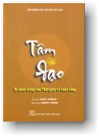
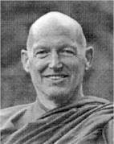

|
BuddhaSasana Home Page |
Vietnamese, with Unicode Times font |
|  |
Tâm và
Đạo The Mind and The Way Ajahn Sumedho Montreal, Quebec, Canada |
 |
PHẦN I - TIẾP CẬN VỚI PHÁP Chương 1 Chúng ta thường dễ dãi cho là mình đã biết nhiều về tôn giáo vì ảnh hưởng của tôn giáo thấm rất sâu vào đời sống văn hóa của chúng ta. Tuy nhiên, nhín chút thì giờ để quán tưởng về mục đích và mục tiêu thật sự của tôn giáo vẫn là điều hữu ích. Nhiều người thường xem tôn giáo là niềm tin vào một Đấng Thượng Đế hay những vị thần linh và từ đó, họ cho rằng bất cứ tôn giáo nào chủ trương tin vào thần thánh, hay nói khác đi, có quan điểm hữu thần, mới thật sự là tôn giáo. Vì thế, các tôn giáo hửu thần thường cho đạo Phật là đạo vô thần hay thậm chí không phải là tôn giáo. Họ xem Đạo Phật chỉ là một khoa triết học hay tâm lý học vì đạo Phật không chủ trương tin vào thần linh hay thượng đế. Đạo Phật không dựa trên một lý thuyết siêu hình hay một giáo điều nào đó mà chỉ dựa trên một kinh nghiệm chung của toàn thể nhân loại -- đó là sự đau khổ. Tư tưởng nền tảng của Đạo Phật là qua việc quán niệm, suy tưởng và hiểu biết về kinh nghiệm khổ đau chung đó, con người có thể vượt lên trên những ảo tưởng tâm lý đã tạo nên chính sự khổ đau của họ. Từ "tôn giáo" hay "religion" có gốc từ tiếng La tinh "religio" có nghĩa là "mối liên hệ", "sự nối kết" hay "sự kết hợp." Nó hàm ý về quan hệ giữa con người với một đối tượng thiêng liêng và ảnh hưởng bao trùm của quan hệ nầy trên toàn bộ nhân cách của người đó. Để trở thành một người thật sự "tôn giáo", bạn phải tìm cầu và thiết lập quan hệ với một đối tượng thiêng liêng, hay một thực tại tuyệt đối, dâng hiến đời mình và sống trọn vẹn với quan hệ đó cho đến lúc bạn đạt được sự hiểu biết tối thượng. Tất cả tôn giáo đều nói về "sự giải thoát" và "sự cứu rỗi." Những danh từ đại loại như thế nhằm truyền đạt ý nghĩa về sự tự do và giải thoát khỏi những mê lầm và ảo tưởng tâm lý, về sự tự do tuyệt đối và viên mãn, và về sự hiểu biết toàn bộ thực tại tuyệt đối. Trong đạo Phật, chúng ta gọi đó là sự giác ngộ. TÌM HIỂU BẢN CHẤT CỦA KHỔ ĐAU Đạo Phật là đạo quán niệm và suy tưởng về sự khổ đau vì đó là kinh nghiệm chung của toàn thể nhân loại. Trong đạo Phật, khổ đau không nhất thiết phải đến từ một thảm kịch lớn lao hay một nỗi bất hạnh kinh hoàng. Nó chỉ đơn giản là tình cảm bất toại nguyện, không hạnh phúc và thất vọng mà tất cả chúng ta đều trải qua nhiều lần trong đời. Khổ đau là kinh nghiệm chung của cả nam lẫn nữ, cả người giàu lẫn người nghèo. Dù chúng ta khác biệt về màu da và dân tộc, khổ đau vẫn là sợi dây chung ràng buộc và nối kết chúng ta lại với nhau. Vì thế trong Đạo Phật, khổ đau được xem là một sự thật thánh thiện. Nó không phải là sự thật tuyệt đối. Khi Đức Phật thuyết giảng về khổ đau như một sự thật thánh thiện, Ngài không có ý muốn khuyên chúng ta bám vào kinh nghiệm khổ đau và mù quáng tin vào đó như một sự thật tuyệt đối. Trái lại, Ngài dạy chúng ta dùng kinh nghiệm khổ đau như một chân lý thánh thiện để quán niệm và suy tưởng. Chúng ta quán tưởng: Khổ đau là gì? Thực chất của nó là gì? Tại sao ta đau khổ? Đau khổ về cái gì? Hiểu biết được bản chất của khổ đau là một cái nhìn trí tuệ quan trọng. Với kinh nghiệm riêng của mình, bạn hãy thử suy nghĩ. Trong đời, bạn đã dành bao nhiêu thời gian để tránh né hoặc chạy trốn những điều phiền lòng hay những gì bạn chán ghét? Xã hội mà chúng ta đang sống đã bỏ ra bao công sức để đi tìm hạnh phúc và lạc thú ở đời và trốn tránh những điều khó chịu và những gì chúng ta không ưa thích? Chúng ta có thể cảm thấy hạnh phúc trong một giây phút nào đó, say mê miệt mài trong một khoảnh khắc nào đó, đạt được những điều mà chúng ta không cho là khổ đau, thí dụ như một tình cảm sôi nổi và hứng thú, một mối tình lãng mạn, một cuộc phiêu lưu kỳ thú, những cảm giác êm dịu của thân xác, được ăn những món ngon vật lạ, nghe tiếng nhạc êm dịu, hay nhiều thứ khác nữa. Nhưng thật ra, chúng ta làm tất cả những điều nầy chỉ là để tránh xa và xua đuổi những sợ hãi, bất mãn, lo âu, và phiền muộn luôn là bóng ma lãng vãng trong tâm thức chưa giác ngộ của chúng ta. Ngày nào mà con người còn sống trong vô minh, không chịu nhìn thẳng vào khổ đau và tìm hiểu bản chất của khổ đau thì họ sẽ tiếp tục bị ám ảnh và không ngừng lo âu, sợ hãi về chính cuộc sống của mình. Để hiểu được khổ đau, chúng ta phải chấp nhận thay vì tìm cách xua đuổi và chối bỏ khổ đau, hay đổ lỗi cho người khác. Chúng ta sẽ nhận ra rằng khổ đau có nguyên nhân của nó và rằng sự xuất hiện của khổ đau tùy thuộc vào một số điều kiện. Đó là những điều kiện tâm lý do chúng ta tự tạo hay do nếp sống văn hóa và gia đình huân tập. Kinh nghiệm sống và quá trình huân tập tâm lý nầy bắt đầu ngay từ lúc chúng ta lọt lòng mẹ. Gia đình, tập thể, cộng đồng, trường học, tất cả những định chế này đã gieo trồng và nuôi dưỡng trong tâm chúng ta những định kiến, thiên kiến, và quan điểm -- cả thiện lẫn bất thiện. Giờ đây, nếu chúng ta không thật sự nhìn thẳng vào những điều kiện tâm lý nầy, xem xét và tìm hiểu bản chất thật sự của chúng, chắc chắn chúng ta sẽ tiếp tục bị chúng sai khiến, chúng ta sẽ hiểu và diễn giải kinh nghiệm sống của mình qua những cái nhìn lệch lạc. Nhưng nếu chúng ta xem xét và tìm hiểu chính bản chất của sự đau khổ, chúng ta sẽ bắt đầu làm quen với những tình cảm như kinh sợ, ham muốn và khát khao, và rồi chúng ta sẽ khám phá ra rằng bản chất thật của chúng ta không phải là những ham muốn hay sợ hãi nầy. Bản chất thật của chúng ta hoàn toàn không tùy thuộc vào bất cứ điều kiện nào. PHÁP HỮU VI, PHÁP VÔ VI, VÀ Ý THỨC CON NGƯỜI Các tôn giáo thường lấy quan hệ giữa thế giới hữu vi, còn được gọi là thế giới duyên sinh hay thế giới bị điều kiện và thế giới vô vi, còn được gọi là thế giới vô sinh hay thế giới không bị điều kiện làm đối tượng chính. Điều nầy có nghĩa là nếu đi vào tận cốt lõi của bất cứ tôn giáo nào, bạn sẽ thấy là tất cả đều đặt trọng tâm vào điểm kết thúc của cuộc sống hay sự ngừng nghỉ của thế giới hữu vi. Thấy được sự chấm dứt của thế giới hữu vi cũng là điểm bắt đầu của một quá trình chứng ngộ và hiểu biết về thế giới vô vi. Thuật ngữ đạo Phật có ghi: " Có pháp vô vi; và nếu không có pháp vô vi, thì cũng không có pháp hữu vi." Pháp hữu vi sinh và diệt trong pháp vô vi, và qua đó, chúng ta có thể thấy được quan hệ giữa thế giới hữu vi và thế giới vô vi. Đã sinh ra làm người, chúng ta phải chịu sự chi phối của những giới hạn và điều kiện của thế giới dựa trên giác quan. Sự có mặt của chúng ta trên cõi đời nầy có nghĩa là chúng ta đã thoát sinh từ thế giới vô vi và thị hiện dưới dạng một sắc thân riêng biệt và tùy thuộc vào nhiều điều kiện. Và có sắc thân con người nầy cũng bao hàm ý nghĩa là chúng ta có ý thức. Ý thức luôn xác định quan hệ giữa chủ thể và khách thể, và trong Đạo Phật, ý thức được xem là chức năng phân biệt của tâm. Ngay bây giờ, bạn hãy suy nghĩ về điều nầy. Bạn đang ngồi đây và lắng nghe những lời tôi đang giảng. Đây là kinh nghiệm của ý thức. Bạn có thể cảm thấy hơi nóng trong phòng, bạn có thể nhìn quang cảnh chung quanh, bạn có thể nghe những âm thanh. Tất cả điều nầy có nghĩa là bạn đã được sinh ra trong sắc thân con người và từ đây cho đến cuối đời, ngày nào mà sắc thân nầy còn sống, nó sẽ tiếp tục ghi nhận những cảm thọ và ý thức sẽ tiếp tục sinh khởi trong tâm. Ý thức luôn cho ta cái ấn tượng là có chủ thể và khách thể, vì thế, nếu chúng ta không chịu khó quan sát và tìm hiểu bản chất thật sự của sự vật, chúng ta sẽ bị kẹt trong cái nhìn nhị nguyên, cho "sắc thân nầy là của tôi, cảm thọ nầy là của tôi, ý thức nầy là của tôi." Do đó, thái độ nhị nguyên bắt nguồn từ ý thức. Và để rồi, với khả năng hiểu biết, ghi nhớ và nhận thức của tâm, chúng ta xây dựng cho mình một cá tính hay nhân cách. Thỉnh thoảng chúng ta rất yêu thích và thú vị về nhân cách của mình. Nhưng đôi khi chúng ta lại sợ hãi một cách vô lý, nhìn sai lệch và lo âu về chính con người của mình. ƯỚC VỌNG CỦA TÂM THỨC CON NGƯỜI Hiện nay, trong các xã hội có đời sống vật chất phát triển cao, phần lớn các nỗi đau khổ và tuyệt vọng của con người đều bắt nguồn từ sự kiện là chúng ta -- những con người hiện đại -- thường không thể hướng đến với một cái gì cao hơn ngoài cái trái đất mà chúng ta đang sống và sắc thân làm người nầy. Xã hội hiện đại không thật sự khuyến khích con người ước mơ và hướng về sự hiểu biết tối thượng hay quả vị giác ngộ. Ngược lại, hình như người ta thường kiềm chế và ngăn cản ước nguyện nầy. Vì không liên hệ được với một sự thật cao hơn cuộc đời bình thường nầy, cuộc sống của chúng ta trở thành vô nghĩa. Nếu chúng ta không thể liên hệ được với một cái gì khác hơn ngoài những kinh nghiệm của một thân người sống trên trái đất, trong cái vũ trụ đầy bí ẩn nầy, thì tất cả ý nghĩa còn lại của cuộc sống chỉ là để sinh ra rồi chết. Dĩ nhiên, những câu hỏi kế tiếp sẽ là mục đích của cuộc sống là gì? Ý nghĩa của cuộc đời là gì? Tại sao chúng ta phải quan tâm vấn đề nầy? Tại sao sống phải có mục đích? Tại sao cuộc đời phải có ý nghĩa? Tại sao chúng ta muốn cuộc sống có ý nghĩa? Tại sao chúng ta tạo ra những ngôn ngữ, triết học và tôn giáo? Tại sao chúng ta mong mỏi hay ước mơ về sự giác ngộ tối thượng nếu tất cả những gì đang có hay có thể có chỉ là những kinh nghiệm sống dựa trên cái nhìn của tự ngã? Phải chăng việc chúng ta được sinh ra trong sắc thân làm người nầy, với những giới hạn của nó, chỉ là một điều ngẫu nhiên trong cái hệ thống hành tinh vượt ngoài tầm kiểm soát của chúng ta? Chúng ta hoàn toàn không thể nào hiểu tường tận cái vũ trụ mà chúng ta đang sống. Chúng ta chỉ có thể đặt câu hỏi và tìm hiểu về nó. Chúng ta có thể trực tiếp cảm nhận và ngắm nhìn vũ trụ, nhưng chúng ta không thể nào thu nó nhỏ lại thành viên thuốc hay hạt đậu. Đầu óc của chúng ta cũng không thể ghi nhận hết được nó. Vì thế, những người có tư tưởng duy vật thường khuyên chúng ta không nên đặt ra những câu hỏi có tính tâm linh và triết học vừa nêu trên. Ngược lại, họ thúc đẩy chúng ta diễn giải tất cả kinh nghiệm của cuộc đời nầy bằng lô gích và lý luận, dựa trên những giá trị của chủ nghĩa duy vật và khoa học thực nghiệm. KINH NGHIỆM TỈNH THỨC Đạo Phật chỉ cho chúng ta thấy cái kinh nghiệm chung và phổ biến của tất cả chúng sinh. Đó là sự đau khổ. Đạo Phật cũng trình bày cho chúng ta con đường đi ra khỏi khổ đau. Khổ đau là kinh nghiệm có sức mạnh làm thức tỉnh con người. Khi đau khổ, chúng ta sẽ bắt đầu đặt câu hỏi. Chúng ta sẽ đi tìm, xem xét, nghi vấn và thử tìm giải đáp. Trong câu chuyện của Thái tử Siđdattha (tên của Đức Phật trước khi Ngài giác ngộ), chúng ta được kể rằng khi còn là thái tử, Ngài sống trong khung cảnh chỉ có dục lạc, sắc đẹp, tiện nghi, và ân sủng -- nói khác đi, Ngài có tất cả những gì tốt đẹp nhất trên đời. Và rồi, như câu chuyện tiếp tục kể, vào lúc hai mươi chín tuổi, Thái tử Siđhattha rời cung điện hoàng gia đi tham quan ngoại thành, và trong chuyến đi nầy, Ngài gặp và biết được những sứ giả hiện thân của tuổi già, bệnh tật, và sự chết. Ngày nay, có người sẽ nói là Đức Phật chắc chắn phải biết về tuổi già, bệnh tật, và sự chết trước năm Ngài hai mươi chín tuổi. Theo cách suy nghĩ của chúng ta ngày nay, rõ ràng là từ lúc còn nhỏ, ai cũng biết là mọi người đều lớn lên, già, bịnh, rồi chết. Tuy nhiên, trong trường hợp của Đức Phật, Thái tử Siđattha đã bị cách ly khỏi những kinh nghiệm này từ lúc còn nhỏ, và mãi cho đến lúc Ngài tiếp cận trực tiếp với những kinh nghiệm trên, Ngài mới thật sự bừng ngộ. Cũng tương tự như thế, chúng ta có thể sống cả đời và cho rằng mọi việc đều sẽ ổn thỏa. Ngay cả những đau khổ hay thất vọng thường gặp hàng ngày cũng không nhất thiết làm chúng ta thức tỉnh. Chúng ta có thể suy nghĩ phớt qua về chúng. Nhưng chung quanh chúng ta có quá nhiều điều kiện và yếu tố lôi kéo và hướng chúng ta ra bên ngoài nên chúng ta không còn màng đến việc tìm hiểu và để ý đến những nỗi đau thường gặp trong đời nữa. Phải chăng đổ lỗi cho người khác đã gây đau khổ cho chúng ta là một việc dễ làm? Chúng ta có thể đổ lỗi cho nhà nước, cha mẹ, bạn bè hay kẻ thù của chúng ta và cho những thế lực từ bên ngoài. Nhưng chúng ta chỉ bừng tỉnh với cái đau của tuổi già, bệnh tật, và sự chết khi chúng ta biết là những điều này sắp xảy đến cho chúng ta. Và sự bừng tỉnh này đến, không phải chỉ như một khái niệm trừu tượng mà là một tình cảm thật sự trào dâng lên từ chính gan ruột của chúng ta, là một cái nhìn trí tuệ thật sự rằng đây là những gì xảy đến cho tất cả mọi người. Những gì sinh ra sẽ già, suy thoái, rồi chết. Sứ giả thứ tư mà Đức Phật gặp trong chuyến tham quan ngoại thành là một vị sa môn. Sa môn là một tu sĩ hay một người tầm đạo, một người dâng hiến đời mình cho lý tưởng đi tìm sự thật tuyệt đối. Trong câu chuyện về cuộc đời Đức Phật, vị Sa môn được mô tả như một tu sĩ cạo đầu và mặc y. Trong đạo Phật, bốn vị sứ giả nầy tượng trưng cho sự Già, Bịnh, Chết, và Giải thoát . Nó tượng trưng cho sự thức tỉnh của tâm thức con người về một lý tưởng tôn giáo, về ước mơ nhận thức được sự thật tuyệt đối, và về ước vọng được tự do và giải thoát khỏi tất cả si mê và đau khổ tiềm ẩn trong tất cả trái tim của nhân loại. VIỆC TU TẬP TRONG ĐẠO PHẬT Ngày nay, nhiều người thường mô tả việc hành thiền trong đạo Phật như là sự rời bỏ cuộc đời nầy để phát triển một trạng thái tâm thức vắng lặng và tập trung cao độ, trong một khung cảnh được lựa chọn, điều chỉnh, và kiểm soát cẩn thận. Vì thế ở Mỹ và một số nước khác nơi mà việc hành thiền ngày càng phổ biến, người ta quyết đoán rằng hành thiền là để đạt được một trạng thái vắng lặng và tập trung của tâm trong đó kỹ thuật thiền và việc kiểm soát thân tâm là rất quan trọng. Kỹ thuật hành thiền là tốt và cần thiết. Nhưng khi đã phát huy được một số năng lực quán chiếu thì bạn không cần, hoặc thậm chí không nên mất thì giờ tinh luyện bằng cách đè nén tất cả những gì thô thiển hay khó chịu xảy ra trong tâm. Trái lại, bạn nên triển khai và phát huy tối đa năng lực quán chiếu và nhạy cảm của tâm để biết rằng, ngay bây giờ, những điều kiện mà bạn nhận thức được -- hay nói khác đi, những gì bạn đang cảm xúc, thấy, nghe, ngửi, nếm, đụng chạm, và suy nghĩ -- đều là vô thường. Vô thường là đặc tính chung của tất cả hiện tượng, cho dù đó là niềm tin vào Thượng Đế hay những hồi tưởng về quá khứ, những tư tưởng sân hận hay tình cảm thương mến, cao hay thấp, thô thiển hay vi tế, xấu hay tốt, dễ chịu hay đau đớn. Bất kỳ tính chất của nó là gì, bạn đang quán sát nó như một sự vật khách quan. Tất cả những gì bắt đầu rồi sẽ chấm dứt. Đó là vô thường. Và bây giờ, như một phương pháp hành trì và quán niêïm về cuộc sống, việc khai mở tâm thức sẽ giúp bạn nhìn thấy rõ tình cảm và tư tưởng, bản chất của sắc thân, cùng với những đối tượng giác quan của bạn. Chúng ta hãy trở lại vấn đề ý thức. Khoa học hiện đại hay khoa học thực nghiệm xem thế giới vật chất mà chúng ta thấy, nghe và cảm nhận được mới là thế giới có thật. Vì thế, thế giới khách quan nầy được xem là một thực tại. Chúng ta có thể trông thấy thế giới vật chất, đồng ý với nhau về tính chất của nó, nghe, ngửi, nếm, đụng chạm nó, hay thậm chí đồng ý với nhau về cảm nhận hay tên gọi mà chúng ta dành cho nó. Nhưng phải chăng cảm nhận về thế giới nầy cũng chỉ là một điều kiện khách quan được sinh khởi trong tâm thức? Vì ý thức tạo ra cảm tưởng là có chủ thể và khách thể nên khi quan sát về thế giới vật chất, chúng ta nghĩ là chúng ta đang quan sát một cái gì đó tồn tại bên ngoài và biệt lập với chúng ta. Trong khi giảng dạy giáo lý, Đức Phật đã đẩy quan hệ chủ thể và khách thể đến điểm tận cùng của nó. Ngài dạy rằng tất cả cảm nhận, tất cả trạng thái khởi lên trong tâm thức, tất cả tình cảm, tất cả cảm xúc, tất cả đối tượng thế giới vật chất mà chúng ta nghe và thấy đều thay đổi. Ngài nói, "Những gì có sự bắt đầu sẽ có sự chấm dứt." Và Đức Phật luôn nhắc đi nhắc lại rằng đây là một cái nhìn trí tuệ rất quan trọng. Nó giải thoát chúng ta khỏi tất cả những mê lầm. Những gì có sự bắt đầu sẽ có sự chấm dứt. Ý thức cũng có thể được định nghĩa là khả năng thấy biết hay kinh nghiệm của sự thấy biết. Chủ thể thấy biết khách thể. Khi nhìn vào những sự vật và cho chúng tên gọi, chúng ta nghĩ là chúng ta biết về chúng. Chúng ta nghĩ là mình biết người nầy hay người nọ vì chúng ta biết tên của họ hay ghi nhớ họ trong ký ức. Chúng ta nghĩ là chúng ta biết tất cả mọi việc trên đời vì chúng ta có thể ghi nhớ được chúng. Nhưng phần lớn, khả năng thấy biết của chúng ta luôn bị giới hạn -- chúng ta chỉ có thể biết "về" chứ không biết trực tiếp bản chất của sự vật. Tu tập trong đạo Phật là an trú trong sự tỉnh giác thanh tịnh nơi đó có một loại hiểu biết đặc biệt mà chúng ta gọi là trí tuệ, hay cái thấy biết trực tiếp. Đó là một loại tri giác không dựa trên cảm nhận, tư duy, lập trường, hay học thuyết, mà chỉ có thể có qua sự chánh niệm và tỉnh giác. Chánh niệm và tỉnh giác là khả năng không bị dính mắc vào bất cứ đối tượng nào, dù đó là vật chất hay tinh thần. Khi không bị dính mắc, tâm sẽ ở trong trạng thái tỉnh thức, hiểu biết, và trong sáng thuần tịnh. Đó chính là tỉnh giác và chánh niệm. Tâm tỉnh giác là tâm thanh tịnh, dễ tiếp thu, và nhạy cảm với những gì xảy ra chung quanh. Nó không còn là cái tâm bị giới hạn, quy định và chỉ biết phản ứng lại với những lạc thú và đau đớn, lời khen và tiếng chê, hạnh phúc và đau khổ. Thí dụ nếu bây giờ bạn đang nổi giận, bạn có thể để cho cơn giận khống chế mình. Bạn có thể cho mình giận là đúng và tiếp tục nuôi dưỡng tình cảm đặc thù đó, hoặc là bạn có thể đè nén cơn giận và tìm cách tiêu diệt nó vì bạn sợ hoặc không thích sự giận dỗi. Tuy nhiên, thay vì chọn một trong hai cách trên, bạn có thể quan sát cơn giận như một đối tượng khách quan. Và nếu cơn giận là bản ngã thật sự của bạn, thì bạn không thể nào quan sát nó được; đây chính là ý nghĩa của những gì mà tôi gọi là "quán tưởng". Cái gì có thể quan sát và suy tưởng về tình cảm giận? Cái gì có thể theo dõi và xem xét tình cảm, sự nóng lạnh của thân thể, hay những trạng thái của tâm? Cái có khả năng quan sát và xem xét nầy chính là tâm quán tưởng hay tâm chánh niệm và tỉnh giác. Tâm của con người là tâm có khả năng quán tưởng. SỰ HIỂN LỘ CỦA CHÂN LÝ CHUNG CHO TẤT CẢ TÔN GIÁO Chúng ta có thể đặt câu hỏi: Tôi là ai? Tại sao tôi sinh ra trên đời nầy? Thật ra đời sống là gì? Điều gì sẽ xảy ra khi tôi chết ? Cuộc sống nầy có mục đích hay ý nghĩa gì không? Vì chúng ta thường cho là chỉ có người khác mới có thể trả lời những câu hỏi nầy còn bản thân chúng ta thì mù tịt, nên chúng ta thường đi tìm lời giải đáp từ bên ngoài thay vì tìm cách tự khai mở tâm thức của mình và kiên nhẫn chánh niệm nhìn sự thật hiển lộ. Qua việc chánh niệm và tỉnh giác thật sự, chân lý sẽ được hiển bày. Và sự hiển lộ chân lý nầy chính là sự giác ngộ về tâm linh. Khi chúng ta dâng hiến đời mình cho một lý tưởng thánh thiện và sống trọn vẹn trong đó, chúng ta tạo điều kiện cho chân lý hiển lộ và trí tuệ phát sinh. Đây là trí tuệ sâu sắc và thật sự có khả năng soi sáng vào bản chất của sự vật. Chân lý hiển lộ không thể diễn tả bằng lời. Ngôn ngữ không đủ khả năng diễn đạt kinh nghiệm chứng ngộ. Chính vì thế mà kinh nghiệm chứng ngộ có thể rất khác nhau. Ngôn từ và cách thức diễn đạt kinh nghiệm chứng ngộ là thay đổi không lường. Vì thế khi diễn tả bằng lời, kinh nghiệm chứng ngộ của người Phật tử rất là Phật giáo, của người Ky tô giáo rất là Ky tô giáo, và điều nầy cũng hợp lý thôi. Không có gì sai trái cả. Nhưng chúng ta cần chấp nhận giới hạn của quy ước ngôn ngữ. Chúng ta cần hiểu rằng ngôn ngữ không phải là sự thật tuyệt đối; nó là một cố gắng của con người để truyền đạt cái thực tại không thể diễn đạt bằng lời nầy đến người khác. Theo dõi những người tầm đạo ngày nay là một điều thú vị. Ở một nước như Anh nơi mà phần đông dân chúng là Ky tô giáo giờ đây lại trở thành đa tôn giáo. Tại đất nước nầy, tín đồ của những tôn giáo khác nhau đã nhiều lần tìm cách gặp gỡ và cố gắng tìm hiểu về đức tin của nhau. Chúng ta có thể dừng lại ở mức độ đơn giản và chỉ cần biết là người Hồi giáo tin ở Đấng Allah, người Ky tô giáo tin ở Chúa Jesus Christ và người Phật tử tin ở Đức Phật Thích Ca. Nhưng điều mà tôi quan tâm ở đây là làm sao chúng ta có thể vượt lên trên những quy ước và tập tục tôn giáo để tiến đến sự hiểu biết thật sự hay sự hiểu biết sâu sắc về chân lý tuyệt đối. Và đây là cách nói của người theo đạo Phật. Ngày nay chúng ta có dịp cùng nhau đi tìm chân lý chung cho tất cả tôn giáo; tất cả chúng ta có thể giúp nhau trong cuộc hành trình nầy. Hình như bây giờ là lúc mà việc tìm cách thay đổi đức tin của người khác hay tranh giành ảnh hưởng tôn giáo đã trở thành vô ích và vô giá trị. Thay vì tìm cách thay đổi đức tin của người khác, tôn giáo cho chúng ta cơ hội để thức tỉnh về bản chất thật sự của chúng ta, về sự tự do thật sự, lòng từ ái và bi mẫn. Đó là cách sống với tất cả nhạy cảm và khả năng tiếp thu hầu chúng ta có thể hân hoan và mở rộng con người của mình để tiếp cận và tiếp nhận những bí ẩn và kỳ diệu của vũ trụ trong suốt phần còn lại của cuộc đời. * * Câu hỏi: Đạo Phật có phải là một tôn giáo hay triết học chỉ tập trung nhìn vào nội tâm con người? Trả lời: Mới thoạt nhìn thì hình như là như thế vì trong khi hành thiền, bạn ngồi xuống, nhắm mắt, và nhìn vào bên trong. Nhưng thật ra, hành thiền là để giúp bạn thấy và hiểu được bản chất của tất cả sự vật trên đời. Như là con người, bạn đang sống trong một sắc thân rất mỏng manh và nhạy cảm. Thân xác nầy rất yếu ớt và tồn tại trong cái vũ trụ bao la mà chúng ta không thể nào hiểu hết được. Chúng ta thường ngộ nhận cho thế giới nầy là một cái gì đó tồn tại bên ngoài chúng ta. Khi suy nghĩ theo cách nầy, nghĩa là khi còn phân biệt "bên trong" và "bên ngoài", thì việc nhìn vào nội tâm hình như không quan trọng bằng nhìn ra bên ngoài. Cái thế giới bên trong mà bạn sắp đi vào hình như quá nhỏ bé so với cái vũ trụ bao la nằm bên ngoài. Nhưng khi buông bỏ những nhận thức hay những trạng thái tâm, bạn sẽ có những cảm nhận rất mới lạ về vũ trụ nầy. Nó sẽ trở thành một cái gì đó khác hơn là cái bên ngoài được phân chia thành chủ thể và khách thể. Chúng ta không có từ ngữ nào khác để mô tả sự cảm nhận đó ngoại trừ từ "giác ngộ". Sự vận hành của máy thu thanh (radio) là thí dụ tốt nhất để chúng ta hiểu thêm về hiện tượng nầy. Thân thể chúng ta nhạy cảm giống như máy thu thanh và thu hình (television). Những gì đi qua thân và tâm sẽ được thể hiện lại tùy theo thái độ, nỗi lo sợ và lòng ham muốn riêng của chúng ta. Nhưng khi tâm chúng ta không còn bị ràng buộc bởi những thái độ và tình cảm nầy, thân chúng ta sẽ bắt đầu tiếp nhận những làn sóng khác -- làn sóng của trí tuệ và từ bi. * Câu hỏi: Thế thì người Phật tử tin gì? Trả lời: Đây là một câu hỏi thông thường nhưng không dễ trả lời. Nếu nói chúng tôi không có tín điều, người ta sẽ bảo là " Vậy là ông không tin gì hết." Và nếu nói: "Không, không phải vậy. Chúng tôi cũng không cho là không có gì hết," thì họ sẽ bảo là, "Vậy thì ông tin có một cái gì đó; có phải ông tin Thượng Đế không?" Và nếu trả lời là chúng tôi không thấy cần phải tin Thượng đế. Thì họ sẽ bảo, "Vậy là ông không tin có Thượng đế?" Và như thế, chúng ta cứ cãi qua cãi lại vì người đời thường cho là theo một tôn giáo thì phải tin vào một cái gì đó: tin ở giáo lý và thái độ hữu thần hay tin ở thái độ vô thần. Đây là hai thái cực của tâm thức con người -- một là tin vào sự vĩnh hằng, hai là tin vào sự diệt tận. Tuy nhiên, bạn không thể dùng những khái niệm của các tôn giáo khác để hiểu đạo Phật. Chúng ta tiếp cận với Đạo Phật từ một góc độ khác. Chúng ta không muốn tin vào các tín điều hay giáo lý mà người khác bảo chúng ta phải tin. Chúng ta muốn tự mình đi tìm chân lý. Chúng ta phải tìm ra được sự thật của các pháp. Nếu không, chúng ta sẽ chỉ là những chúng sinh lạc loài và bơ vơ trong vũ trụ đầy bí ẩn nầy, không thể nào hiểu được những gì xảy đến với chúng ta hay hiểu tại sao sự vật xảy ra như nó đang xảy ra. Có phải sự có mặt của chúng ta trên đời nầy chỉ là một sự tình cờ hay có một cái gì hơn thế nữa? Loài người cảm thấy rằng có một cái gì cao hơn và vượt lên trên cõi dục giới nầy. Ở các xã hội sơ khai và hiện đại, chúng ta bắt gặp tình cảm tôn giáo vận hành như một luồng năng lượng hướng đến một cái gì đó hay một cố gắng để vươn đến một cái gì cao hơn. Tất cả chúng ta đều nằm trong cái bí ẩn vô biên đó và chúng ta muốn tìm cách liên hệ và tiếp cận với nó. Thế thì chúng ta phải làm gì trong tư thế của mình -- tư thế bị giam hãm trong tấm thân làm người nầy trong suốt sáu, bảy, tám, chín chục năm trời? Nếu có chân lý, chắc chắn chúng ta sẽ mở rộng, tiếp nhận, và hiểu được nó. Trái lại, nếu chúng ta cứ luôn sống trong ảo tưởng và mê lầm, thì kiếp người nầy quả thật là đáng buồn và không có mục đích. Nếu không có chân lý, cuộc đời nầy sẽ vô nghĩa và cho dù bạn làm gì đi nữa, cuộc sống vẫn không có giá trị gì hết. Mặc dù bạn có thể theo chủ nghĩa hư vô cho rằng cuộc đời nầy chẳng có nghĩa gì hết, nhưng phải chăng bạn vẫn không tin chắc về điều nầy? Những gì bạn có thể biết chắc ngay bây giờ là bạn không biết gì về cuộc đời nầy và đó là tình trạng hiện tại của bạn. Phải chăng con người có khả năng hiểu được chân lý? Con người có trí thông minh. Con người có khuynh hướng đi tìm cái Thiện và cái Mỹ. Ai cũng muốn trốn tránh sự đau khổ và những điều xấu xa thấp hèn. Con người luôn ước vọng về một cái gì cao hơn. Chúng ta chán ghét chính bản thân mình khi chúng ta sống đời thấp hèn, trụy lạc và đáng ghê tởm. Chúng ta cảm thấy xấu hổ khi làm những điều xấu ác hay hẹp lượng và không muốn ai biết về những gì chúng ta làm. Nếu quả thật cuộc đời nầy là vô nghĩa thì chúng ta đâu cần phải xấu hổ? Chúng ta có thể làm bất cứ điều gì và chả cần để ý đến ai cả. Nhưng chúng ta vẫn cảm thấy là có những việc chúng ta làm là đáng chê trách hay thiếu sáng suốt nên chúng ta luôn tìm cách vượt lên trên những thôi thúc bản năng của mình. Con người có trí thông minh; chúng ta có thể tư duy về những điều hay ho và cao siêu nhất. Đầu óc chúng ta có thể nghĩ ra những giải pháp tốt đẹp nhất. Những thể chế dân chủ, chủ nghĩa xã hội, chủ nghĩa cộng sản -- đây là kết quả của quá trình tư duy cao cấp nhất về những hình thức nhà nước chính đáng và công bằng nhất. Điều này không có nghĩa là nhà nước chúng ta đã đạt được mục tiêu lý tưởng nhưng họ đã có cố gắng. Chúng ta cũng biết thưởng ngoạn những gì tinh tế và đẹp đẽ: cái hay và đẹp trong âm nhạc, nghệ thuật, và văn chương. Tất cả điều này nói lên ước vọng của con người về một cái gì đẹp hơn và toàn thiện hơn. Chúng ta có thể ước mơ về một nhân sinh quan rộng lớn và phổ biến hơn: một trái đất, một hệ thống sinh thái, và một gia đình chung cho toàn nhân loại. Ngày nay, những nhận thức nầy ngày càng trở nên phổ biến. Về nhiều mặt, nhân loại ngày nay đang trở thành một đại gia đình: những gì xảy ra ở Mông Cổ hay Argentina (Nam Mỹ) đều ảnh hưởng đến toàn thế giới. Chúng ta có thể mở rộng khả năng thấy biết của mình, từ cái nhìn cá nhân hạn hẹp trong đó chúng ta chỉ biết có mình đến cái nhìn toàn cầu. Với cái nhìn mới nầy, chúng ta mở rộng và tiếp nhận tất cả loài người vào trong gia đình của chúng ta thay vì chỉ có gia đình và quốc gia riêng của mình. Khi tâm thức được khai mở, nhận thức và tư tưởng chúng ta sẽ từ ái và bi mẫn hơn và vượt lên trên tình cảm cá nhân ích kỷ. Chúng ta sẽ không chỉ lo cho gia đình, tập thể, giai cấp, hay chủng tộc của chúng ta. Chúng ta sẽ mở rộng tâm thức để tiếp nhận tất cả loài người và rồi tất cả chúng sinh. Tâm chúng ta sẽ phủ trùm tất cả và trở thành vô biên. -ooOoo- Chương 2 Lúc Đức Phật vừa đại ngộ dưới cội bồ đề, Ngài nghĩ, "Chắc sẽ không có người hiểu được những gì ta vừa chứng ngộ; nó quá vi tế. Vì thế, ta không nên bận tâm tìm cách giải thích; Ta không hy vọng gì nữa về việc nầy và sẽ tiếp tục ngồi dưới cội bồ đề." Nhưng lúc đó, thần Phạm thiên Sahampati, vị tượng trưng cho lòng bi mẫn với tất cả chúng sanh, hiện ra và thưa với Phật, "Bạch Thế Tôn, con thấy vẫn có những người với đôi mắt chỉ dính chút bụi mờ. Cung thỉnh Ngài giảng Pháp vì lợi lạc của số người ít ỏi nầy." Đức Phật nghĩ, "Thế thì ta sẽ cố gắng. Ngồi mãi dưới gốc cây bồ đề nầy không hữu ích cho ai cả. Vả lại, ta cũng chưa có ý định làm gì khác." Rồi Ngài tự hỏi, "Thế thì ta nên giảng Pháp cho ai?" Sau khi đắn đo suy nghĩ, Ngài quyết định đi đến thành Benares tìm lại năm người bạn đã cùng tu khổ hạnh với Ngài và đã rời bỏ Ngài ra đi khi họ nghĩ rằng Ngài không còn đủ ý chí để cùng tu khổ hạnh với họ. Khi Đức Phật còn ở bên cạnh những người bạn nầy, Ngài là một nhà tu khổ hạnh siêu việt. Thân Ngài chỉ còn như một bộ xương, hốc hác, với đôi mắt thụt sâu, vì Ngài tự ý nhịn đói để nhiếp phục những cơn đói khát dữ dội. Ngài tu khổ hạnh tuyệt hay đến nỗi ngày nào mà Ngài còn theo phép tu nầy, năm người bạn nầy cho Ngài là một người kỳ diệu và phi thường. Tuy nhiên, cuối cùng Ngài nhận ra rằng không ăn uống để bồi dưỡng cơ thể và để cho cơ thể bị bệnh hoạn yếu đuối quả là phí phạm thời giờ, nên một hôm Ngài quyết định uống một chút nước cháo. Khi năm người bạn thấy Ngài ăn cháo, họ phẫn nộ cho là Ngài đã mất ý chí tu khổ hạnh nên từ bỏ Ngài và ra đi. Đức Phật vẫn nghĩ có lẽ năm vị nầy sẽ hiểu được những gì Ngài vừa chứng ngộ. Nên Ngài quyết định đi đến thành Benares để tìm họ. Khi Đức Phật đến Lộc Uyển (Vườn Nai) ở Saranath, gần thành Benares, vừa thoáng thấy Ngài, năm vị tu khổ hạnh đã nhận biết ngay là Ngài đã chứng ngộ và hiểu biết một điều gì đó rất sâu sắc và quan trọng, nên họ ngồi xuống và yêu cầu Ngài khai ngộ cho họ. Thế là Đức Phật giảng bài pháp đầu tiên mà ngày nay chúng ta biết dưới tên gọi Dhammacakka Sutta, Kinh Chuyển Pháp Luân hay Bài Pháp Khởi Động Bánh Xe Của Sự Thật. Bài pháp nầy là lời giảng dạy sâu sắc. Nó là một bài pháp để chúng ta thực hành và chứng ngộ. Nó không phải là một bài luận văn triết học xuất chúng; trái lại, nó là kim chỉ nam giúp chúng ta trên lộ trình tu tập và giác ngộ. Và kim chỉ nam nầy chính là giáo lý về Tứ Diệu Đế hay Bốn sự thật thánh thiện. Lời dạy của Đức Thế Tôn về Tứ Diệu Đế là dành chung cho tất cả các hệ phái trong Đạo Phật và nó là cái nhìn trực tiếp và xuyên thấu vào chính bản chất của sự vật. KHỔ ĐẾ HAY SỰ THẬT THÁNH THIỆN THỨ NHẤT Khổ Đế là sự thật đơn thuần về kinh nghiệm bất toại nguyện, bất mãn, khổ đau hay phiền não. Sự đau khổ này, tiếng Pali gọi là dukkha, là điều mà chúng ta có thể thấy một cách trực tiếp. Trong chúng ta, không ai mà không cảm nhận tình cảm thất vọng, khó chịu, bất mãn, hoài nghi, lo sợ, hay tuyệt vọng một lúc nào đó trong đời mình. Khổ Đế có nghĩa là không có gì là toàn thiện hoặc hoàn hảo trong đời dù cho bạn có tất cả những điều bạn muốn. Đau khổ không nhất thiết nghĩa là mẹ bạn không yêu thương bạn, mọi người đều ghét bỏ bạn và bạn bị nghèo túng, hiểu lầm, lợi dụng và bốc lột. Bạn có thể được mọi người quý mến, cha mẹ thương yêu và đối xử tuyệt vời, có đầy đủ sắc đẹp, của cải và tất cả sự may mắn mà người đời có thể có được. Nhưng bạn vẫn không toại nguyện. Bạn vẫn cảm thấy có một cái gì đó không hoàn hảo, một cái gì đó chưa toàn thiện, một cái gì đó chưa toại nguyện. Không cần biết bạn có bao nhiêu của cải, địa vị, ân sủng và may mắn trong cuộc đời, nội tâm bạn vẫn luôn có tình cảm hoài nghi và tuyệt vọng. Vẫn luôn có quá trình già nua của thân xác; vẫn luôn có bịnh tật và sự chết chóc trong tấm thân nầy. Và những vấn nạn siêu hình vẫn dai dẳng ám ảnh: Tại sao tôi sinh ra trong cõi đời nầy? Những gì sẽ xảy ra khi tôi chết? Chết là gì? Đây là những câu hỏi mà chúng ta không thể trả lời: Tại sao tôi được sinh ra? Những gì xảy ra khi tôi chết? Tôi sẽ lên thiên đàng hay xuống địa ngục, hay sẽ hoàn toàn tịch diệt? Phải chăng tôi có một linh hồn bất tử? Có phải tôi sẽ tái sinh thành con kiến hay con cóc? Tất cả chúng ta đều muốn biết những gì xảy ra khi chúng ta chết. Có thể chúng ta sợ phải đương đầu với sự thật nhưng vấn đề vẫn nằm đó và tiếp tục ám ảnh chúng ta. Khổ Đế chỉ cho chúng ta thấy sự đau khổ chung của loài người. Chúng ta đau khổ vì phải xa cách người mình yêu mến, gần gũi người mình chán ghét, không được những gì mình mong muốn và phải chịu đựng những thay đổi tự nhiên của cơ thể trong quá trình già, bịnh và chết. Đây là số phận chung của con người mà chúng ta có thể quán tưởng. Vì thế Đức Phật dạy, "Có một sự thật thánh thiện, đó là sự khổ đau (dukkha)." Với lời dạy nầy, Ngài chỉ ra điều mà tất cả chúng ta đều có thể biết được ngay bây giờ. Ở đây, vấn đề không phải là tin ở sự khổ đau mà là trực tiếp trải qua sự khổ đau, nỗi cơ cực, đau đớn, sợ hãi và lo âu của chính bạn. Xin hỏi có ai mà không bao giờ đau khổ không? Làm sao chúng ta có thể trực tiếp kinh nghiệm những khổ đau nầy chính là con đường chứng ngộ tâm linh mà tôi muốn trình bày cùng các bạn. Bạn bắt đầu đi trên con đường nầy bằng cách chứng nghiệm những gì bạn có thể chứng nghiệm. Lúc đầu, bạn không nhắm đến mục tiêu Niết Bàn hay trạng thái Bất Tử; bạn không chọn một quan điểm triết học hay siêu hình. Vì nếu phải chọn một quan điểm hay lập trường nào đó, bạn sẽ nhìn mọi việc lệch lạc. Thí dụ, nếu tin ở Thượng Đế, bạn sẽ thấy Thượng Đế có mặt ở tất cả mọi nơi, nhưng nếu không tin ở Thượng Đế, bạn sẽ không thấy Thượng Đế ở bất cứ nơi nào. Bất kỳ tư thế nào, khi đã chọn, nó sẽ luôn bóp méo cái nhìn của bạn và bạn sẽ diễn giải kinh nghiệm của mình qua cái nhìn lệch lạc đó. Nhưng phương pháp của Đức Phật là, thay vì cho chúng ta một tư thế, một lập trường để từ đó chúng ta nhìn mọi việc trên đời, Ngài chỉ cho chúng ta thấy sự khổ đau, điều mà ai cũng có thể dễ dàng nhận biết trong cuộc sống. Tôi đã từng nghe một vài người nói rằng họ chưa bao giờ đau khổ cả. Tôi thật kinh ngạc là họ có thể nói như vậy. Đối với tôi, cuộc đời nầy luôn có quá nhiều đau khổ. Nói điều này không phải vì trong đời tôi đã gặp nhiều bất hạnh lớn lao. Thật ra, tôi là một người rất may mắn. Cha mẹ tôi đối xử rất tốt với tôi và tôi đã có nhiều thuận duyên trong đời; Không ai đối xử tệ bạc hay nhục mạ tôi. Nhưng sống trên đời nầy tự nó là khổ. Đó là dukkha. Dukkha là nỗi khổ gắn liền với cuộc sống. Chỉ việc được sanh ra làm người tự nó là đau khổ. Nó là nỗi khổ gắn liền với đời người cho dù bạn có tất cả và cuộc đời bạn là vô cùng tươi đẹp và sung sướng. Trong chúng ta có vài bạn phải chịu nhiều bất hạnh, như gia đình xung đột hoặc tan vỡ Trong trường hợp nầy, chúng ta có lý do để than vãn rằng, " Người đó làm tôi đau khổ. Nếu người đó không có mặt ở đây thì tôi sẽ được an vui." Chúng ta nghĩ là nếu xua đuổi được tất cả những gì làm chúng ta đau khổ, chúng ta sẽ được hạnh phúc. Nhưng sự đời không phải như thế. Phần lớn những người tìm đến Đạo Phật ngày nay, trong mức độ nào đó, là những người được nhiều ân sủng trong xã hội. Họ được giáo dục tốt, có nhiều may mắn tạo nên tiền của và được đi du lịch nhiều nơi v.v… Nhưng dù có nhiều tiện nghi, khoái lạc và may mắn, họ vẫn không toại nguyện. Trước hết, dukkha hay sự đau khổ phải được chứng ngộ, phải được thật sự cảm nhận trong tâm; nói khác đi, nó phải trở thành một kinh nghiệm được nhận thức trọn vẹn và đầy đủ. Chúng ta đang sống trong một điều kiện rất giới hạn, đó là tấm thân thế tục nầy. Một tấm thân dễ bị tác động bởi khổ đau, dục lạc, và nhiệt độ nóng lạnh. Nó sẽ già nua và năm giác quan của nó sẽ suy yếu dần; Nó sẽ bệnh và chết. Và tất cả chúng ta đều biết những điều nầy và biết rằng cái chết đang chờ tất cả chúng ta. Cái chết đang có mặt tại đây. Cái chết là điều mà con người không thích nghĩ đến hay tìm cách nhận diện. Nhưng nó có thể xảy ra bất cứ lúc nào. Ngày nào mà chúng ta vẫn không hiểu về luân hồi sinh tử hay về những chu kỳ của sự sống và sự chết, ngày nào mà chúng ta vẫn không hiểu chính chúng ta, và ngày nào mà chúng ta vẫn còn sống cuộc đời dễ duôi và ích kỷ, chúng ta sẽ tiếp tục đau khổ. Khi đau khổ quá nhiều, chúng ta sẽ giật mình tự hỏi, "Tại sao tôi đang đau khổ?" Đó cũng chính là lúc mà chúng ta bắt đầu tỉnh ngộ. Khổ Đế không phải là một lý thuyết hay tín điều; nó là một tấm bảng chỉ đường. Nó không nói là tất cả mọi việc trên đời đều khổ sở, sầu muộn và đáng ghê tởm; nó cũng không khuyên chúng ta phải chối bỏ tất cả. Nó không nói là tất cả mọi vật đều đang đau khổ, mà trái lại, theo lời của Đức Phật, nó nói rằng "Có sự đau khổ trên thế gian nầy." Và sự đau khổ nầy là tại đây, ngay trong cuộc sống nầy. Nó khuyên chúng ta không nên đổ lỗi cho ngoại cảnh là nguyên nhân làm chúng ta đau khổ. Nó chỉ cho chúng ta thấy rằng không phải vợ hay chồng, cha hay mẹ, nhà nước hay thế giới nầy làm chúng ta đau khổ. Trái lại, nó chỉ cho chúng ta thấy rằng sự đau khổ đến từ chính trong tâm chúng ta và rằng không ai khác hơn ngoài chính chúng ta đã tạo nên sự đau khổ nầy. TẬP ĐẾ HAY SỰ THẬT THÁNH THIỆN THỨ HAI Tập Đế hay Sự Thật Thánh Thiện Thứ Hai dạy rằng Dukkha có nguyên nhân và nguồn gốc của nó. Tập Đế xem xét và ghi nhận kỷ lưỡng và tường tận hơn sự khổ đau. Tập Đế cho rằng đau khổ là do duyên sinh, hay nói khác đi, đau khổ có được là nhờ vào nhiều điều kiện. Đau khổ không phải là một sự thật tuyệt đối. Đau khổ là một sự thật thánh thiện; và chúng ta cần chú ý đến điểm khác biệt nầy. Chúng ta không nói là trên đời nầy, mọi vật đều đau khổ, nhưng chúng ta nói là có nỗi khổ luôn gắn liền với cái thế gian mà chúng ta đang sống và với những giới hạn của kiếp sống nầy. Khi nhìn khổ đau từ góc cạnh nầy, chúng ta sẽ thấy được những giới hạn của chúng ta và những gì chúng ta bị dính mắc và trói buộc cuộc đời của chúng ta trong đó. Thân thể là một trong những sự vật mà chúng ta bị dính mắc. Theo quy luật tự nhiên, sắc thân con người là cái được sinh ra, lớn lên, già nua và chết. Nó không phải là của riêng ta, thế mà chúng ta vẫn luôn xem nó là của riêng. Thí dụ, khi bạn nói không thích diện mạo của tôi, tôi nghĩ ngay rằng, "Anh chàng nầy không thích khuôn mặt của tôi. Khuôn mặt nầy chính là tôi đấy. Như vậy là anh ta không thích tôi rồi. Tôi rất bất mãn anh ta về việc này." Nếu tôi đồng hóa sắc thân nầy với chính tôi, thì khi có người mạ nhục nó, tôi sẽ buồn phiền. Nhưng nếu tôi nhận ra rằng sắc thân nầy không phải là của tôi thì mặc kệ ai nói gì về khuôn mặt của tôi cũng không sao. Khuôn mặt của tôi là như thế đó ngay ở thời điểm đó, nó giống như vậy, nó không phải là cái gì của riêng tôi. Nó thuộc về thế giới tự nhiên, và theo quy luật tự nhiên, nó sẽ già rồi chết. Khi chúng ta bớt đồng hóa với thân thể nầy, chúng ta sẽ bớt gặp khó khăn với nó. Thân thể vốn dĩ có được là nhờ vào nhiều điều kiện. Cứ để nó là nó, thế thôi. Nếu có được cái nhìn như thế về thân thể, chúng ta cũng sẽ bớt gặp khó khăn với những người chung quanh. Chúng ta thường gặp khó khăn với người khác khi chúng ta mang cái nhìn "đây là tôi và kia là bạn." Nếu không đồng ý với nhau về một vấn đề nào đó, chúng ta sẽ cãi vã với nhau dữ dội. Chúng ta bám chặt vào cái nhìn của mình về người khác và từ đó cảm thấy thất vọng khi người khác không sống theo cái nhìn nầy. Trong đời sống, chúng ta đã bao lần trải qua những quan hệ đầy ảo tưởng, chúng ta mong mỏi và chờ đợi nhau rất nhiều để rồi hoàn toàn thất vọng? Chúng ta chờ đợi, khao khát, rồi thất vọng, vì hầu như không ai trên đời nầy có thể làm cho chúng ta hoàn toàn hạnh phúc và thỏa mãn. Nếu chúng ta quan hệ với cuộc đời theo cách nầy, nghĩa là muốn người khác sống theo ý của mình, chắc chắn mọi người sẽ bằng cách nầy hay cách khác làm chúng ta thất vọng. Và chúng ta cũng sẽ luôn thất vọng với chính mình vì chúng ta sẽ không bao giờ trọn vẹn trở thành những gì mà chúng ta mong ước. Tập Đế khuyên chúng ta không nên để tâm đến ý kiến hay quan điểm của mình về các sự vật mà nên ghi nhận sự bắt đầu hay sự sinh khởi của các sự vật nầy. Chúng ta thường không nhìn thấy sự sinh khởi của các sự vật. Khi ngắm nhìn một sự vật nào đó, chúng ta liền khởi tâm yêu thích và chạy theo nó hoặc ghét bỏ và chống lại nó. Tuy nhiên, để thấy được sự sinh khởi của sự vật, chúng ta phải thật sự tỉnh thức và chánh niệm. Và khi thấy được rằng khổ đau có sự bắt đầu của nó hay là một cái gì do duyên sinh, chúng ta sẽ đổi cái nhìn về chính sự khổ đau. Tập Đế quán tưởng sự sinh khởi của khổ đau bằng cách xem xét ba loại tham ái. Tiếng Pali gọi ba tham ái nầy là kama tanha (ái dục), bhava tanha (ái hữu), vibhava tanha (ái vô hữu hay ái diệt). Kama tanha hay ái dục là lòng tham đắm dục lạc, những thú vui thuộc về giác quan; bhava tanha hay ái hữu là lòng ham muốn trở thành một cái gì đó, một nhân vật nào đó và vibhava tanha hay ái vô hữu là ước muốn dứt bỏ hay hủy diệt một cái gì đó. Trong cuộc sống hằng ngày, chúng ta có thể thấy được cả ba loại tham ái nầy. Khi cảm thấy buồn chán, bạn liền đi tìm một món gì đó để ăn, hay mở máy truyền hình để xem, hay uống một cái gì đó, hay gặp một người nào đó để trò chuyện. Tất cả những hoạt động nầy thể hiện lòng tham muốn những thú vui thuộc về giác quan hay ngũ dục. Nhưng sau khi đã nhàm chán với ngũ dục, bạn có thể quay sang tìm cách cống hiến đời mình cho văn học bằng cách trở thành một nhà văn nổi tiếng, cho việc nấu nướng bằng cách trở thành một người đầu bếp tài ba, hay cho việc tu tập bằng cách trở thành một đấng giác ngộ. Tất cả những mơ ước nầy là ái hữu, nghĩa là mong trở thành một cái gì đó. Và khi nhàm chán với dục lạc, với sự thành đạt trên đời, bạn chỉ muốn chối bỏ chính sự hiện hữu của bạn. Ngủ nhiều là một hình thức chìm đắm trong vibhava tanha hay ái vô hữu, tức là muốn chối bỏ hay quên bẵng đi cuộc sống nầy. Nhưng khi vừa thức dậy sau một giấc ngủ dài, bạn lại bắt đầu mơ ước trở thành một thành một cái gì đó hay được sống trong dục lạc và vì thế bạn lại tìm một cái gì đó để ăn, để hút, để uống, để ngắm nhìn, để đọc, để suy tư, cho đến khi bạn trở nên nhàm chán và tìm cách quên đi chính những kinh nghiệm nầy! Thưa bạn, khi bị ám ảnh, kinh sợ hay giận dữ về một điều gì, có phải bạn tìm cách diệt trừ ngay những tình cảm này? Bạn la hét với chính bạn, "Tánh tôi rất nóng nảy. Tôi không chịu được nữa." Bất cứ lúc nào sân hận, ganh tỵ và sợ hãi v.v… khởi lên trong tâm, bạn đều tìm cách trừ khử chúng. Đó chính là vibhava tanha hay ái vô hữu, ái diệt, tức là ham muốn dứt trừ một trạng thái tâm mà bạn không ưa thích. Ba loại tham ái nầy là điều kiện sinh khởi của khổ đau. Tập Đế dạy chúng ta rằng dính mắc vào tham ái là nguồn gốc hay nguyên nhân của dukkha. Khi tỉnh thức và chánh niệm, chúng ta sẽ thấy sự sinh khởi của khổ đau, và cùng lúc đó, chúng ta sẽ thấy được sự dính mắc của chúng ta với tham ái. Nhưng cả ba loại tham ái nầy đều có sự bắt đầu. Chúng sinh khởi, và do đó, không phải là những điều kiện thường hằng của tâm thức; chúng không phải là sự thật tuyệt đối. DIỆT ĐẾ HAY SỰ THẬT THÁNH THIỆN THỨ BA Sự Thật thánh thiện thứ ba hay Diệt Đế là sự thật của sự chấm dứt khổ đau. Khi thấy và biết được sự chấm dứt khổ đau, chúng ta sẽ có khả năng nhìn xuyên thấu và chịu đựng tác động của một số tham ái, thay vì chỉ biết chạy theo thói quen chống lại hay tìm cách thỏa mãn chúng. Chúng ta sẽ bớt dính mắc vào tham ái và bớt chăm lo thỏa mãn những tham muốn của mình. Chúng ta để cho tham ái chấm dứt một cách tự nhiên. Chúng ta trải qua và chịu đựng được sự nhàm chán hay đau đớn, hoài nghi và tuyệt vọng, và hiểu rằng chúng sẽ chấm dứt. Nếu hiểu theo nghĩa đen thì thái độ chấp nhận và chịu đựng khổ đau nầy có vẻ thụ động, bi quan và yếm thế. Nhưng nếu nhìn từ một góc độ khác, khả năng chịu đựng, trải qua và thấy được sự chấm dứt của khổ đau nầy sẽ giúp chúng ta trưởng thành về tâm lý và tình cảm. Người đời thường cho rằng mọi việc sẽ tốt đẹp hơn. Chúng ta sẽ hạnh phúc và giàu có hơn, chúng ta sẽ được nghỉ ngơi và vui chơi nhiều hơn, và rồi mọi việc trong đời sống sẽ đẹp đẽ hơn. Chúng ta sẽ luôn luôn tiến về phía trước. Khi còn trẻ và ngây thơ, chúng ta tin cuộc đời là như thế; chúng ta tôn thờ tuổi trẻ cùng với sự thành hình, phát triển và tiến bộ gắn liền với tuổi trẻ. Nhưng ngày nay, nhiều người đã mệt mỏi và chán ngán tất cả những gì gắn liền với cái nhìn lạc quan "tếu" nầy. Họ xem thái độ trên là thể hiện sự non nớt về tình cảm; và dưới con mắt của người Phật tử, sự mệt mỏi và chán ngán nầy không phải là dấu hiệu bi quan mà là biểu hiện của sự trưởng thành về tình cảm và tâm lý. Đó là dấu hiệu họ đang quan sát cuộc đời kỷ lưỡng hơn và đã hiểu quy luật phát triển của cuộc sống. Khi bạn có khả năng thấy, ghi nhận và hiểu được sự chấm dứt của khổ đau, trí tuệ sẽ phát sinh. Khi hiểu được đầy đủ và trọn vẹn sự chấm dứt của khổ đau, chúng ta sẽ rất bình thản, vì khi chúng ta để cho mọi việc chấm dứt một cách tự nhiên và không tìm cách loại trừ nó, tâm chúng ta sẽ thanh tịnh và tĩnh lặng. Khi bạn tìm cách trừ diệt sự lo sợ hay giận dữ thì điều gì sẽ xảy ra? Bạn sẽ chỉ trở nên bồn chồn hoặc chán nản và để dứt trừ trạng thái bồn chồn hay chán nản này, bạn lại tìm một cái gì đó để ăn, để hút, để uống, hay đi làm một việc gì khác. Nhưng nếu bạn biết chờ đợi và chịu đựng sự bồn chồn và thôi thúc của tham ái, sân hận, hoài nghi, tuyệt vọng và những cơn dã dượi buồn ngủ, và nếu bạn quan sát được sự chấm dứt của những trạng thái tâm lý nầy, tâm bạn sẽ bình tĩnh và sáng suốt. Đây là điều mà bạn sẽ không bao giờ có được nếu bạn cứ luôn chạy theo cái gì đó ở bên ngoài. Đây là ý nghĩa và tác dụng của công phu hành thiền. Nếu bạn ngồi thiền và kiên nhẫn chịu đựng, tâm bạn sẽ đi vào tĩnh lặng. Sự tĩnh lặng nầy sinh khởi vì bạn không còn tìm cách để trở thành một cái gì đó hay diệt trừ một cái gì đó. Đó là sự tĩnh lặng nội tâm hay thoải mái trong tâm hồn trong đó bạn không còn gắng sức vùng vẫy để trở thành một cái gì đó (ái hữu), để thỏa mãn dục lạc (ái dục), hay để diệt đi những phiền muộn (ái vô hữu). Bạn sẽ trở nên thoải mái với những trạng thái phiền muộn nầy. Bạn bắt đầu sống chung một cách bình thản và dễ chịu với những đau đớn về thể xác, bồn chồn và khổ tâm của mình v.v… Và rồi bạn thấy rằng tâm của bạn sẽ rất trong, rất sáng và rất an tĩnh. Bây giờ, chúng ta sẽ thấy là những điều kiện được sinh ra rồi mất đi nầy là không có tự ngã. Thật ra, thế giới vật chất chung quanh chúng ta là do nhiều điều kiện cấu tạo; Thí dụ như tất cả những gì chúng ta thấy được, cả con mắt của chúng ta, và nhãn thức chỉ sinh ra khi có sự tiếp xúc giữa con mắt của chúng ta và những sự vật bên ngoài. Cũng tương tự như thế với những điều kiện của tai và âm thanh, mũi và mùi hương, lưỡi và vị nếm, sắc thân và những xúc chạm của nó với thế giới chung quanh. Thế giới tâm thức cũng bao gồm những điều kiện này với tư tưởng và trí nhớ, tri giác và khái niệm. Tiếng Pali gọi tất cả những điều kiện của thế giới vật chất và tâm nầy là Anatta hay Vô ngã. Những điều kiện nầy không phải là ta, không phải là của ta, không phải là cái ta thường hằng bất biến, và không phải là thực tại tuyệt đối của thế gian. Chúng là những điều kiện luôn thay đổi. Ngay bây giờ, bạn đang ý thức đầy đủ về tình cảm, tư tưởng hay bất kỳ phản ứng nào khởi sinh trong thân bạn. Đây là những gì chúng ta có thể quan sát được. Và chúng ta quan sát được gì từ những điều kiện nầy? Chúng ta quan sát và thấy rằng chúng sinh ra rồi mất đi và không có tự ngã. Thay vì thuyết phục chúng ta tin vào cảnh giới Bất sinh bất diệt, vào sự Thật tuyệt đối hay một Đấng Thượng đế nào đó, Đức Phật chỉ cho chúng ta thấy những gì đang sinh khởi trong thế gian nầy. Ngài khuyên chúng ta nên xem xét và quan sát những điều kiện được sinh khởi trong thế gian vì đó là những gì mà chúng ta có thể trực tiếp thấy và biết được. Ngài dạy rằng chánh niệm và tỉnh giác về những gì được sinh khởi trong thế gian sẽ đưa chúng ta đến cảnh giới Bất sinh bất diệt vì khi chánh niệm và tỉnh giác, chúng ta có thể trực tiếp kinh nghiệm những gì được khởi động và phát sinh từ trạng thái Bất sinh bất diệt và đang thay đổi và vận hành để trở về trạng thái Bất sinh bất diệt. Đức Phật gọi kinh nghiệm về cảnh giới Bất sinh bất diệt nầy -- một kinh nghiệm không thể diễn tả bằng lời -- là Niết Bàn (Nibbana), là sự tĩnh lặng hay sự mát mẻ. Cụm từ "Bất sinh bất diệt" có thể gợi cho chúng ta ý nghĩa gần giống như sự tịch diệt hay hư vô, nghĩa là một trạng thái không có linh hồn, tự ngã hayThượng Đế. Cụm từ nầy cũng có thể gợi lên một ý nghĩa thật buồn thãm và thê lương, nhưng đó không phải là điều Đức Phật muốn dạy chúng ta. Đức Phật chỉ muốn dạy chúng ta thấy rằng những điều kiện sinh khởi từ trạng thái Bất sinh bất diệt nầy là hết sức bất toại nguyện (khổ), không ngừng thay đổi (vô thường), và không có tự ngã (vô ngã). Ngài không đưa ra lý thuyết Vô Ngã và khuyên chúng ta phải tin vào đó, nhưng Ngài chỉ cho chúng ta con đường mà nếu đi trên con đường đó, chúng ta sẽ thấy được sự thật về đặc tính khổ, vô thường, và vô ngã của vạn pháp. Khi quán sát những điều kiện sinh khởi trong thân và tâm, bạn sẽ nhận ra rằng chúng đến rồi đi; chúng thay đổi. Những điều kiện nầy không phải là chất liệu mà bạn có thể dùng tay rút ra, nắm lấy và tuyên bố rằng: "Nó là của tôi." Khi có những tiếng ồn khó chịu, nếu bạn nghĩ, "Tôi căm ghét những tiếng ồn nầy. Trời đất nầy không thể dung chứa những tiếng ồn như thế. Tôi sẽ thưa lên nhà cầm quyền sở tại để giải quyết việc nầy," thì rõ ràng là bạn đang xem những tiếng ồn đó là của bạn. Nhưng khi bạn nhận ra được sự thật là những tiếng ồn nầy đến rồi đi và sẽ thay đổi, và nếu bạn kiên nhẫn quan sát điều nầy, thì ngay cả những gì khó chịu nhất cũng sẽ làm cho bạn bình an và tĩnh lặng. Khi bạn sống hòa hợp với thế giới vật chất nầy và với tất cả những gì bạn suy nghĩ, cảm nhận, thể nghiệm qua sự tiếp xúc của năm giác quan và tâm thức với tâm an tịnh, tĩnh lặng và chánh niệm, thì đó chính là cái mà tôi gọi là Kinh nghiệm không thể diễn tả bằng lời, là cảnh giới Bất sinh bất diệt, và là quả vị Niết Bàn. Vì thế chúng ta hành thiền. Hành thiền là nhìn trực tiếp vào sự diễn biến tự nhiên của tất cả sự vật. Chúng ta quan sát đặc tính chung của tất cả hiện tượng do nhân duyên sinh khởi: Chúng sinh rồi diệt; đó là đặc tính vô thường (anicca); Chúng là bất toại nguyện hay đau khổ; đó là đặc tính đau khổ (dukkha) và sự đau khổ nầy có sự bắt đầu và chấm dứt của nó; và tự chúng không có cái ngã; đó là đặc tính vô ngã (anatta). ĐẠO ĐẾ HAY SỰ THẬT THÁNH THIỆN THỨ TƯ Sự thật thánh thiện thứ tư hay Đạo Đế là Bát Chánh Đạo hay Con đường thánh thiện gồm có 8 chi phần. Chi đầu tiên của Bát Chánh Đạo là Chánh Kiến hay Cái thấy biết chân chánh (samma ditthi). Chánh kiến có được khi chúng ta thấy và thể nghiệm được sự chấm dứt của khổ đau. Để có Chánh Kiến, chúng ta phải luôn luôn chánh niệm. Chúng ta phải thấy rằng tất cả sự vật đều sinh và diệt và không có tự ngã. Và cái biết nầy phải là cái biết bằng kinh nghiệm trực tiếp và phải là cái nhìn xuyên thấu bên trong sự vật. Chánh kiến dựa trên sự hiểu biết trực tiếp, sáng suốt và sâu sắc chứ không dựa trên suy nghĩ, tư duy trừu tượng hay khái niệm. Ngày nào mà bạn không thật sự thể nghiệm trực tiếp mà chỉ dùng suy nghĩ của mình để cho là mình biết về các sự vật thì bạn sẽ luôn bất an và rối loạn. Lý do chủ yếu là vì sự hiểu biết thuần lý chỉ dựa trên các ký hiệu và biểu tượng ngôn ngữ chứ không dựa trên sự thể nghiệm trực tiếp những thực tại của cuộc đời. Chi thứ hai của Bát Chánh Đạo là Chánh Tư Duy (samma sankappa), hay thái độ chân chánh, ý định chân chánh, mục đích chân chánh. Khi có được Chánh Kiến, tâm của bạn sẽ tự nhiên hướng về Niết Bàn hay cảnh giới Bất sinh bất diệt, tức là hướng về mục tiêu giải thoát. Bạn sẽ thấy là bạn vẫn còn bị những nghiệp lực và tập khí như hoài nghi, lo âu hay sợ hãi chi phối và kéo bạn trở lại thế giới của ngũ dục nhưng bây giờ bạn có thể nhận ra những nghiệp lực nầy. Bạn biết được thực tướng của nó và sẽ không bị chìm đắm lâu trong đó. Ngày trước, bạn có thể bị mất hút và chìm đắm hàng tuần trong tuyệt vọng, hoài nghi, sợ hãi, hay đủ loại tham ái dục lạc. Nhưng khi đã có cái nhìn trí tuệ và Chánh Kiến, bạn sẽ có Chánh Tư Duy hay thái độ đúng. Có thể bạn vẫn chưa đủ quyết tâm để tinh tấn hướng về sự giác ngộ, và vì thế, bạn vẫn có thể tiếp tục sống trong si mê và ảo tưởng, nhưng bây giờ bạn chỉ si mê và ảo tưởng trong một thời gian ngắn mà thôi. Chánh Kiến và Chánh Tư Duy được xem như là hai chi phần của Trí Tuệ (panna), và từ đó, Trí Tuệ sẽ đưa bạn đến chi thứ ba, thứ tư, và thứ năm của Bát Chánh Đạo. Đó là Chánh Ngữ hay lời nói chân chánh (samma vaca), Chánh Nghiệp hay hành động chân chánh (samma kammanta), và Chánh Mạng hay đời sống chân chánh (samma ajiva). Trong tiếng Pali, chúng tôi gọi ba chi nầy là Sila hay Giới hạnh -- tức là phần đạo đức của Bát Chánh Đạo. Sila nghĩa là làm điều thiện và tránh làm điều bất thiện qua hành động và lời nói. Chánh Kiến và Chánh Tư Duy sẽ hỗ trợ cho Giới hạnh vì khi thấy được sự thật về khổ đau, nguồn gốc của khổ đau, và sự tận diệt của khổ đau, bạn sẽ không còn muốn làm và nói những gì có thể gây thiệt hại cho mình và các chúng sanh khác. Bạn sẽ thấy mình có trách nhiệm; bạn sẽ không lạm dụng hành động của mình và người khác hay cố ý gây thiệt hại cho các chúng sanh khác. Bạn có thể vô tình làm hại người khác nhưng thật sự trong tâm, bạn không có ý định hãm hại họ. Đó chính là sự khác biệt. Khi có Giới Hạnh, tình cảm chúng ta sẽ quân bình và chúng ta sẽ thanh tịnh. Vì không giết hại, trộm cắp hay nói dối, chúng ta sẽ không bị dày dò bởi tình cảm hối tiếc và mặc cảm tội lỗi, và tâm chúng ta sẽ an vui, quân bình, buông xả và khiêm hạ. Tình cảm an vui và thanh tịnh nầy sẽ đưa chúng ta đến chi thứ sáu, thứ bảy và thứ tám của Bát Chánh Đạo. Đó là Chánh Tinh Tấn hay chuyên cần chân chánh (samma vayama), Chánh Niệm hay quan sát chân chánh (samma sati), và Chánh Định hay tập trung tĩnh lặng chân chánh (samma samadhi). Với tinh tấn, chánh niệm và tập trung chân chánh, tâm chúng ta sẽ quân bình, buông xả, không hưng phấn hoạt động cũng không thụ động trì trệ. Giống như một em bé đang tập đi: bạn luôn bị mất quân bình và dễ bị trượt ngã. Nhưng chính trong quá trình tập đi nầy, bạn sẽ dần dần phát huy năng lực. Một em bé tập đi có sức mạnh là nhờ dựa vào cha và mẹ, bàn và ghế, những cái trượt ngã và va chạm đau đớn và vào những nỗ lực tự đứng lên để đi lại từ đầu. Rồi em sẽ đi được hai bước, bắt đầu tự đi một mình, và cuối cùng em sẽ tung tăng chạy nhảy. Sự quân bình tình cảm cũng đòi hỏi như thế. Khi có tâm quân bình, bạn sẽ thấy mọi việc dễ dàng, bạn có thể đi, chạy, xoáy người và nhảy vọt lên cao. Vì thế, chúng ta chia Bát Chánh Đạo thành ba phần: Sila (Giới), Samadhi (Định), Panna (Tuệ). Sila là đạo đức cá nhân, cách làm ăn sinh sống và ứng xử trong hành động và lời nói. Samadhi là sự quân bình về tình cảm. Khi có được Chánh Định, bạn sẽ không còn bị ham muốn ích kỷ, ái dục và lòng tham muốn chiếm đoạt chi phối nữa. Sự quân bình về tình cảm sẽ làm phát sinh hỷ lạc và từ tâm. Bạn sẽ quân bình và buông xả nhưng không thờ ơ lãnh đạm với cuộc đời. Tâm bạn sẽ không chứa đựng gì khác ngoài tình thương dành cho tất cả chúng sinh (metta). Tâm từ sẽ tự nhiên sinh khởi khi không còn cái ngã. Nhưng khi lòng ích kỷ trỗi dậy thì tình thương sẽ trở thành sự thèm khát, lòng bi mẫn sẽ trở thành sự thương hại, niềm hỷ lạc sẽ trở thành sự ham muốn ích kỷ. Khi không có cái ngã, niềm vui sẽ tự nhiên đến và lòng từ bi sẽ tự trào dâng trong tâm bạn. Panna là trí tuệ, là biết được sự thật để tiến đến sự hài hòa viên mãn giữa thể xác, tình cảm, và tinh thần. Với trí tuệ, ba nhân tố nầy hoạt động hỗ trợ nhau thành một thể thống nhất thay vì hoạt động như là những lực lượng đối nghịch và xung đột lẫn nhau. SỰ THỂ NGHIỆM TRỰC TIẾP Trong pháp hành của Phật giáo nguyên thủy, chúng ta chỉ tập trung quán sát Tứ Diệu Đế. Khi hành thiền và chuyên cần giữ chánh niệm trong cuộc sống, chúng ta sẽ cảm nhận và thể nghiệm trực tiếp bốn sự thật thánh thiện nầy. Vì thế nên khi có người hỏi Đức Phật là Ngài tin tưởng và thuyết giảng về điều gì, Ngài trả lời: "Như Lai thuyết giảng về sự khổ đau, nguồn gốc của khổ đau, sự chấm dứt của khổ đau, và con đường đưa đến sự chấm dứt khổ đau." Các tu sĩ Bà La Môn lại hỏi Đức Phật: "Thưa Ngài, có Thượng Đế hay không?" "Điều gì sẽ xảy ra sau khi Đấng Giác Ngộ (ý nói Đức Phật) tịch diệt?" Đức Phật chỉ trả lời vỏn vẹn, "Tất cả những gì sinh ra sẽ diệt đi và không có tự ngã. Có sự khổ đau, sự khổ đau có sự bắt đầu và chấm dứt của nó, và có con đường để đi ra khỏi khổ đau. Đó là tất cả những gì ta thuyết giảng." Những bộ óc thông minh, những nhà trí thức vĩ đại có đủ loại kiến giải về sự thật tuyệt đối và đưa ra những hệ thống triết học không tưởng. Họ nghĩ ra những hệ thống lý luận và lô gích rất thiện xảo và hùng hồn, nhưng họ không biết gì về thân và tâm của họ. Họ không học và không nhận biết được điều gì về cái thế giới vật chất và tâm đang không ngừng sinh khởi và tác động trên chính cuộc đời của họ. Những người chỉ biết sống với tư duy trừu tượng có thể hỏi, "Bạn tin ở Thượng Đế hay không tin ở Thượng Đế?" Nếu tôi nói, "Tôi không tin ở Thượng Đế," họ sẽ hiểu lầm và cho tôi là một người vô thần. Nếu tôi nói, "Tôi tin ở Thượng Đế," thì họ sẽ nói tôi không thật sự là một Phật tử. Sự ngộ nhận nầy bắt nguồn từ sự kiện là họ chỉ quan tâm đến tư tưởng và niềm tin, thay vì cố gắng trực tiếp thể nghiệm chân lý. Bạn không cần phải có đức tin để biết là tất cả những gì sinh khởi sẽ hoại diệt và không có tự ngã. Đây là cái nhìn thẳng vào bản chất của sự vật hay cái nhìn trí tuệ mà bạn chỉ có thể biết một cách trực tiếp. Và đây chính là những gì Đức Phật muốn chỉ cho chúng ta. Cái gì là cái mà các chư Phật biết và các chúng sanh chưa giác ngộ không biết? Xin thưa, chư Phật biết là bất cứ cái gì sinh ra đều chấm dứt và không có tự ngã. Đó là trí tuệ trong Đạo Phật. Nó có vẻ đơn giản quá phải không các bạn? Nó không có vẻ gì là cao siêu cả nhưng nó là tất cả, bởi vì tất cả những gì chúng ta có thể biết được, nói khác đi, tất cả những gì chúng ta biết, suy nghĩ, và thể nghiệm qua các giác quan, tất cả những gì chúng ta đồng hóa, gắn chặt và xem như là chính chúng ta, là tự ngã của chúng ta, là ta và là của ta, đều thay đổi theo mô hình này. Nó sinh rồi diệt và không có tự ngã. Thế thì cái ngã là gì? Nếu không phải là sắc thân nầy hay tâm thức nầy, thì cái ngã là gì? Đức Phật để cho bạn tự mình khám phá điều nầy vì Ngài biết là bạn sẽ bị ảnh hưởng nếu có ai đó mách bảo bạn trước về việc nầy. Nếu tôi nói với bạn về điều nầy, bạn có tin tôi hay không? Sự hiểu biết trực tiếp phải đến từ sự thể nghiệm trực tiếp, bằng chánh niệm và trí tuệ. Và đây là con đường mà tất cả chư Phật đều đi qua. * * Câu hỏi: Khi nói về sự chấm dứt của khổ đau, có phải Sư muốn nói khổ đau về vật chất lẫn tinh thần? Trả lời: Sự đau khổ mà tôi muốn nói ở đây là sự đau khổ do bạn tự tạo bắt nguồn từ sự vô minh của bạn. Khi vô minh không còn thì bạn sẽ có cái nhìn chân chánh hay Chánh Kiến, lúc đó bạn vẫn cảm thấy vui sướng hoặc đau nhức trong cơ thể, nhưng bạn không đau khổ vì nó nữa. Nó chỉ tồn tại như chính nó hay như những cảm giác mà thôi. Khi bạn không hiểu được chân lý nầy, bạn sẽ tự mình chuốc lấy đau khổ. Nếu thân thể bạn bị bịnh tật hoặc đau đớn, bạn liền phản ứng và tìm cách chống lại và loại trừ nó, và bạn cảm thấy sợ hãi, tức giận hoặc buồn rầu về cơn bịnh hoặc tất cả những phiền toái mà cơn bịnh mang đến. Đó chính là sự đau khổ do chúng ta tự tạo và tự chuốc lấy. Và rồi, vì có khuynh hướng phản ứng chống lại nó, chúng ta lại tạo thêm những điều kiện khác khiến cho mọi việc càng căng thẳng hơn. Nếu bạn quan sát sự đau đớn của thân thể -- thí dụ khi bạn ngồi thiền và đôi chân bắt đầu đau nhức -- và bạn đang tập trung quan sát cảm giác đau nhức và chấp nhận nó như chính nó thì bạn không còn bị đau khổ vì nó nữa. Sự đau khổ chỉ đến khi bạn muốn diệt trừ nó, không muốn nó xảy đến cho bạn, và muốn đổi tư thế ngồi. Đó chính là sự đau khổ do chúng ta tự tạo ra. Vì thế nên khi ngồi thiền, bạn nên cân nhắc: mình bị căng thẳng về cái gì? mình đau khổ vì cái gì? Bị nhức chân có phải thật sự là đau khổ hay không? Nếu tập trung quan sát cảm giác đau nhức, bạn sẽ nhận ra rằng cảm giác đau nhức chỉ là cảm giác đau nhức, nhưng bên cạnh đó, lại có thêm phản ứng chống lại cảm giác đau nhức. Và càng không muốn bị đau nhức, bạn sẽ càng đau khổ: "Chao ôi, tôi chịu không nỗi nữa rồi; Tôi bị đau như vậy là đủ rồi." Bạn đang nỗi giận với chính sự đau nhức của mình. Bản thân tôi đã từng là người rất sân hận. Sự đau nhức và khó chịu trong thân thể thường làm tôi rất bực bội. Vì thân thể đau đớn, tôi hay tức giận người khác. Khi tôi trút cơn giận vào người khác, họ lại nghĩ là tôi giận chính cá nhân họ. Họ than vãn, "Ôi thôi! Sư Sumedho không thích tôi nữa!" Và nếu không đủ chính niệm, họ sẽ nỗi giận và lại đi chửi rủa người khác. Và như cứ thế, sự sân hận lại được lan truyền ra chung quanh. Để có thể tập trung quan sát những cảm giác của cơ thể, bạn phải chấp nhận nó. Bạn không nên tập trung quan sát với mục đích xua đuổi nó. Làm như thế là không được và bạn sẽ thất bại; đó vẫn là thái độ sân hận, chống đối và ghét bỏ. Bạn phải chấp nhận nó. Và thật ra, bạn phải chấp nhận nó như cái mà sẽ ở với bạn đến suốt đời. Khi bạn đã hoàn toàn chấp nhận nó, cảm giác đau nhức thật vẫn tiếp tục tồn tại nhưng nó chỉ tồn tại như là một cảm giác. Thậm chí bạn không thể nói nó là sự đau đớn. Nó chỉ là một cảm giác, thế thôi. Ý tưởng cho nó thật là khủng khiếp và đau đớn cũng không còn nữa, và từ đó những điều kiện hỗ trợ và làm gia tăng sự đau đớn -- như là tình cảm chống ghét, tức giận, và thù hận -- sẽ từ từ giãm đi. -ooOoo- Chương 3 Quy y Phật, Pháp, Tăng hay Quy Y Tam Bảo là truyền thống của tất cả hệ phái trong Đạo Phật. Tam Bảo là đối tượng quan trọng để chúng ta hướng lòng thành tín và quán tưởng trong khi thực hành giáo pháp. QUY Y PHẬT Trong ba ngôi Tam Bảo, Phật là nơi nương tựa đầu tiên và thường được thể hiện bằng tôn ảnh của Ngài trên điện thờ. Người ta có thể hỏi tại sao các Phật tử lại dựa vào hình ảnh của Phật. Đó có phải là một hình thức sùng bái thần tượng không? Những hình tượng nầy có oai lực thiêng liêng gì? Xin thưa không có gì cả; Đó chỉ là một hình tượng để chúng ta quán tưởng. Khi ngắm nhìn và chiêm bái tôn ảnh của Đức Phật, bạn sẽ thấy rằng đó là hình ảnh của một người điềm đạm, tỉnh giác, và an tịnh. Ngài nhìn ra thế gian và thấy tất cả mọi vật. Ngài ý thức về cuộc đời nhưng không mê đắm hay dính mắc trong đó. Ngài không đam mê cũng không buồn chán. Ngài thể hiện năng lực của một người hoàn toàn bình tĩnh và có thể nhìn thấu suốt mọi vật đúng theo bản chất của nó, và chiêm ngưỡng tôn ảnh của Đức Phật là cách tốt nhất để gợi lên trong tâm bạn những đức tính cao đẹp của Ngài. Khi chiêm ngưỡng tôn ảnh của Đức Phật, bạn sẽ cảm thấy an tịnh và tĩnh lặng. Từ đó, được gần những hình tượng của Đức Phật, chúng ta sẽ cảm thấy an vui; Tôn ảnh và tôn tượng của Đức Phật mang lại sự an lạc cho tâm hồn chúng ta. Khi tiếp cận với những hình tượng đầy lòng căm thù hoặc đam mê mãnh liệt hoặc những đối tượng quyến rũ và gợi cảm, dĩ nhiên chúng ta sẽ say đắm và bị kích động. Khi ngắm nhìn vật gì, con người thường dễ bị đồng hóa với cái ấy. Đây là quy luật. Khung cảnh xung quanh thường tác động vào tâm chúng ta. Vì thế nên khi hành thiền nhiều hơn, bạn sẽ thích sống trong một khung cảnh bình yên thay vì một nơi lao xao và đầy kích động. Mỗi buổi sáng, tại các tu viện, các tăng ni thường dâng đèn, hương, và hoa cúng dường Đức Phật. Chúng ta cũng nên suy nghĩ về ý nghĩa của những vật phẩm cúng dường nầy. Bông hoa là một trong những vật phẩm đẹp đẽ và dễ thương nhất mà chúng ta có thể dâng hiến cho con người vì bông hoa là một trong những gì đẹp nhất mà trái đất nầy có thể tạo ra. Nơi nào có hoa tươi thì nơi ấy càng thêm xinh đẹp; bông hoa không bao giờ làm mất đi giá trị hay phá hủy bất cứ vật gì. Và trong đạo Phật, bông hoa là hiện thân của sự trong sạch về đức hạnh. Trong các tôn ảnh của Đức Phật, Ngài thường ngự trên tòa sen. Ở vùng Đông nam Á, hoa sen mọc trong các đầm trũng và ao hồ, vươn lên từ bùn nhơ và nước đục. Nhánh sen vượt lên trên tất cả những gì nhơ bẩn và nhớp nhúa để đem lại cho trái đất nầy một bông hoa tuyệt đẹp. Hình tượng nầy cũng giống như một người có đức hạnh. Một người sống và trách nhiệm về những việc mình làm luôn là một người cao quý để chúng ta gần gũi và thân cận. Đi đến đâu vị ấy cũng được mọi người hoan hỷ chào đón; Vị ấy làm đẹp và làm tăng vẻ đẹp cuộc đời. Trong khi những người ích kỷ, thiếu đức hạnh, cẩu thả cũng giống như cỏ dại mọc tràn lan trên trái đất nầy. Điều nầy giải thích tại sao trong đạo Phật người ta dùng biểu tượng Đức Phật ngự trên tòa sen. Đó là vì Trí tuệ của Phật chỉ đến từ sự trong sạch về đạo đức. Con người có thể sống ở rất nhiều trình độ và cảnh giới. Như phần lớn loài người, chúng ta sống với những bản năng sinh học của cơ thể, thuận theo những nhu cầu của loài vật như ăn, ngủ và sinh sản để duy trì nòi giống. Chúng ta có thể sống thấp hơn trình độ ấy và bị ám ảnh triền miên bởi những dục vọng rất thấp hèn. Ngày nay, nhiều người sống theo cách này. Mà thật ra, khi sống như thế, họ không còn là con người nữa; họ chỉ là những bóng ma sống chập chờn trong cõi u minh luôn bị đè nặng và hành hạ bởi những cơn đói khát và thèm muốn không thể nào thỏa mãn được. Đó là trường hợp của những người nghiện xì ke ma túy hay nghiện ruợu. Hay họ có thể sống như loài quỷ dữ hung hãn và ác độc luôn tìm cách tiêu diệt và hãm hại người khác. Vì thế, mang tấm thân làm người không nhất thiết là bạn sẽ sống thật sự như con người. Làm người không phải dễ. Cảnh giới của loài người là nơi mà đạo lý có ảnh hưởng rất sâu rộng và vì thế làm người cũng hàm ý là có một đời sống đạo đức và tâm linh đi kèm theo sắc thân vật lý nầy. Chỉ khi nào chúng ta quyết định lấy trách nhiệm cho cuộc sống, chúng ta mới có thể trở thành con người trọn vẹn. Muốn được làm người theo nghĩa thật sự, chúng ta phải để tâm sức vượt lên chính mình. Sống có trách nhiệm đòi hỏi công sức; nó không phải là cái gì tự trên trời rơi xuống nếu chúng ta không tự mình cố gắng vươn lên. Chúng ta phải chọn lựa. Chúng ta phải quyết định về hướng đi của cuộc đời mình rồi để hết tâm lực và công sức vào đó. Nếu không, chúng ta sẽ chỉ sống theo sự thôi thúc bản năng và sẽ bị đưa đẩy vào cảnh giới tham đắm và thấp hèn. Khi để tâm sức sống theo hướng đã chọn, chúng ta sẽ vươn lên cao hơn. Đây chính là biểu tượng của hoa sen hay bất cứ loại hoa nào khác trên đời nầy. Khi quy y Phật, chúng ta nương tựa vào trí tuệ của Ngài. Chữ Buddha hay "Phật" thật sự nghĩa là người có trí tuệ; Nó có nghĩa là "người biết được sự thật" hay "cái biết", "cái giác." Khi đã trở thành Phật tử, bạn nên hiểu là bạn đang đi trên đường đạo và bạn đã lấy trí tuệ làm chỗ nương tựa. Chúng ta có được trí tuệ là nhờ biết quan sát và suy tưởng các pháp thế gian. Trí tuệ là cái gì đã có sẳn. Nó không phải là cái mà bạn phải đi tìm và sẽ bắt gặp. Trái lại, nó là cái có sẳn và cần được sử dụng. Nếu nghĩ rằng hành thiền sẽ đưa chúng ta đến trí tuệ thì đây là một điều sai lầm. Hành thiền là học cách sử dụng cái trí tuệ đã có sẳn trong người chúng ta. Vì thế khi hành thiền, bạn quán sát và suy tưởng về các Pháp hay sự thật về bản chất của các Pháp. Khi bạn quán sát và suy tưởng về các Pháp, đó chính là lúc mà bạn đang sử dụng trí tuệ của bạn. Trí tuệ không phải là cái mà bạn chưa có và phải đi tìm. Trái lại, nó là cái có sẵn nhưng bạn lại ít khi sử dụng hay thường không ý thức về nó. Trong khi tụng đọc kinh điển hàng ngày tại các tu viện, chúng ta thường tôn vinh các ân đức của Phật như Arahant (A la hán); Sammasambuddha (Chánh biến tri). Đây là những từ Pali để diễn tả những gì thật sự thanh tịnh và giác ngộ. Sammasambuddha có nghĩa là người giác ngộ vì vị ấy đã biết được bản chất thật sự của vạn pháp. Arahant là từ để chỉ một con người toàn hảo, một con người thấy rất rõ và không còn bị mê lầm bởi những hình tướng bên ngoài và những điều kiện giới hạn của tâm thức. Đức Phật cũng có danh hiệu là Vijjacaranasampanno (Minh hạnh túc), nghĩa là người có trí tuệ và đức hạnh toàn hảo. Ngài không phải là người chỉ hiểu đúng nhưng lại làm sai. Ngày nay, nhiều tu sĩ Phật giáo bị mắc phải bịnh này. Họ có trình độ viết sách, giảng dạy và hiểu biết, nhưng đức hạnh của họ lại không đi đôi với trình độ hiểu biết nầy. Nhưng Đức Phật thì khác. Ngài hiểu biết như thế nào thì sống như thế đó; Ngài sống đúng danh hiệu Vijjacaranasampanno hay thật sự là người toàn hảo về cả trí tuệ lẫn đức hạnh. Một ân đức khác của Phật là Lokavidu (Thế gian giải), nghĩa là người thông suốt thế gian, và hiểu đúng thực chất của thế gian. Thế thì cái thế gian mà Đức Phật thông suốt nầy ở đâu? Khi bạn suy tưởng về câu hỏi nầy, "Thế gian nầy ở đâu?" Bạn sẽ khám phá ra rằng thế gian nầy không ở đâu xa lạ mà chính là ở trong tâm của bạn. Tuy nhiên, thông thường chúng ta lại không nhìn thế gian theo góc độ nầy; ngược lại, chúng ta thường cho thế gian là trái đất hay hành tinh đang nằm ngoài chúng ta. Bạn nhìn vào bản đồ thế giới và thấy có nước Thụy Sĩ màu xanh, nước Anh màu hồng. Bạn xem Á châu, Úc châu, và Mỹ châu là thế gian, là cái mà bạn có thể biết được vì bạn thấy nó trên bản đồ hay đã học về nó trong môn lịch sử và địa lý. Nhưng thế gian nầy thật sự chính là tâm của bạn và bạn biết được thế gian nầy là nhờ bạn biết được tâm của mình. Nhờ quán sát và suy tưởng về những trạng thái tâm, bạn sẽ biết thế gian đúng như thực tướng của nó, khi nó thật sự sinh khởi với những lo âu, sợ hãi, ham muốn và khát vọng, quan điểm, ý kiến và nhận thức sinh ra rồi mất đi trong tâm của. Đó chính là ý nghĩa của danh hiệu Lokavidu hay Thế gian giải của Đức Phật. Đức Phật còn có danh hiệu là Sarathi, nghĩa đen là người điều khiển cỗ xe ngựa, nghĩa bóng là người biết cách điều ngự, thuần phục những chúng sanh chưa thuần phục. Điều nầy có nghĩa là khi chúng ta quy y Phật, chúng ta tự nguyện nương tựa vào sự lãnh đạo và hướng dẫn của trí tuệ chứ không phải của sự ngu dốt và si mê. Chúng ta hướng về trí tuệ của Đức Phật và tiếp nhận sự giáo hóa của trí tuệ nầy. Qua việc mở rộng tâm thức để tiếp nhận sự hướng dẫn của trí tuệ, chúng ta tu tập để khéo léo sống cuộc đời thánh thiện. Chúng ta sẽ tập sống tốt và lương thiện trong tấm thân nầy và trong xã hội nầy. Chúng ta tu tập để trở thành người hữu ích thay vì là nỗi phiền muộn hay tai họa cho thế gian. Đức Phật cũng là thầy dạy (sattha) cho cả chư thiên và nhân loại (Thiên nhân sư). Điều nầy có nghĩa là Đức Phật giáo hóa tất cả chúng sinh nào có đức hạnh trong sạch muốn thấy và hiểu biết thế gian một cách đúng đắn, nói khác đi, muốn thấy được chân lý tối thượng. QUY Y PHÁP Chúng ta có thể nhân cách hóa Đức Phật, hay nói khác đi, chúng ta có thể chiêm ngưỡng Đức Phật qua hình tượng của một con người. Nhưng với Pháp thì khác. Pháp không có tính chất của con người hay cá nhân riêng biệt. Bạn không thể xây dựng một hình ảnh con người về Pháp. Pháp thường được thể hiện qua biểu tượng của một bánh xe (tiếng Pali là dhammacakka, nghĩa là bánh xe Pháp hay Pháp luân). Pháp có nghĩa là sự thật, sự thật về bản chất của vạn pháp. Vì thế, Pháp bao gồm tất cả -- con người, thú vật, ác quỷ, thánh thần -- tất cả những gì mà chúng ta có thể nghĩ đến hoặc nhận thức được, và Pháp cũng có nghĩa là chân lý bất tử. Pháp bao gồm mọi vật -- cái biết, sự thật, các nhân duyên, những kinh nghiệm của sáu giác quan, sự trống rỗng, và tất cả hình thái thể hiện ra bên ngoài mà chúng ta thường gọi là sắc. Tóm lại, tất cả đều là Pháp hay Pháp là tất cả. Hành thiền là cách thức để chúng ta tự khai mở và tiếp cận với Pháp. Khi hành thiền, bạn sẽ tiếp cận với sự thật. Vì thế khi đọc tụng các ân đức của Pháp, chúng ta tụng rằng là Pháp "được tự chứng ngộ như thật tại đây và ngay bây giờ" (sanditthiko), "được chứng ngộ ngay mà không chờ đợi thời gian" (akaliko), "khuyến khích người khác đến xem và tự chứng nghiệm" (ehipassiko), "sẽ đưa đến giải thoát" (opanayiko), "phải được chứng nghiệm tự mình" (paccattam), "chỉ có thể được thấy và biết được nơi tâm của các bậc thượng trí" (veditabbo vinnuhi). Những từ nầy là để chỉ tất cả những gì đang được chứng nghiệm tại đây và ngay bây giờ. Khi tiếp cận với sự thật, chúng ta không nhắm đến một cái gì cá biệt, chẳng hạn như chú ý đến một đề mục riêng biệt rồi đặt câu hỏi: "Đây có phải là sự thật không?". Tiếp cận với sự thật là mở rộng chứ không phải là thu hẹp tâm vào một đối tượng. Vì thế nên việc quy y Phật và Pháp nhắc nhở chúng ta phải luôn luôn tỉnh thức . Tỉnh thức để chúng ta không chỉ tập trung trên đề mục nầy và chối bỏ đề mục khác; tỉnh thức để chúng ta không bị kẹt trong thói quen dễ duôi, tham đắm hoặc đè nén và ức chế của tâm. Khi tâm chúng ta thật sự khai mở -- nghĩa là khi tâm chúng ta mở rộng và tiếp cận với thực tại hay với những gì xảy ra tại đây và ngay bây giờ -- chúng ta sẽ cảm thấy an lạc vì chúng ta không còn đi tìm một cái gì cá biệt để bám víu vào đó. Chúng ta không còn chạy loanh quanh nữa; chúng ta ngừng cuộc săn đuổi điên loạn của tâm thức. Vì thế, tiếp cận với Pháp là con đường dẫn đến sự an lạc và tĩnh lặng mà chúng ta phải tự mình chứng nghiệm. Chúng ta phải tự mình thấy và biết được sự thật; chứ không chờ đợi người khác chứng nghiệm rồi dạy lại cho chúng ta. Phật và Pháp không phải là những khái niệm nho nhỏ và dễ thương để chúng ta tụng đọc; Trái lại, Phật và Pháp là những khái niệm để chúng ta quán tưởng và suy ngẫm. Đó là những lời dạy để chúng ta xem xét và áp dụng vào cuộc sống thật của mình. Thay vì nghĩ về Đức Phật như một vị tiên tri nào đó sống cách đây 2.500 năm, chúng ta nên nghĩ về Đức Phật như người đại diện cho cái trí tuệ có sẵn trong mỗi người chúng ta và trí tuệ nầy sẽ giúp chúng ta tiếp cận và thấy được Pháp trong giây phút hiện tại. Chúng ta không cần đến núi Hy Mã Lạp Sơn để tìm Đức Phật. Chúng ta chỉ cần khai mở tâm thức để tiếp cận với những gì đang xảy ra chung quanh ngay giây phút nầy và ngay tại đây. Đó chính là chúng ta đã quy y Phật và Pháp. Quy y không có nghĩa là đi tìm một cái gì đó ở một nơi nào đó mà là mở rộng tâm thức để tiếp cận với thực tại. Quy y là quan sát mọi vật đúng với thực chất của nó, chứ không phải như chúng ta nghĩ về nó một cách mơ hồ và huyền ảo. QUY Y TĂNG Tăng là một xã hội, hay cộng đồng của những người có đức hạnh, những người đang thực hành giáo pháp, sử dụng trí tuệ, và quán tưởng về sự thật. Khi quy y Tăng, bạn không nương tựa vào con người hay những khả năng riêng của bạn nữa mà vào một cái gì lớn hơn. Tăng là một cộng đồng mà trong đó cá nhân của bạn không còn quan trọng nữa. Cho dù bạn là nam hay nữ, trẻ hay già, có học hay không có học, hay là cái gì đi nữa, khi đã nương tựa vào tăng đoàn thì những tính chất nầy không quan trọng nữa. Tăng đoàn là những người thực hành giáo pháp, sống đời phạm hạnh, suy tưởng về sự thật và sống với trí tuệ. Quy y Tăng có nghĩa là bạn tự nguyện từ bỏ những tính chất, nhu cầu và ước vọng riêng tư của mình. Bạn khước từ những điều nầy hầu mang lại lợi lạc cho Tăng đoàn, những người đang thực hành giáo pháp, đang trên đường đến gần với sự thật, và chứng ngộ được sự thật. ĐẢNH LỄ TAM BẢO Trên đây là ba nơi nương tựa mà chúng ta thường gọi là Tam Bảo. Đó là những bảo vật vô giá mà chúng ta đem hết lòng thành kính và trong khi thành kính đảnh lễ, chúng ta mở rộng và hiến dâng đời mình lên Tam Bảo. Tinh thần hiến dâng và lòng thành kính là những tình cảm tốt đẹp của con người. Người mà không biết kính trọng, hay nói khác đi, không biết thương mến và biết ơn kẻ khác, thường gây khó chịu và làm người khác xa lánh. Người hay than phiền, phê phán người khác, đòi hỏi, bướng bỉnh và kiêu mạn thường là những người mà chúng ta không thích gần gũi. Thái độ tự phụ cho "Tôi là người giỏi nhất, tôi sẽ không cúi đầu trước bất cứ ai" là một thuộc tính xấu xa của con người. Thành kính lễ bái Tam Bảo được thể hiện qua việc mở rộng tâm thức và quỳ lạy để hiến dâng đời mình đến Tam Bảo. Đó là một động tác thuộc về thân trong đó chúng ta thật sự dâng hiến chúng ta, thân thể và hình hài con người nầy của chúng ta đến Chân lý tối thượng. Chúng ta cuối đầu đảnh lễ Phật và đặt dưới chân Ngài những gì chúng ta tin tưởng và gắn liền với cuộc sống chúng ta. Nói khác đi, chúng ta dâng hiến chính cuộc đời của chúng ta cho Chân lý tối thượng. Đây là cách nhìn của chúng tôi về truyền thống lễ bái Tam Bảo trong Phật giáo nguyên thủy. Nếu thấy thích hợp, bạn có thể hành trì theo cách nầy. Nếu thấy nghi thức trên không bổ ích, bạn không cần phải làm theo. Chúng ta không thể áp đặt điều nầy trên bất cứ ai cả; đó là việc mà bạn có thể làm hoặc không làm. Tất cả đều tùy vào bạn. Tuy nhiên, tu tập theo truyền thống nầy đòi hỏi chúng ta phải làm một số cố gắng, và khi được nhuần nhuyễn hành trì với tâm chánh niệm, truyền thống nầy sẽ mang lại cho cuộc sống của chúng ta nhiều nét đẹp. Chúng ta sẽ có tác phong thanh nhã, dáng vấp oai nghi và thấm nhuần tinh thần hòa hợp của Tăng đoàn. Chúng ta sẽ hòa với nhau làm một thay vì là một nhóm gồm những cá nhân riêng lẻ, trong đó mỗi người làm theo mỗi cách, tùy theo tình cảm và sở thích riêng của mình. Chúng ta hòa nhập vào truyền thống này qua động tác lễ bái để chuyển đạt tinh thần hiến dâng, tình thương, lòng biết ơn, và sự kính trọng của chúng ta đối với Tam bảo. TINH THẦN CỞI MỞ TIẾP THU CÁC TRUYỀN THỐNG TÔN GIÁO Các bạn đến từ các tôn giáo khác đôi khi cảm thấy không thoải mái với những biểu tượng của đạo Phật. Tình cảm nầy không nhất thiết xuất phát từ niềm tự hào về tôn giáo hay thái độ cố chấp mà chỉ vì các bạn ấy chưa quen với các biểu tượng Phật giáo. Trong một vài trường hợp, có bạn cảm thấy là khi đảnh lễ Tam Bảo, họ đang phản bội lại truyền thống tôn giáo của họ như Ky Tô giáo chẳng hạn. Nhưng tôi hy vọng cách trình bày về ý nghĩa của việc lễ bái Tam Bảo trên đây sẽ giúp bạn có cái nhìn đúng đắn về bất cứ truyền thống tôn giáo nào. Sự hiểu biết nầy sẽ giúp bạn xử lý đúng đắn những truyền thống của Phật giáo và Ky Tô giáo. Đối với tôi, tinh thần của tất cả tôn giáo đều là một. Tôi không cho Đạo Phật là truyền thống tôn giáo duy nhất. Theo tôi, ý nghĩa tối hậu của tôn giáo là -- và phải là -- hướng về chân lý tuyệt đối và giúp loài người cởi mở và tiếp thu được chân lý tuyệt đối ấy. Nhưng người đời thường lẫn lộn và làm rối rắm vấn đề vì họ đã quên mất ý nghĩa tối hậu nầy, và bị kẹt vào các truyền thống tôn giáo như thể tự nó là cứu cánh thay vì chỉ là phương tiện giúp con người tiếp cận với chân lý tuyệt đối. Thay vì dùng các truyền thống và nghi thức lễ bái để mở rộng tâm thức và tiếp thu chân lý, họ lại sử dụng và bám chặt vào đó. Khi đã bị dính mắc và ràng buộc vào đạo Phật, tâm bạn sẽ bắt đầu khép lại. Rồi bạn sẽ trở thành tín đồ của một tông phái mang tên là Đạo Phật. Trong đạo Phật lại có nhiều hệ phái và bạn có thể trở thành Phật tử Đại thừa để đối lại với Phật tử Tiểu thừa, hay Phật tử Kim cang thừa, hay Phật tử Thiền tông Trung Hoa hay Nhật Bản. Đạo Phật có đủ loại biến dạng của nó. Ở nước Anh, chúng ta có tất cả các loại: Tín đồ Ky tô giáo theo đạo Phật, Tín đồ Phật giáo theo Ky tô giáo, Tín đồ Do Thái giáo theo đạo Phật, Tín đồ Phật giáo theo Do Thái giáo, các nhà khoa học hiện đại theo đạo Phật, người Anh theo đạo Phật vân vân… Rồi lại có Phật tử nhưng thật ra không phải là Phật tử vì họ không chịu quy y Phật và Tăng mà chỉ quy y Pháp. Chúng ta có thể gọi họ là tín đồ của Pháp (Dhammaist). Vì thế, sự quyến luyến, trói buộc, và dính mắc sẽ dẫn đến chia cắt; nó sẽ dẫn đến phân liệt và chia rẽ. Những gì bạn quyến luyến và dính mắc sẽ trở thành pháp môn mà bạn sùng bái. Khuynh hướng bè phái chia rẽ là một trong những vấn đề lớn của nhân loại, cho dù đó là bè phái về tôn giáo hay chính trị hay bất cứ cái gì khác. Khi có người nói, "Cách của tôi là đúng và những cách khác là sai," hay "Cái của tôi là tốt nhất và những cái khác là tồi," đó chính là sự trói buộc và dính mắc. Ngay cả những gì bạn đang có là cao cả và tốt đẹp nhất, nhưng nếu bạn bám chặt vào cái cao cả và tốt đẹp nhất nầy, bạn vẫn là người vô minh và mê muội. Vì thế, bạn có thể có tất cả mọi cái tốt đẹp nhất và thanh cao nhất trên đời nhưng bạn sẽ vẫn bị đắm chìm trong mê muội và không thể giác ngộ được. Tôi không bao giờ muốn tạo cảm tưởng Phật giáo nguyên thủy là con đường hay nhất và là cách duy nhất. Bởi vì "hay nhất" và "duy nhất" là những tính chất mà chúng ta thường dính mắc. Phật giáo nguyên thủy cho chúng ta một quy ước, một truyền thống, một cái gì đó để giúp bạn tự khai mở, suy tưởng và học tập cách sử dụng nó trên đường tu tập. Cho dù bạn thích nó, không thích nó, phản đối nó, bực bội vì nó, thật sự yêu thích nó, hay lãnh đạm với nó -- xin bạn hảy ghi nhận những trạng thái tâm nầy khi nó sinh khởi trong tâm bạn thay vì đứng về pháp môn nầy hoặc pháp môn kia và chống đối lẫn nhau. Và rồi bạn có thể quán tưởng về các trạng thái tâm nầy. Nó cho bạn một cái gì đó để bạn có thể quán tưởng ngay trong chính con người của bạn. Nó là cơ hội để bạn hướng về chân lý tối thượng. * * Câu hỏi: Theo lời Sư giảng, việc quy y Tam Bảo đòi hỏi người Phật tử phải có tâm tín thành rất mạnh. Tuy nhiên, dựa vào những gì tôi đọc được, Đạo Phật chủ yếu rất trí thức, thường thiên về triết học và lý luận. Vì thế, xin Sư giảng thêm về tầm quan trọng của đức tin trong việc thực hành giáo pháp, và làm thế nào chúng tôi có thể phát triển tâm tín thành nếu hiện nay chúng tôi không lễ bái cúng dường hay thậm chí chưa tin ở bất cứ điều gì cả. Trả lời: Theo tôi nghĩ, đối với phần lớn chúng ta, đức tin nơi Tam bảo chỉ có thể phát sinh và lớn mạnh trong quá trình thực hành giáo pháp; trong khi tu tập, bạn sẽ buông bỏ những quan kiến sai lầm và ngày càng tin tưởng vào Phật-Pháp-Tăng. Bạn không cần phải tự thuyết phục rằng có cái gọi là Phật-Pháp-Tăng mà bạn phải tin tưởng; niềm tin không thể xuất phát từ một ý tưởng hay khái niệm. Khi tâm càng thanh tịnh, bạn sẽ càng tin tưởng vào cái mà ngôn ngữ đời thường gọi là Phật-Pháp-Tăng. Nếu không có đức tin nầy, nếu không nương tựa vào Tam Bảo, cho dù bạn có thiền định hay suy tưởng về các pháp thế gian nhiều đến đâu đi nữa, Phật pháp vẫn chỉ là một lý tưởng mà chúng ta mong đạt đến trong tương lai, hay chỉ là một phương pháp trị liệu để con người giải tỏa những ẩn ức tâm lý của mình. Trong cả hai trường hợp nầy, bạn sẽ không thể vượt lên trên cái thế gian hữu hạn và chứng nghiệm được cảnh giới Bất sinh bất diệt ngay trong kiếp sống nầy. Nếu bạn chỉ muốn sử dụng đạo Phật để sửa đổi tâm tánh, khắc phục những quan kiến sai lầm, lo âu sợ hãi và khát vọng của tâm thức, Phật Pháp có thể giúp bạn giải quyết và đương đầu với những vấn đề của xã hội vật chất nầy, nhưng bạn không thể vượt lên trên thế gian nầy, nói khác đi, bạn sẽ không đạt được quả vị giải thoát. Vì thế, bạn phải đặt trọn niềm tin trong sạch và tuyệt đối nơi Phật-Pháp-Tăng. Tam Bảo không phải được đặt ra chỉ để tôn thờ và lễ bái. Tam bảo được đặt ra để gợi ý, nhắc nhỡ, và giúp chúng ta nhận ra được bản chất thật sự của Phật-Pháp-Tăng. Khi quán tưởng về Tam Bảo, từ từ bạn sẽ buông bỏ tất cả những suy nghĩ và quan điểm xuất phát từ cái nhìn tự ngã của mình. * Câu hỏi: Xin Sư đề nghị một vài phương pháp, chẳng hạn như tụng kinh hay lập điện thờ Phật, khả dĩ có thể giúp chúng tôi phát sinh đức tin nơi Tam bảo hay làm cho chúng tôi thấy đức tin một cách cụ thể hơn. Trả lời: Vâng, các bạn có thể sử dụng bất cứ hình thức nghệ thuật, biểu tượng, nghi thức, hay truyền thống nào trong đạo Phật mà bạn cảm thấy thích hợp. Chúng ta cần nhớ rằng đối với xã hội hiện đại, biểu tượng Phật-Pháp-Tăng không có ý nghĩa gì hết và khi có rất nhiều quan điểm đi ngược lại truyền thống tôn giáo và tâm tín thành, người đời thường xem đức tin nơi Tam Bảo là một loại đức tin ngây thơ và thô thiển. Vì thế chúng ta cần phải sử dụng và phát triển các biểu tượng Phật giáo với cái nhìn trí tuệ chứ không phải với cái nhìn dị đoan mê tín. Chúng ta sử dụng biểu tượng Phật-Pháp-Tăng không phải với sự mê tín mà với cái nhìn trí tuệ, nghĩa là chúng ta ghi nhớ, suy tưởng, và chánh niệm về các ân đức của các biểu tượng nầy. Và nếu bạn phát huy đức tin trong sạch với Tam Bảo tại đây và ngay bây giờ, đó chính là bạn đang sử dụng nó. Tam Bảo trở thành phương tiện giúp chúng ta phát triển tâm chánh niệm thay vì chỉ là những biểu tượng dựa trên niềm tin mù quáng. -ooOoo- Chương 4 Metta, hay Tâm từ, là phương cách khéo léo giúp chúng ta đối trị lại những phiền não hoặc khó chịu xảy ra trong người hoặc trong cuộc sống. Khi mới đến nước Anh, tôi có hỏi các bạn ở đây, "Bạn có thiền tâm từ không?" và họ trả lời là, "Thôi đi, chúng tôi không thể thiền tâm từ được!" Tôi bèn hỏi tiếp, "Thế thì bạn biết gì về thiền tâm từ ?" Và họ trả lời rằng, "Đó là một loại tẩy não nhẹ nhàng và êm dịu qua đó bạn nói là bạn tuyệt đối yêu thương tất cả mọi vật. Bạn phải tự thuyết phục mình là bạn yêu thương kẻ thù và yêu thương chính bạn. Thật tình chúng tôi không thể tưởng tượng là mình phải để ra một tiếng đồng hồ để suy tưởng về cách làm thế nào để yêu thương chính mình?" Tôi liền nhận ra là các bạn nầy thật sự không hiểu gì về Metta hay Tâm từ cả. Metta không phải là một trạng thái tâm xuất phát từ một lý tưởng cao đẹp nào đó. Khi không bị phiền muộn hay khó chịu, chúng ta có thể cảm thấy yêu thương tất cả mọi vật trên đời nầy, nhưng khi có người nào đó hoặc điều gì đó xuất hiện, nói xấu hay hãm hại chúng ta, chúng ta thật khó mà giữ được tình cảm thương yêu đối với người đó hoặc sự vật đó. YÊU VÀ THÍCH Trong tiếng Anh, từ "yêu" (loving) thường được dùng đồng nghĩa với từ "thích" (liking). Khi chúng ta nói là chúng ta thích ăn uống hoặc yêu thương một người nào đó; thật ra, điều mà chúng ta muốn nói là chúng ta thích thú và dính mắc vào các đối tượng nầy. Trong một mức độ nào đó, Metta hay Tâm từ trong đạo Phật là gần với ý niệm Tình yêu trong Ky Tô Giáo, mặc dù tình yêu trong Ky Tô Giáo cũng là một trạng thái tâm xuất phát từ một lý tưởng. Tình yêu trong Ky Tô Giáo thường xuất phát từ lý tưởng cao đẹp là con người nên yêu thương lẫn nhau. Người Ky Tô Giáo được dạy là, "Hãy yêu người sống bên cạnh bạn như chính bạn" và "Hãy yêu kẻ thù của bạn." Như vậy, chúng ta hãy xem xét ý nghĩa thật sự của vấn đề này. Khi nói "Hãy yêu kẻ thù của bạn", có phải điều này hàm ý là bạn cũng thích thú và dính mắc vào kẻ thù như bạn đã dính mắc vào việc ăn uống hay yêu thương người khác phái không? Bạn có thật sự muốn gần gũi họ không? Trong trường hợp nầy, chúng ta thấy rõ là từ "yêu" không phải lúc nào cũng đồng nghĩa với từ "thích". Về mặt nầy, trong tiếng Anh, "yêu" là một từ bị lạm dụng rất nhiều. Trong đạo Phật, Metta hay Tâm từ không nhất thiết nghĩa là thích thú hay yêu thương bất cứ cái gì. Nó là một thái độ không dính mắc vào sự khó chịu, xấu xa hay lỗi lầm của bất cứ đối tượng hay hoàn cảnh nào đang xảy ra bên trong và bên ngoài chúng ta. Với tâm từ , chúng ta không bị ràng buộc hay che mờ bởi một ý niệm đạo đức. Trái lại, chúng ta chỉ thuần quán sát, chứng kiến hay ghi nhận những khó chịu hay phiền muộn của một hoàn cảnh, sự vật, con người hay của chính chúng ta mà không lấy một thái độ nào khác. Lúc đó, tâm của chúng ta sẽ hoàn toàn chấm dứt dòng suy nghĩ, "Tôi ghét nó quá, tôi không muốn nó nữa." Đó chính là cái mà tôi gọi là Metta hay Tâm từ. Gần đây có một bạn đến gặp tôi và nói, "Tôi không thể khởi tâm từ ái với một số người. Đôi lúc, tôi chỉ muốn tát vào mặt cô ta; đôi khi tôi chỉ muốn triệt hạ cô ta. Tôi không thể từ ái với một người như thế và tôi gần như sắp điên lên đây!" Tôi nói, "Nhưng mà bạn chưa đánh đập cô ta, bạn chưa giết hại cô ta, phải không?" Cô bạn trả lời, "Dạ chưa." Tôi nói, "Đó chính là vì bạn đang thực hành tâm từ đó." Vấn đề chỉ đơn giản thế thôi. TÂM TỪ ÁI VÀ GIỚI HẠNH Trong đạo Phật, giới hạnh dựa rõ ràng trên sự đúng đắn của hành động và lời nói. Chúng ta thấy rằng không phải lúc nào chúng ta cũng có thể kiểm soát được tư tưởng của mình. Chúng ta không thể nói, "Tâm tôi lúc nào cũng có tư tưởng từ ái dành cho tất cả mọi người." Chúng ta chỉ có thể cố gắng giới hạn sự phát triển của những tư tưởng xấu hay tình cảm sân hận, ganh tỵ và sợ hãi trong tâm mà thôi. Nhưng với hành động và lời nói thì khác. Chúng ta có thể phát nguyện ngay bây giờ là chúng ta sẽ không giết hại bất cứ một sinh mạng nào. Chúng ta có thể thọ năm giới trong đạo Phật. Chúng ta cũng có thể phát nguyện là sẽ thận trọng trong lời nói để mặc dù chúng ta đang có những tư tưởng xấu xa nhất, chúng ta vẫn không đem những tư tưởng nầy để nói với ai cả. Giả sử như hiện nay, tôi đang có những tư tưởng xấu xa và điên rồ nhưng tôi biết kiềm chế và không thổ lộ những tư tưởng nầy với bạn. Đó chính là vì tôi có Metta hay Tâm từ. Dòng tư tưởng và tình cảm của tôi vẫn tiếp tục chảy; tôi nhận biết nó nhưng tôi cương quyết không biến nó thành hành động hoặc lời nói. Sau một thời gian hành thiền, chúng ta sẽ bắt đầu nhận thấy rằng tâm của chúng ta giống như một tấm gương. Nó phản ảnh tất cả mọi vật đi qua. Như tấm gương, tâm sẽ không bị hư hại bởi những gì nó phản chiếu. Tấm gương có thể phản chiếu những gì xấu xa và ghê tởm nhất trên đời nhưng nó vẫn không bị bợn nhơ. Giống như tấm gương, tâm tự nó là trong sạch và thanh tịnh. Tự nó, tâm không có gì sai trái cả, nhưng những gì nó phản ảnh có thể rất ô nhiễm, xấu xa hay tội lỗi, hay cũng có thể rất xinh đẹp. Nếu chúng ta tìm cách trừng phạt, phá hoại hoặc đập vỡ tấm gương, chúng ta sẽ trở thành điên loạn -- và vấn đề sẽ thành phức tạp và nan giải. Nhưng nếu với thiện chí, chúng ta có thể thấy rằng những phản ảnh trong tâm thật ra chỉ là những phản ảnh thôi. Hiểu biết nầy là phương cách khéo léo giúp chúng ta tiếp nhận những tư tưởng và tình cảm mà đôi khi rất khó chịu và xấu xa sinh khởi trong tâm. Khởi tâm từ với những gì chúng ta yêu thích thật ra không khó, chẳng hạn như chúng ta dễ dàng từ ái với những chú mèo con hoặc chó con, những em bé dễ thương, những người dịu dàng luôn nói điều vừa lòng đẹp ý, những ngày đẹp trời đầy nắng ấm v. v… Tôi không gặp khó khăn với những đối tượng nầy. Nhưng tôi nên phản ứng thế nào khi những con người và sự vật chung quanh tôi trở nên xấu xa và ác độc? Tôi có thể chấp vào sự ác độc và bẩn thỉu nầy. Tôi có thể nghĩ, "Tôi không chịu nỗi loại người nầy; tôi thù ghét hắn. Người như hắn không nên có mặt trên đời nầy. Tôi chỉ mong hắn cút đi ngay." Tôi có thể làm như thế phải không các bạn? Đó là điều dễ làm nhất. Nhưng chấp vào tình cảm sân hận sẽ không mang lại sự bình an cho tâm hồn chúng ta. THẤY ĐƯỢC SỰ SÂN HẬN TRONG CHÍNH CHÚNG TA Chúng ta luôn bắt đầu thiền tâm từ với chính mình. Chúng ta tụng đọc, "Aham sukhito homi," nghĩa là, "Nguyện cho tôi được an vui. Nguyện cho tôi được hạnh phúc. Nguyện cho tôi an vui với chính tôi và những gì sinh khởi trong thân và tâm của tôi." Thật ra, khi mọi việc xảy ra theo chiều hướng tốt đẹp, để được an vui không phải là điều khó. Nhưng khi gặp trắc trở, chúng ta có khuynh hướng muốn xóa bỏ và tiêu hủy những gì mà chúng ta không ưa thích đang tồn tại trong chúng ta. Có người thường đến gặp tôi và hỏi, "Tôi phải làm thế nào để nhiếp phục cơn giận? Tôi phải làm thế nào để chấm dứt sự ghen tức? Tôi phải làm thế nào để phá bỏ lòng tham và sự khát khao tình dục? Tôi phải làm thế nào để thoát khỏi sự kinh sợ? Tôi phải làm thế nào để dứt bỏ mọi việc trên đời nầy? Có lẽ tôi phải gặp một bác sỉ chuyên khoa tâm thần để vị này có thể giúp tôi dứt bỏ tất cả phiền não nầy." Hay đôi khi chúng ta hành thiền chỉ nhằm để dứt bỏ tất cả những tình cảm đáng sợ nầy và đạt đến những trạng thái hỷ lạc và cảnh giới an nhàn của các vị Bồ Tát. Chúng ta hy vọng sẽ tận diệt dứt điểm những tình cảm gớm ghiết nầy. Một mặt, chúng ta hy vọng và mong được an vui hạnh phúc. Mặc khác, chúng ta vẫn thấy bất toại nguyện, ghê tởm và chống ghét những trạng thái nóng nảy, khó chịu và đáng ghê sợ trong người chúng ta. Tôi nhận thấy người Anh có khuynh hướng tự phê phán rất nhiều. Và khi tôi hỏi, "Bạn có thiền tâm từ không?" Chính những người thường tự chê trách mình nhiều nhất là những người cho biết là họ không thể thiền tâm từ được. Hình như khả năng tự chỉ trích cho chúng ta cảm tưởng chúng ta là một người rất chân thật, phải không các bạn? Chúng ta thông minh và có óc phê phán, từ đó chúng ta có cái nhìn rất tiêu cực về chính mình. Chúng ta tự chỉ trích vì nhiều việc chúng ta làm trong quá khứ thường tái hiện lại trong hiện tại dưới hình thức những ký ức, tập khí, hay thói quen và những điều nầy đã không xảy ra như ý chúng ta muốn. Cũng thế, chúng ta thường không sống theo và đáp ứng đúng những tiêu chuẩn mà chúng ta tự đặt cho mình. Vì thường chỉ trích và chê trách chính mình, chúng ta cũng sẽ có khuynh hướng nhìn người khác một cách tiêu cực. Tôi còn nhớ là tôi luôn thất vọng về người khác vì họ không sống và đáp ứng đúng những tiêu chuẩn của tôi, hay theo cách mà tôi nghĩ là đúng. Tôi có thể gặp một người phụ nữ nào đó và nghĩ, "Ồ! đây rồi, đây chính là người mà tôi hằng mong đợi, một người thật sự từ ái và giàu lòng quảng đại, một người đáng yêu. Cuối cùng tôi đã gặp người lý tưởng của tôi rồi." Nhưng sau đó, tôi lại khám phá ra là người phụ nữ nầy cũng đầy ấp những sân hận, ganh tỵ, lo sợ, ích kỷ, hay tham lam. Và rồi tôi lại nghĩ, "Ôi! cô gái nầy đã làm tôi thất vọng. Tôi phải đi tìm một người bạn gái khác. Tôi phải tìm một người có thể đáp ứng đúng những yêu cầu và tiêu chuẩn cao cấp của tôi." Nhưng sau đó, khi tôi thật sự nhìn lại chính mình và tự hỏi, "Bản thân tôi, tôi có sống đúng theo những tiêu chuẩn nầy hay chưa?", tôi khám phá ra là chính tôi cũng đầy ấp những tâm tánh khó chịu và phiền muộn y như vậy. Trong quá trình tu tập, tôi đã cố gắng hết sức để sống đúng theo khuôn mẩu lý tưởng của một vị tỳ kheo. Trong mức độ nào đó, tôi có thể làm được việc nầy. Qua cuộc sống giới luật của một người tu, chúng tôi tự thu thúc để không tạo ra những trọng nghiệp. Tuy nhiên, chúng tôi vẫn phải đối diện vối những lo âu, sợ hãi và dục vọng bị đè nén từ lâu trong tâm của mình -- thật ra không ai có thể trốn tránh được bất cứ điều gì trong cuộc đời nầy cả. Là người tu, chúng tôi phải sẵn sàng để cho tất cả tình cảm và tư tưởng, thậm chí những điều hết sức xấu xa và khó chịu nhất hiện lên trong tâm, và tự mình phải đối diện với chúng. Trong khi hành thiền, chúng ta để cho tất cả những gì mà chúng ta đã từng tránh né hoặc tìm cách chống đối hiện lên trong ý thức. Để làm được điều nầy, chúng tôi phải nuôi dưỡng tâm từ, đó là thái độ nhẫn nhục và từ ái đối với những nỗi lo sợ và hoài nghi bị đè nén và sự sân hận của chính chúng ta. Khi mới xuất gia, tôi tự cho mình người tốt, ít sân hận và thù ghét với cuộc đời. Nhưng khi hành thiền, tôi mới nhận ra rằng mình cũng đầy ấp sân hận và thù ghét, và tôi tự nghĩ, "Nếu cứ tiếp tục hành thiền như thế nầy, không khéo mình sẽ trở thành quỷ sứ mất!" Và tôi đã có ý định là, "Tôi sẽ đi sâu vào rừng, hành thiền và sống một mình; tôi sẽ an tịnh, sống với chư thiên và đạt đến trạng thái hỷ lạc cao." Tuy nhiên, sau hai tháng hành thiền đầu tiên trong đời sa di, tôi đã không đạt đến cảnh giới nào cả ngoại trừ bị chìm đắm trong nỗi sân hận vô cùng gay gắt và nghiệt ngã. Tôi ghét tất cả mọi người mà tôi có thể nghĩ đến. Tôi ghét chính những người tôi đã thương mến, và thậm chí, tôi ghét chính bản thân mình. Tôi bắt đầu nhận ra rằng sân hận là một trong những tính chất chính của con người tôi nhưng tôi đã đè nén, ức chế và xóa bỏ nó ra khỏi ý thức. Tôi đã xóa bỏ nó bằng cách xây dựng một hình ảnh lý tưởng về tôi rồi tìm mọi cách bám chặt vào đó. Tôi chưa bao giờ để những tình cảm sân hận, chống ghét, thất vọng hay tuyệt vọng hiện lên đầy đủ và trọn vẹn trong tâm thức; Tôi luôn luôn phản ứng lại và tìm cách ức chế nó. Trước khi xuất gia, tôi thường chán chường, mệt mỏi và thất vọng khi phải tiếp xúc và giao tiếp với xã hội vì tôi đã quen sống bằng những nụ cười và những lời chào hỏi, chúc tụng êm dịu và tử tế. Tôi đã sống chan hòa với xã hội một cách giả tạo. Vì thế, tôi không bao giờ để cho những sợ hãi và sân hận được dịp trồi lên trong tâm. Khi hành thiền, tôi không thể ngăn chặn được những tình cảm nầy và chúng bắt đầu hiện lên trong ý thức của tôi. Dĩ nhiên tôi cũng tìm cách chống lại những tình cảm nầy vì đã quen ứng xử như thế: "Làm sao để tiêu diệt chúng? "Làm sao để ngăn chặn chúng?" "Ôi! tôi không thể có tình cảm nầy được; nó thật đáng kinh tởm!" "Họ đã giúp tôi như thế mà tôi vẫn thù ghét họ." Những tình cảm nầy làm tôi thù ghét chính tôi. Vì thế thay vì tìm cách ngăn chặn những tình cảm nầy, tôi phải tập chấp nhận chúng. Và chấp nhận chúng là cách duy nhất để tâm của chúng ta có thể làm một cuộc tẩy rửa trong đó, tất cả những gì tiêu cực sẽ hiện đến và ra đi. KIÊN NHẪN VỚI SỰ SÂN HẬN TRONG CHÚNG TA Như Đức Phật đã dạy, để thoát khổ, chúng ta phải diệt khổ. Để thoát khổ, chúng ta phải để cho những gì sinh khởi trong tâm tự nó ra đi. Để cho một đối tượng nào đó tự chấm dứt, chúng ta phải không can thiệp vào quá trình vận hành của nó hay tìm cách triệt tiêu nó; chúng ta phải để cho nó tự ra đi. Điều này có nghĩa là chúng ta phải kiên nhẫn. Do đó, tâm từ cũng là một loại kiên nhẫn, một thái độ thiện chí sẳn sàng sống chung với những điều xấu xa và khó chịu mà không hề suy nghĩ hay quan tâm đến tính chất xấu xa và khó chịu của nó, hay không bị thôi thúc bởi ý muốn nhanh chóng triệt tiêu nó hầu tìm lại sự thoải mái cho bản thân mình. Khi có tâm từ với chính mình, chúng ta sẽ lắng nghe được những gì mà chúng ta thật sự nghĩ về chính chúng ta. Xin các bạn đừng sợ hãi; hãy can đãm và lắng nghe những tư tưởng xấu xa và đáng ghét hay những lo âu sợ hãi hiện ra trong tâm của bạn. Thỉnh thoảng bạn sẽ thấy trong tâm đột nhiên xuất hiện nhiều tư tưởng dại dột và điên rồ, những tư tưởng nầy tự nó không thật xấu xa, tội lỗi và đáng ghê tởm, nhưng rất là ngu xuẩn và phi lý. Có thể chúng ta muốn tự cho mình là người rất đứng đắn, thành thật, thực tế và có lý lẽ, nhưng đôi khi trong lúc hành thiền, tư tưởng và tình cảm chúng ta lại rất ngu si và phù phiếm. Chúng ta thích đi đến và giúp đở các nước thế giới thứ ba nghèo khổ, xây nhà vệ sinh ở Ethiopia, hay làm một cái gì đó hữu ích; do đó, ngồi thiền để những cặn bã ý thức hiện ra hình như là một việc làm phí thời giờ và vô ích. Nhưng theo tôi, chỉ những thiền sinh có trình độ mới có thể quan sát những cặn bã ý thức của mình. Chúng ta cần hành thiền trong một thời gian dài để những cặn bã ý thức có thể trồi lên và hiện ra trong tâm. Khi mới bắt đầu hành thiền, bạn thường hay bị dính mắc và suy nghĩ về những kế hoạch quan trọng mà bạn có thể làm. Bạn sẽ tự nhủ: "Ồ, ta không nên chỉ ngồi ở đây. Có quá nhiều việc cần phải làm ngay, quá nhiều việc quan trọng." Tuy nhiên thưa bạn, trong đời bạn đã mất biết bao nhiêu thời gian và công sức để làm những việc vô cùng quan trọng, để bảo đảm thế giới nầy tiếp tục hoạt động, để tổ chức và sắp xếp mọi việc, để bạn không phải đối diện với những cặn bã rác rưởi mà chỉ hiện lên trong tâm khi bạn không còn chạy loanh quanh nữa? Khi hành thiền, bạn sống trong một hoàn cảnh khá đặc biệt trong đó bạn không phải làm nhiều việc. Đó là cơ hội để bạn quán sát những gì xảy ra khi bạn không còn nhiều việc để làm và không mất nhiều thì giờ. Khi hành thiền, bạn chỉ cần làm vài việc nhỏ nhặt như quán hơi thở ra vào, nhưng sau đó, bạn có thể tạm ngưng việc quán hơi thở. Bạn có thể quán những cảm giác trong thân. Bây giờ, tôi sẽ giao cho bạn một việc khác để làm -- đó là phát triển tâm từ. Phát triển tâm từ nghĩa là phát triển đức tánh kiên nhẫn và thái độ đầy tình thân ái và tử tế. THÁI ĐỘ THÂN ÁI VÀ TỬ TẾ Tôi đã học được cách làm thế nào để có thể thân ái và tử tế với những tình cảm và tư tưởng xấu xa trong tôi. Về bản chất, tôi là một người hay ganh nghét. Ganh tỵ và sân hận là vấn đề lớn của đời tôi. Khi mới xuất gia, tôi gặp nhiều khó khăn vì tôi thù ghét bản tính ganh tỵ của mình và cố hết sức để hủy diệt tình cảm nầy. Bất cứ lúc nào mà tâm ganh tỵ xuất hiện, tôi tìm cách đè nén nó. Tôi hành thiền với hy vọng là tôi sẽ cảm thấy hạnh phúc và hoan hỷ về người mà tôi thường ganh tỵ. Tôi cắn răng và nói thầm trong tâm với người mà tôi thường ganh tỵ: " Thưa bạn, tôi thật sự có cảm tình với bạn đấy! Tôi thật sự hoan hỷ với bạn." Nhưng tôi vẫn thấy đau nhói trong tim và thật sự căm ghét lòng ganh tỵ của tôi. Tôi hy vọng là không ai biết về điều nầy. Tôi tìm mọi cách để che đậy tâm ganh tỵ trước mặt mọi người. Tôi thường nói với các bạn khác, "Bạn không cảm thấy hoan hỷ và hạnh phúc với anh hay chị ấy à? Họ quả thật là những người tuyệt vời phải không bạn? " để làm cho mọi người tin là tôi không hề ganh tỵ với những người nầy. Trong nhiều năm, tôi tìm cách dứt bỏ tình cảm nầy, dồn ép nó, triệt tiêu nó, nhưng tôi chỉ thấy là bịnh ganh tỵ của tôi ngày càng trầm trọng. Trầm trọng đến nỗi tôi không thể dấu kín nó được nữa, và rồi mọi người đều thấy rõ sự ganh tỵ ghen ghét của tôi. Tôi cảm thấy rất xấu hổ về điều nầy. Sau đó, tôi quán tưởng sâu thêm về vấn đề nầy. Tôi tự nói với mình: "Ông Sumedho ơi! Rõ ràng là ông đang làm một việc rất sai lầm. Ông đã tìm mọi cách để dứt bỏ tâm ganh tỵ nhưng dù đã mất biết bao công sức, nó vẫn không dứt được." Và rồi tôi nhận ra rằng vấn đề thật sự không phải là tâm ganh tỵ; vấn đề thật là thái độ thù ghét của tôi đối với tâm ganh tỵ. Đây mới chính là vấn đề. Vì thế, khi thấy tâm ganh tỵ bắt đầu khởi lên, tôi liền nói: " Ồ, ganh tỵ lại đến thăm ta. Xin chào bạn!" Rồi tôi cố ý để cho tâm ganh tỵ hiện lên trong tâm tôi; Tôi khám phá ra rằng, "Tôi ganh tỵ vì sợ rằng người ấy sẽ giỏi hơn tôi." Tôi để cho tâm ganh tỵ hiện ra trọn vẹn và đầy đủ trong tôi. Tôi chú ý lắng nghe, thật sự lắng nghe và thân mật với nó, thay vì nói, "Ôi! ganh tỵ lại đến; tao phải tiêu diệt mầy." Tôi nói một cách thân mật, "Chào ông bạn ganh tỵ lâu năm của tôi!" Từ đó, tôi học được rất nhiều về tâm ganh tỵ; nó xuất hiện như một lời cảnh cáo, nó đến để cảnh giác tôi và làm cho tôi tỉnh thức. Nhưng để thân thiện với tâm ganh tỵ, chúng ta phải từ ái với nó, phải tử tế và vui vẻ cho phép nó tồn tại và chấm dứt trong chúng ta, không tìm cách thúc đẩy hay triệt tiêu nó. Nó vẫn làm chúng ta khó chịu vì ganh tỵ không phải là một kinh nghiệm dễ chịu. Nhưng chúng ta có thể chịu đựng được và đối xử tử tế với nó. Chúng ta không cần đánh đập hay xua đuổi nó nhưng phải quán sát nó kỷ lưỡng và đầy đủ. Chúng ta ý thức một cách trọn vẹn và quán sát nó cho đến lúc nó ngừng hoạt động. Nó tự ra đi vì nó không phải là một điều kiện thường hằng của tâm thức. Nó không phải là cái gì của riêng ta; nó chỉ là một cái bóng đi ngang qua tấm gương; bạn chỉ cần có đủ kiên nhẫn để cho cái bóng nầy ra đi và biến mất khỏi tấm gương mà thôi. * * Câu hỏi: Tôi rất thích những lời giảng của sư về Tâm từ, sự tử tế, không tham đắm, không dính mắc, lòng vị tha, và sự tĩnh lặng. Tuy nhiên, tôi vẫn thắc mắc về thái độ chỉ biết tử tế, khoanh tay ngồi nhìn và buông bỏ. Tôi lo ngại là người khác sẽ chà đạp lên tôi. Sư có cho đây là một điều nguy hiểm không, và nếu chúng ta chỉ biết tử tế, mọi người sẽ giẫm nát chúng ta không? Trả lời: Nếu bạn là một người ngu ngốc, dĩ nhiên mọi người sẽ đạp lên bạn mà đi. Nếu bạn cho tử tế là một thái độ lịch sự và tế nhị về tình cảm và áp dụng nó trong tất cả mọi hoàn cảnh thì chắc chắn bạn sẽ thất bại. Không ai làm được việc nầy cả. Càng ứng xử như thế, bạn sẽ càng ngu ngốc, và người đời càng không kính trọng bạn, vì những gì bạn làm là giả tạo và không chân thật. Nhưng Tâm từ chân thật có oai lực rất mạnh, và nó là cách ứng xử đúng đắn và thích hợp đối với cuộc đời. Đó không phải là thái độ lịch sự và tử tế để lấy lòng người khác, nhưng là sự tỉnh thức, sự tiếp thu những đau đớn cũng như những khoái lạc và những điều kiện khác mà chúng ta gặp trong cuộc đời. Tính chất của Tâm từ là không phân biệt. Chính vì còn phân biệt và so sánh mà chúng ta chỉ quan tâm đến những sai trái của cuộc đời và làm trầm trọng hơn những thiệt thòi bất công mà chúng ta hoặc người khác gặp phải. Tâm từ không giả vờ cho là mọi việc đều tốt đẹp. Tâm từ là không gây thêm khó khăn, không trút đổ sự sân hận chống ghét xuất phát từ vô minh lên trên những khổ đau hay xấu xa sẵn có. Tâm từ là khả năng kiên nhẫn và chấp nhận những gì xảy ra trong cuộc đời. Có thái độ tiêu cực và sân hận với chính bạn là một cực đoan. Nhưng giả vờ tin là mọi việc lúc nào cũng tốt đẹp lại là một cực đoan khác. Sự giả vờ nầy chính là sự tự lừa dối. Tâm từ chân thật và trí tuệ chân thật đi đôi với nhau. Dù không bị vô minh chi phối, những phản ứng của chúng ta với cuộc đời không nhất thiết lúc nào cũng vui vẻ và hạnh phúc. Có thể chúng ta sẽ rất đau đớn và thậm chí đầy phẫn nộ. Nhưng chúng ta vẫn có thể đầy từ tâm. Điều nầy có nghĩa là chúng ta có phản ứng đúng đắn -- phản ứng không xuất phát từ tham ái hoặc sợ hãi. Tâm từ có thể là cái tát tay đau điếng hay là cái vỗ vai thân mật. Ở đây, vấn đề không phải ở cái tát tay hay sự vỗ về. Tâm từ chính là cái trí tuệ nằm phía sau hành động của chúng ta. -ooOoo- Chương 5 Chúng ta có thể mất nhiều thì giờ để bàn cãi và suy đoán về vấn đề Nghiệp báo (tiếng Pali là Kamma, tiếng Phạn là Karma) và Tái sinh, nhưng trước mắt chúng ta chỉ biết là chúng ta tin hoặc không tin, hoặc hoàn toàn không biết gì hết về những vấn đề nầy. Vì thế, thay vì cứ tiếp tục suy đoán và bàn cãi, tôi đề nghị chúng ta xem xét vấn đề Nghiệp và Tái sinh một cách cụ thể và ngay trong giây phút hiện tại. KẾT QUẢ CỦA SỰ SINH Thỉnh thoảng có người yêu cầu tôi giải thích tại sao mọi việc xảy ra như nó đã xảy ra. Chẳng hạn họ nói, "Tôi biết người nầy suốt đời sống rất tốt. Bà ta không làm điều gì sai trái cả. Bà là người siêng năng và chỉ biết hy sinh cá nhân mình. Nhưng bà lại chết rất đau đớn vì bịnh ung thư. Bà đã làm gì mà phải chịu đau đớn khủng khiếp như thế?" Họ muốn tôi trả lời là, "Có lẽ trong kiếp trước, bà đã làm một điều gì đó tội lỗi lắm nên kiếp nầy bà phải trả giá như thế." Đó là cách giải thích bình dân và thông thường về nghiệp báo, nhưng đó chỉ là suy đoán. Chúng ta có thể nói về kinh nghiệm của người phụ nữ nầy như sau: "Bà phải chịu đựng những gì xảy ra vì bà đã sinh ra trong cõi đời nầy. Nếu bà không sinh ra trong cõi đời nầy, bà sẽ không bị bịnh, và bà sẽ không phải chết." Tại sao chúng ta gặp những khó khăn mà chúng ta đang gặp? Tại sao chúng ta buồn rầu, đau đớn, tuyệt vọng, thương tiếc, và sầu não? Xin thưa, chúng ta gặp những vấn đề nầy vì chúng ta đã sinh ra trong cõi đời nầy. Sinh ra trong cõi đời nầy có nghĩa là chúng ta sẽ gặp tất cả những vấn đề nầy cho đến lúc chết, không ai có thể tránh được cả. Nếu không sinh ra trong cõi đời nầy, chúng ta sẽ không gặp những vấn đề nầy. Đây là ý nghĩa của vấn đề Nghiệp báo, và khi nhận ra được điều nầy, bạn sẽ không ngạc nhiên về bất cứ điều gì xảy đến cho bạn. Dù sự thật là như thế, chúng ta vẫn cứ nghĩ là chúng ta không nhất thiết phải trải qua và chịu đựng những đau khổ nầy. Tôi còn nhớ những năm của thập kỷ 50 ở Mỹ, chúng ta thường nghĩ là khoa học có thể giải quyết tất cả vấn đề của cuộc sống: chỉ trong vài năm thôi, chúng ta sẽ chinh phục tất cả bịnh tật bằng những phát hiện của khoa học tâm thần và các loại thuốc men hiện đại. Con người sẽ thoát khỏi bịnh, già và chết. Khi lá gan bị hư, khoa học sẽ thay gan; khoa học sẽ có giải pháp nhanh chóng cho các bịnh tật, do đó bạn sẽ không bị bịnh, già và chết. Và rồi mọi người sẽ được phồn vinh về vật chất; ai cũng sẽ có tiền bạc, xe hơi, và nhà cửa đẹp đẽ. Khoa học kỹ thuật sẽ tạo một thiên đàng hạ giới tuyệt vời. Nhưng bốn mươi năm sau, chúng ta được những gì? Bệnh tâm thần ngày càng tăng. Bệnh tật vẫn tiếp tục như trước. Con người vẫn bị già yếu. Và cái chết -- sự kết thúc không tránh được của sắc thân con người, vẫn tiếp tục xảy ra. Vì thế, mặc dù chúng ta đã bỏ ra biết bao công sức để chận đứng bệnh tật, kết quả của sự sinh ra vẫn là sự chết. Sự sinh ra -- thể hiện bằng một con người có tấm thân vật lý và tâm lý -- là điều kiện tất yếu dẫn đến già, bịnh, và chết. Đây là một cách để lý giải về ý nghĩa của Nghiệp báo: Những gì xảy đến cho chúng ta đều là kết quả của sự kiện chúng ta được sinh ra trong cõi đời nầy. KẾT QUẢ CỦA HÀNH ĐỘNG Có một cách khác để giải thích Nghiệp: "Nếu bạn làm điều thiện, bạn sẽ gặt quả tốt. Nếu bạn làm điều ác, bạn sẽ gặt quả xấu." Nhưng nhiều người vẫn không tin chắc cách giải thích này. Họ có thể nói, "Tôi biết một người rất xấu -- ông ta chuyên gạt gẫm, lừa dối, và ăn cắp -- nhưng ông ta vẫn rất giàu có. Ông sống trong một ngôi nhà rất đẹp và có tất cả tiện nghi vật chất mà ông muốn, nhưng ông ta quả thật là một tên lưu manh. Nếu luật nhân quả có thật, nghĩa là làm tốt sẽ gặp tốt và làm xấu sẽ gặp xấu, thì tại sao ông ta không bị đau khổ? Tại sao ông ta có tất cả những gì tốt đẹp trên đời mà vẫn không bị bắt bớ và tù tội?" À nếu như thế thì hình như anh chàng nầy đã gặt quả tốt từ những việc làm xấu xa tội lỗi của anh ta phải không các bạn? Bạn có thể cho là anh ta đang hạnh phúc vì anh ta có xe hơi to, nhà đẹp, và nhiều tiền bạc. Nhưng nếu đã từng là một tên cướp hoặc một kẻ giết người, bạn sẽ hiểu rằng cái nghiệp mà bạn phải gánh chịu là những hồi tưởng về những việc đã làm. Ngay cả nếu bạn có một ngôi nhà xinh đẹp và những đồ vật sang trọng tuyệt vời, bạn cũng sẽ hồi tưởng lại những việc bạn đã làm để có được những của cải nầy -- về bao nhiêu người mà bạn đã lợi dụng, lừa đảo, v.v.. Bạn có nghĩ là sẽ được hạnh phúc hay an toàn khi ngồi trong căn phòng xinh xắn không? Hãy nghĩ đến những gì mà những kẻ phạm tội thường làm: họ uống rượu và say sưa cả ngày, uống thuốc an thần, gắn máy báo động chống trộm, sống với bầy chó giữ nhà luôn sủa cắn, và những nhân viên bảo vệ. Bất cứ ở đâu, họ cũng không muốn ai biết đến và sống một cách lén lén lút lút. Cứ suy ngẫm về kinh nghiệm của chính bạn. Nếu bạn nói dối hoặc nói xấu một người nào đó, hay ăn cắp một đồ vật nhỏ nhen nào đó -- khi ngồi thiền, bạn có thấy an vui không? Hay đó có phải là điều mà bạn không muốn biết đến hoặc muốn quên phứt đi. Xin hãy ghi nhớ một sự thật là chúng ta sẽ nhớ lại tất cả những gì chúng ta đã làm. Nếu làm việc xấu, chúng ta sẽ có những hồi tưởng xấu; nếu làm việc tốt, chúng ta sẽ có những hồi tưởng tốt. Sự thật chỉ đơn giản thế thôi. Nếu bạn làm việc tốt, tử tế và rộng lượng bố thí, và khi hành thiền, hồi tưởng sẽ hiện đến với bạn, "Tôi vừa giúp người đó, tôi vừa làm một việc tốt." Cùng với hồi tưởng đó là cảm giác an vui và hạnh phúc. Cảm giác hạnh phúc đó sẽ giúp bạn hành thiền tốt hơn. Suy tưởng về những việc làm tốt đẹp sẽ dẫn đến trạng thái hỷ lạc và an vui; đây là một trong những yếu tố dẫn đến giác ngộ. Đây là Nghiệp mà bạn có thể tự mình chứng nghiệm, không cần phải tin vào những gì tôi thuyết giảng, bạn chỉ cần quan sát và suy tưởng về tác động của nó trên chính cuộc sống của bạn. Do đó bất cứ cái gì mà bạn đang ý thức đều là Nghiệp. Bạn có thể chứng kiến kết quả của nghiệp trên cuộc sống của bạn ngay giây phút nầy: bạn đang hoang mang, hạnh phúc, nghi ngờ, lo âu, sợ hãi, và thèm khát. Tất cả những trạng thái tâm lý nầy là kết quả của sự kiện là bạn được sinh ra trong cõi đời nầy, là bạn đã có một số hành động cá biệt nào đó, và bạn đã được huân tập để tin tưởng, chấp nhận, hay sợ sệt tùy theo những giá trị của xã hội mà bạn đang sống. Chủ nghĩa quốc gia, những mốt của thời đại, các định chế giáo dục, tất cả những điều nầy tác động vô cùng lớn trên tâm thức con người. Và những tư tưởng sai lầm của thời đại cũng có thể đè nặng trên tâm trí chúng ta. Chúng ta có thể hy sinh và thỏa hiệp với tất cả để được chấp nhận và hòa nhập vào xã hội. Tâm của chúng ta bị điều kiện hóa bởi môi trường chung quanh và vì bị kẹt trong những điều kiện nầy, chúng ta không còn khả năng để hiểu tâm của mình nữa. Chúng ta đã quên đi sự thật tuyệt đối vượt lên trên cái thế giới hữu vi hay thế giới của những điều kiện không ngừng sinh khởi nầy; chúng ta đã mất liên lạc với cái gọi là thế giới vô vi hay thế giới không bị ràng buộc bởi những điều kiện không ngừng sinh diệt của thế gian nầy. Nếu bạn sống thận trọng, trách nhiệm và từ ái hơn, bạn sẽ cảm thấy an vui và hạnh phúc -- đó là kết quả của Nghiệp. Có thể bạn sẽ vẫn gặp những điều không may như đau đớn và bịnh tật v.v.. Nhưng bạn không nhất thiết phải buồn rầu, tuyệt vọng và sầu não. Với trí tuệ, bạn sẽ không bị tác động bởi những điều kiện dẫn đến khổ đau vừa kể trên. Thân thể của bạn, trót đã sinh ra, chắc chắn sẽ chịu kết quả của nghiệp như già, bịnh và chết. Nhưng khi đã hiểu được nghiệp, bạn không cần khẳng định cái tự ngã trong thân nầy nữa, và bạn cũng không cần tìm cách thay đổi nó. Bạn bình thản trước sự vận hành của nghiệp và bản chất vô thường của thân thể. Bạn không đòi hỏi nó phải thế này thế khác. Bạn có thể trực diện và sống với những vấn đề của nó. HÓA THÂN VÀ TÁI SINH Về vấn đề hóa thân, người ta thường hỏi, "Nếu không có linh hồn thì làm sao có tái sinh? Nếu không có linh hồn thì cái gì đưa con người từ kiếp sống này sang kiếp sống khác?" Thật ra thuyết hóa thân hoàn toàn không phải của đạo Phật. Nó bắt nguồn từ đạo Bà La Môn hay Ấn giáo. Theo thuyết hóa thân của Ấn giáo, bạn chuyển từ thân thể nầy qua thân thể khác. Nếu đã trót sanh ra trong giai cấp cùng đinh, bạn phải chờ đến kiếp sau, nghĩa là sau khi xác thân nầy hoại rữa, mới có thể sinh vào giai cấp thượng lưu. Theo đạo Phật, đây là một điều mê tín dị đoan vì không ai có thể chứng minh được thuyết tái sinh, và giáo thuyết nầy có khuynh hướng gieo rắc niềm tin là có một giai cấp hay đẳng cấp thuần túy trong sạch nào đó. Nhưng tất cả chúng ta đều thấy là người sanh ra trong đẳng cấp Bà là môn cũng có thể xấu xa, hư đốn, và dơ bẩn như người hạ tiện nhất trong đẳng cấp cùng đinh. Và chúng ta cũng biết là tâm của một người cùng đinh cũng có thể trong sạch, nếu họ biết giữ gìn đạo đức và trau dồi trí tuệ. Thật ra, từ "Brahmin" hay Bà la môn có nghĩa là "thanh tịnh", hay "người đã được thanh tịnh." Đức Phật dạy rằng từ Bà la môn cũng có nghĩa là sự trong sạch của tâm. Đó là phẩm chất của tâm linh, chứ không của giai cấp hay đẳng cấp xã hội. Nó là phi vật chất. Những giai cấp và đẳng cấp tự nó không thể trong sạch. Giai cấp hay đẳng cấp chỉ là cách nhìn hay nhận định của chúng ta về xã hội cùng với những đặc tính mà chúng ta gán cho nó, và những nhận định nầy hoàn toàn tùy thuộc vào niềm tin của chúng ta. Do đó, sự thanh tịnh là phẩm chất thuộc lãnh vực tâm linh. Người theo Đạo Phật không bao giờ dùng từ "hóa thân." Chúng tôi dùng từ "tái sinh" và tái sinh ở đây là tái sinh về tinh thần chứ không phải vật chất. Và lòng bi mẫn, từ ái, độ lượng, và đức hạnh là con đường đưa chúng ta đến sự tái sinh trong cảnh giới thanh tịnh và thuần khiết. TÁI SINH NGAY TRONG HIỆN TẠI Bạn có thể trực tiếp thấy tái sinh mà không cần phải tin vào thuyết tái sinh. Bất cứ việc gì bạn đang làm đều là tái sinh. Vì không có cái gọi là tự ngã, nên sẽ không cái gọi là bản chất của con người hay linh hồn vĩnh cửu được tái sinh, di chuyển từ đời nầy sang đời khác. Nhưng dục vọng hay tham ái sẽ dẫn đến tái sinh; dục vọng luôn thúc giục chúng ta đi tìm một cái gì để bị lôi cuốn và đắm chìm trong đó hay để trở thành một cái gì đó. Khi buồn rầu hoặc tuyệt vọng, bạn đi tìm một cái gì hấp dẫn để bị mất hút vào trong đó và thọ hưởng một cảm giác sung sướng nào đó, hay ít nhất được thoát ra khỏi trạng thái bất toại nguyện trước mắt. Đó chính là tái sinh. Khi cảm thấy sợ hãi hay bất an, bạn phải làm một cái gì đó để cảm thấy vững chắc và an toàn. Khi nhàm chán với thực tại, bạn phải làm một cái gì đó để thoát khỏi tình trạng nầy. Xin hãy quán sát và ghi nhận tác động của một số thói quen trên cuộc sống của bạn. Thí dụ, chiều đến khi đi làm về nhà, bạn đi ngay đến tủ lạnh để tìm một cái gì đó ăn. Tái sinh xảy ra ngay lúc mà bạn bị cuốn hút vào việc ăn uống. Và sau khi đã ăn uống đầy đủ -- thí dụ, bạn đã ăn ba ổ bánh mì thịt nguội, bốn miếng thị bò xay và chiên McDonald và hai cái bánh pizza Ý -- bạn không thể ăn thêm nữa để tiếp tục quá trình tái sinh trong ăn uống. Bạn bèn đi tìm sự tái sinh mới bằng cách bật nút đài ruyền hình, bởi vì khi nhàm chán với thực tại, con người luôn muốn được tái sinh trong cảnh giới khác. Từ đó, một tái sinh khác lại bắt đầu khi bạn bị cuốn hút vào những chương trình truyền hình. Khi phim tình cảm được chiếu trên đài, bạn bị lôi cuốn vào những tình tiết lãng mạn. Bạn thích thú với những cảnh hôn nhau trên màn ảnh. Khi phim diễn đến đoạn chàng trai bỏ rơi cô gái nầy để theo đuổi một cô gái khác, bạn đau đớn, buồn khổ, tức giận và bất mãn với những nhân vật trong phim. Sau khi đã xem đủ và bắt đầu chán truyền hình, bạn đi tìm một quyển sách để đọc. Nhưng bạn chỉ đọc trong một thời gian nào đó rồi lại nhàm chán. Bạn bèn mở hệ thống âm thanh thật to để chìm đắm trong tiếng nhạc. Rồi bạn sẽ rót cho mình một ly rượu, vừa nhắm nháp rượu vừa hút thuốc và nhắc máy điện thoại để tán gẫu với một người bạn. Bạn đến tấm gương để ngắm dung nhan của mình, nhưng không lâu, bạn lại chán ngán những việc này. Khi đã quá chán ngán với chuỗi dài của những tái sinh này, bạn nghĩ, "Tôi không muốn tiếp tục sống như thế này nữa." Thật ra đây không phải là suy nghĩ của bạn đâu -- nó chỉ là một thói quen thôi. Vì thế, bạn vào phòng, nằm lăn ra trên giường và chìm đắm trong giấc ngủ say mèm. Xã hội ngày nay cho chúng ta rất nhiều trò chơi hiện đại. Chỉ cần bật nút lên, chúng ta có thể mua, sở hữu và bị cuốn hút vào các món trò chơi nầy. Khi nhàm chán với các đồ chơi nầy, chúng ta nhanh chóng chuyển sang các đồ chơi khác lý thú hơn. Càng nhanh chóng thỏa mãn với các trò chơi mới, chúng ta càng nhanh chóng nhàm chán chúng. Đời sống càng nhanh chóng đáp ứng nhu cầu của chúng ta bao nhiêu, chúng ta càng nhanh chóng nhàm chán bấy nhiêu. Chúng ta phải xem bao nhiêu chương trình truyền hình, ăn bao nhiêu thức ăn tuyệt ngon, hút bao nhiêu loại thuốc ma túy, và có bao nhiêu quan hệ tình dục để không phải nhàm chán và mệt mỏi với những dục lạc nầy? Bạn phải hưởng lạc đến mức nào để trở nên nhàm chán, không còn muốn sống nữa, chỉ muốn thoát ra khỏi thế giới nầy và trở thành hư vô? Và vì thế, bạn phải đi tìm quên trong giấc ngủ hoặc phải uống những liều thuốc an thần cực mạnh để không còn cảm giác gì nữa với cuộc sống hiện tại. Đây là những gì mà chúng ta có thể chứng kiến như là sự tái sinh. Tái sinh là muốn trở thành một cái gì đó ngay trong phút giây hiện tại. Bạn không hài lòng và bình an với những gì đang xảy ra trong cuộc sống. Bạn muốn mọi việc phải đổi khác; bạn muốn trở thành một cái gì đó khác hơn cái bạn đang là trong hiện tại. Đối với phần lớn con người, giấc ngủ là cách quên đời và trốn tránh tái sinh. Trong giấc ngủ, bạn không là ai cả. Bạn không phải cố gắng gì cả. Cứ tái sinh mãi sẽ trở thành nhàm chán, vì thế bạn không muốn tồn tại nữa. Từ đó khởi sinh khát vọng không muốn hiện hữu, khát vọng muốn tự hủy diệt và trở thành hư vô. Bạn có thể uống đủ loại thuốc an thần để quên bẵng cuộc sống nầy. Nhưng bạn không thể ngủ mãi. Hệ quả của việc đi ngủ là phải thức dậy, điều nầy có nghĩa là bạn lại bắt đầu quá trình hiện hữu và trở thành một cái gì đó. Vì thế, bạn cứ theo lực đẩy của thói quen, luôn tìm một cái gì đó để làm. TÁI SINH VÌ THAM ÁI Như đã nói trong phần trước, chúng ta có ba loại tham ái: kama tanha, hay tham ái dục lạc ngũ trần (ái dục); bhava tanha, hay tham muốn trở thành một cái gì đó (ái hữu) và vibhava tanha, hay tham muốn tự hủy diệt, trở thành hư vô, thoát khỏi cuộc sống nầy (ái vô hữu hay ái diệt). Ba loại tham ái nầy chính là nguồn gốc của tái sinh. Thật ra, tham ái chính là tái sinh. Đối với những chúng sinh chưa giác ngộ -- nghĩa là những người không tỉnh thức, không hiểu sự thật và không chánh niệm -- tiến trình tái sinh sẽ liên tục tiếp diễn. Nó tiếp tục diễn ra trong thế giới của cảm giác, cảnh giới của những khoái lạc thuộc về giác quan hay trí thức của con người. Chúng ta có thể quan sát tiến trình tái sinh này ngay trong tâm chúng ta. Cái gì khiến chúng ta từ tủ lạnh đi đến máy truyền hình? Có phải là một người nào đó không? Có phải là linh hồn bất tử luân chuyển trong chúng ta từ kiếp nầy sang kiếp khác không? hay đó chính là tham ái? Đó có phải là một cuộc hành trình lang thang không định hướng, một thói quen đi tìm một cái gì đó để làm, một cái gì đó để được chìm đắm và cuốn hút trong đó? Bạn có thể quan sát sự sinh khởi và vận hành của tham ái trong tâm. Khi lo sợ, bạn có thể thấy chính bạn đang tìm cách bám vào một cái gì đó chắc chắn và ổn định. Khi không biết làm gì, bạn có thể thấy tham ái xuất hiện và thúc đẩy bạn tìm một cái gì lý thú mà bạn thường làm. Bạn sẽ mày mò lấy các đồ vật trong phòng, hay chỉ gõ nhẹ mấy ngón tay thôi -- để chỉ làm một cái gì đó. Hoạt động không ngừng nghỉ nầy chỉ là do thói quen thúc đẩy, phải không các bạn? Phần lớn, bạn không thật biết mình đang làm gì; bạn chỉ làm vì đó là thói quen thôi. Chúng ta thích bị lôi cuốn vào những gì hào nhoáng, quyến rũ và sôi nổi đầy kích động. Vì thế, chúng ta xem phim chiến tranh để tìm sự hồi hộp và kích thích. Chúng ta tìm đọc những tin lớn trên báo về những cuộc thảm sát, hãm hiếp, hoặc giết người. Bạo động và tình dục là những đề tài rất sôi nổi và kích động. Kích động rất dễ lôi cuốn con người; nó tạo sự rung động mãnh liệt về tình cảm. Con người rất dễ bị lôi cuốn vào kích động vì kích động tự nó là một loại năng lượng. Bạn có thể dùng những kích động chung quanh để kích thích năng lượng bên trong bạn. Nhưng nếu nhìn kỷ kích động, bạn thấy là nó sẽ đưa bạn đến một trạng thái chuyển động không ngừng rồi kiềm giữ bạn trong đó. Những cuộc phiêu lưu đầy mạo hiểm, những mối tình lãng mạn, và những hoạt động đầy sôi nổi và kích thích chỉ làm cho bạn mòn mỏi và liệt lực vì bị kẹt và lún sâu trong đó. Bạn chạy theo và không có cách nào để chống lại hay buông bỏ nó. Nếu không có trí tuệ, bạn sẽ bị đưa không ngừng từ tái sinh nầy đến tái sinh khác. Đây là những tái sinh -- tái sinh xuất phát từ tham ái mà bạn có thể quán sát trong lúc hành thiền. Khi thấy được chúng, bạn sẽ hiểu được ý nghĩa của sự tái sinh. Khi thấy được tái sinh diễn ra trong cuộc sống hàng ngày, bạn sẽ hiểu sự vận hành của nó vào lúc lâm chung. Nếu không được trí tuệ hướng dẫn và đầy tham ái, ước muốn sau cùng của con người vào lúc lâm chung sẽ dẫn đến tái sinh, tìm cách trở lại làm người, và đi vào một bào thai trong bụng mẹ. Đó chính là tham ái; nó vận hành như một nguồn năng lượng trong vũ trụ. Lòng tham muốn được tái sinh lúc lâm chung là lòng tham muốn được trở lại làm người trong kiếp sau. Chúng ta chỉ có thể biết được điều nầy qua việc quán sát tâm thức của chúng ta. Khi bạn sắp chết mà vẫn không muốn chết thì điều gì chắc chắn sẽ khởi lên trong tâm bạn? Đó sẽ là khát vọng hay lòng tham muốn bám víu vào một đời sống nào nó. Lòng tham sống hay sự đam mê với cuộc sống trần gian sẽ sinh khởi ngay lúc lâm chung và nó sẽ tìm cách thể hiện dưới một dạng vật chất nào đó. Như chúng ta đã thấy, lực đẩy của thói quen luôn tìm cách biến thành một cái gì đó dưới dạng vật chất phải không các bạn? Bạn luôn đi tìm những gì bạn khao khát, cho dù đó là khao khát dục lạc, hao khát về trí thức và tinh thần, hay khao khát ức chế những gì bạn không ưa thích. Nhưng nếu bạn biết chánh niệm ngay lúc lâm chung, lúc đó tâm bạn sẽ không còn khát vọng muốn được tái sinh hay khát vọng muốn làm một cái gì đó, thì còn có gì để dẫn đến tái sinh? Nếu tâm bạn được bình yên trong lúc thân thể đang trong tiến trình hoại diệt của nó thì cái gì sẽ được tái sinh? Vì không có tham ái và khát vọng mà chỉ có tâm chánh niệm và trí tuệ, nên sẽ chỉ có sự giải phóng, sự chấp nhận buông bỏ và giải thoát khỏi cái thân xác làm người nặng nề nầy. KIẾP TRƯỚC VÀ KIẾP SAU Tôi không nói về nghiệp báo và tái sinh như là những chủ đề tôn giáo xa lạ; tôi chỉ muốn đưa vấn đề nầy vào thực tế để chúng ta thấy được sự vận hành của nó. Là con người, ngay bây giờ, chúng ta phải học từ kinh nghiệm sống của chính mình. Chúng ta không nên suy đoán chúng ta sẽ là ai và là cái gì trong kiếp sau. Tôi cho rằng làm như thế chỉ phí thì giờ. Đức Phật đã nói là việc suy đoán chúng ta là ai trong kiếp trước là một việc làm hết sức vô ích. Thỉnh thoảng có người hỏi nếu tôi đã thấy được kiếp trước của mình. Xin thưa, tôi chưa bao giờ thấy kiếp trước của tôi cả. Tôi không biết gì về kiếp trước của tôi, nhưng tôi có thể suy đoán về chúng. Ngay cả trong trường hợp tôi nhớ là trong một kiếp quá khứ nào đó, tôi đã từng là Hoàng đế Napoleon, nhưng rồi tôi sẽ nhớ được những gì? Tôi sẽ chỉ nhớ được những việc bình thường xảy ra lúc ấy, lúc tôi là một ông vua và đã gây đau khổ cho bao nhiêu người lúc bấy giờ. Tôi đã trải qua cuộc sống nầy nhiều năm. Cách đây năm mươi năm, tôi là một cậu bé học ở một trường tiểu học tư thục tại thành phố Seattle, tiểu bang Washington, nước Mỹ. Tôi tên là Robert. Khi tám tuổi, tôi đi trường trung học phổ thông cấp I có tên là John Mill Grade School, và có một cô giáo tên là Depenbrock. Điều nầy có thể không gây ấn tượng cho người nghe bằng việc tôi nhớ lại cuộc chiến tranh của Napoleon ở Nga năm 1812. Nhưng đó là những gì tôi có thể nhớ được -- là cậu bé Robert Jackman ở một trường học tại thành phố Seattle. Bạn có thể đặt vấn đề, "Cậu bé Robert tám tuổi nầy có liên hệ gì với Napoleon?" Cậu bé Robert và Napoleon có một điểm giống nhau, cả hai đều chỉ là những hồi tưởng hay những gì tôi có thể nhớ lại. Nếu tôi thật sự nhớ lại mình là Napoleon, và rồi nhớ thêm nữa là tôi là cậu bé Robert Jackman, cả hai cũng chỉ thuần là những hồi tưởng. Những hồi tưởng nầy sinh khởi trong tâm tôi ngay tại đây và ngay bây giờ. Và đó là tất cả những gì bạn cần biết. Cho dù tên của bạn là Napoleon hay Robert Jackman, Sidney hay Rachel, hay Hoàng hậu của nước Sheba. Thật ra, cái tên Napoleon dù sau cũng gây ấn tượng trên nhiều người hơn là tên Robert, trừ khi Robert là tên của một ngôi sau nhạc rock lừng danh gần đây nhất. Nhưng tất cả những gì bạn cần biết là hồi tưởng chỉ là hồi tưởng. Hồi tưởng có thể hiện lên từ quá khứ cách ba mươi năm, hai mươi năm, mười năm, hay chỉ ngày hôm qua thôi. Tất cả đều là hồi tưởng của những kiếp sống quá khứ hiện lên trong giây phút hiện tại. Hồi tưởng đến rồi đi và chúng là vô ngã. Người ta cũng có thể đặt nghi vấn, "Điều gì sẽ xảy đến với tôi sau khi tôi chết?" Bạn có thể nói, "Trong kiếp nầy, tôi đã làm một điều hết sức xấu xa. Kiếp sau tôi sẽ như thế nào? Tôi có bị đọa trong địa ngục không? Hay tôi sẽ tái sanh thành con cóc? Bạn có thể suy đoán về vấn đề nầy, nhưng kết quả của một tội lỗi trong quá khứ là nỗi lo sợ khởi lên trong hiện tại -- bạn đang lo sợ ngay chính lúc này. Tương lai sẽ luôn là một cái gì không thể biết được, không chắc chắn và đầy bí ẩn. Bạn có thể suy đoán và dự phóng bất cứ điều gì thuộc về quá khứ vào tương lai; mà thật ra, chúng ta luôn luôn làm như thế. Chúng ta tìm cách lấp đầy khoảng trống của tương lai bằng đủ loại suy nghĩ, ý tưởng, lo sợ, và tưởng tượng -- nhưng chúng ta đều làm những việc nầy ngay trong phút giây hiện tại. Trong khi hành thiền, chúng ta có thể thấy những hồi tưởng về quá khứ chỉ là những hồi tưởng, và chúng ta có thể thấy nỗi lo sợ của chúng ta về tương lai chỉ là những dự phóng và dự đoán. Chúng ta phải luôn quán sát mọi sự vật với chánh niệm và trí tuệ ngay trong hiện tại. Hành thiền giúp chúng ta thấy được sự thật, loại bỏ tất cả hoài nghi và sống với trách nhiệm -- làm như thế không phải vì chúng ta sợ là ai đó sẽ trừng phạt những hành vi không đạo đức của chúng ta, nhưng vì đó là điều đúng đắn phải làm. Nhờ hiểu được luật Nghiệp báo và Tái sinh, chúng ta biết sống tốt hơn, và biết khéo léo tu tập thân tâm. Đây là quá trình hoàn thiện cái nghiệp làm người. Hoàn thiện cái nghiệp làm người chính là con đường giác ngộ và con đường giác ngộ nầy không là gì khác hơn là quá trình lớn lên và trở thành một con người thuần thục, chín chắn, và trưởng thành. * * Câu hỏi: Dưới cái nhìn của Đạo Phật, nếu không có cái ngã hay một linh hồn bất tử, thì ai hay cái gì sẽ được tái sinh? Ai hay cái gì sẽ nhận hậu quả của những hành động tốt hay xấu? Trả lời: Thật ra trong ý nghĩa tận cùng và sâu xa nhất của vấn đề, sẽ không có người nào được tái sinh hay thọ nhận kết quả của việc mình làm. Cái được tái sinh chính là tham ái được liên tục tái diễn. Vì vô minh, tham ái phát sinh, và tham ái cho chúng ta cảm tưởng là có một người nào đó đang gặp khó khăn, một người nào đó đang phiền não và khổ sở. Vì những tham ái nầy mà chúng ta nghĩ rằng đời sống phải là cái gì khác hơn cái hiện tại. Tiến trình tái sinh không thuộc về ai cả; nó chỉ là tiến trình của những điều kiện có liên hệ nhân quả với nhau. Với chánh niệm, bạn sẽ thấy rằng kết quả của sự sinh ra trong cõi đời nầy và những việc làm quá khứ là như thế đó. Và nếu bạn liên tục chính niệm về điều nầy, bạn sẽ không tạo ra điều kiện để cho một người nào đó được tái sinh. Bạn sẽ không còn ảo tưởng là có một người nào đó đang thọ nhận một cái gì đó, đang trở thành một cái gì đó, hay bị trừng phạt vì một lỗi lầm nào đó. Chỉ có giây phút hiện tại là kết quả của việc làm trong quá khứ. Khi không còn vô minh, chúng ta sẽ không còn khổ đau trong những điều kiện hiện tại. Đây là điều rất khó hiểu nếu chỉ nhìn nó từ quan điểm cá nhân. Vì thế, Đạo Phật bình dân dạy chúng ta rất đơn giản: nếu làm điều tốt, bạn sẽ nhận quả tốt; nếu làm điều xấu, bạn sẽ nhận quả xấu. Đây là cách nói quy ước của xã hội đời thường. Nhưng khi bạn tiếp tục hành thiền và hiểu biết giáo pháp ngày càng sâu sắc hơn, bạn sẽ ý thức nhiều hơn về bản chất của vạn pháp. Và rồi, bạn sẽ thấy là việc nhận quả xấu hay tốt không còn ý nghĩa nữa. Ở giai đoạn nầy, sẽ không còn vấn đề tốt hay xấu. Khi có đủ duyên, bạn sẽ làm điều tốt, nhưng động cơ làm không còn xuất phát từ tư tưởng là bạn sẽ gặt một quả nào đó từ một việc làm nào đó. Và bạn sẽ không thích làm điều tội lỗi nữa, vì những gì xấu xa và tội lỗi chỉ hấp dẩn lôi cuốn khi con người vẫn còn ảo tưởng về cái ngã. Khi ảo tưởng về cái ngã không còn nữa thì vấn đề cũng sẽ tan biến đi. Bạn sẽ làm những việc thiện và tốt đẹp, nhưng bạn làm vì đó là điều đúng đắn cần làm. Bạn không làm gì lợi lộc hay phần thưởng cá nhân nào hết. * Câu hỏi: Nếu thế thì có phải Sư muốn nói là đối với người có trí tuệ, làm điều tốt là cái gì rất tự nhiên? Có phải sẽ không còn cảm giác là chúng ta phải làm điều tốt -- làm việc tốt là một phản ứng tự nhiên trong mọi hoàn cảnh không? Trả lời: Vâng, đó là phản ứng tự nhiên trái ngược lại với phản ứng bốc đồng bị thôi thúc bởi vô minh. Không có trí tuệ, chúng ta sẽ chỉ có những thôi thúc tâm lý mà chúng ta chiều theo hoặc tìm cách ức chế. Có trí tuệ, chúng ta sẽ có thái độ hồn nhiên đối với cuộc sống xuất phát từ cái tâm thanh tịnh và phủ trùm vạn pháp, thay vì từ một ý tưởng cá nhân của một người cố gắng làm điều tốt chỉ vì lo sợ sẽ bị trừng phạt vì đã làm điều tội lỗi. -ooOoo- Chương 6 Vì con người là chúng sinh biết suy nghĩ, Đức Phật luôn khuyên chúng ta nên tu tập để có được suy nghĩ đúng đắn. Khi sầu muộn và lo sợ, chúng ta dễ hiểu sai lạc về chính mình và thế giới chung quanh. Tuy nhiên, khi có suy nghĩ đúng đắn, những sợ hãi, lo âu, và khó khăn sẽ tự tan biến đi. Trong đạo Phật, những suy nghĩ dựa trên quan điểm đúng đắn hay Chánh Kiến là điều rất quan trọng. NGHĨ VỀ CHÚNG TA NHƯ NHỮNG CÁ NHÂN RIÊNG LẺ Dựa trên kinh nghiệm tu tập cá nhân, tôi nhận thấy những tư tưởng sai lầm của con người thường xuất phát từ quan điểm cho rằng chúng ta là một cái ngã bị tách biệt không ngừng và mãi mãi khỏi những gì còn lại trên cuộc đời. Đó là quan điểm cho chúng ta là con người nầy, đang sống tại đây, được sinh ra và bị giới hạn bởi những điều kiện của thế gian, hay nói khác đi, chúng ta là một nạn nhân bơ vơ không nơi nương tựa do nhân duyên và hoàn cảnh tạo nên. Trong đời đã bao lần bạn từng nghĩ hay nghe người khác than thở, "Tôi đã làm gì mà phải chịu đau khổ như thế này? Tại sao phải là tôi? Tại sao những điều này xảy đến với tôi?" Và đã bao lần bạn chứng kiến cảnh con người cứ băn khoăn tự hỏi tại sao họ quá cô đơn, xa lạ, lạc lõng, hay tuyệt vọng? Đây là những kinh nghiệm rất chung và thường xảy đến với con người, phải không các bạn? Chúng ta thường sống với cảm giác bị cô lập, tách biệt, cô đơn, và lạc loài trong vũ trụ bao la trong đó không ai lo cho ai, không tình người, không thương yêu, và không công bằng. Khi chúng ta xem cuộc sống của mình như một cá nhân riêng lẻ, bị tách biệt hoàn toàn và mãi mãi khỏi thế gian còn lại, dĩ nhiên chúng ta sẽ cảm thấy xa lạ, sợ hãi, và lo lắng. Những tình cảm nầy sẽ là cơ sở cho suy nghĩ của chúng ta. Và thái độ xuất phát từ nỗi sợ hãi và lo âu nầy sẽ tác động lên cách nhìn của chúng ta về cuộc đời. Nhìn từ một góc độ nào đó, sự lo âu của chúng ta là chính đáng. Chúng ta là những chúng sinh mỏng manh và nhạy cảm, yếu đuối và có nhiều nhược điểm; và như tất cả chúng ta đều biết, sắc thân nầy sẽ phải chịu rất nhiều đớn đau và khó chịu. Tất cả chúng ta đều lo sợ là một ngày nào đó chúng ta sẽ mắc bịnh hiểm nghèo, hay bị tàn tật và đầy thương tích. Những gì chúng ta dính mắc, tùy thuộc, và yêu thích có thể dễ dàng trở thành cái mà chúng ta chán ghét. Bất cứ lúc nào, chúng ta cũng có thể bị chia cách khỏi những người thân thương và quen thuộc. Vì thế, trong một mức độ nào đó, chỉ vì được sinh ra làm người với khả năng suy nghĩ, bản thân sự suy nghĩ cũng mang lại cho chúng ta nhiều lo âu và phiền não. Chúng ta có thể xem thân thể nầy là của riêng như thể toàn bộ cuộc đời chúng ta là được gói ghém trong tấm thân nầy. Chúng ta có thể nghĩ, "Tôi là con người nầy với một cá tính đã bị điều kiện và huân tập bởi cuộc sống, gia đình, nền giáo dục mà tôi thọ hưởng, và giai cấp mà tôi trót được sinh vào." Chúng ta có thể bám víu và đồng hóa con người mình với những giá trị tiếp thu từ cuộc sống, để từ đó chúng ta sẽ được đánh giá là một người đàng hoàng tử tế hay chỉ là một tên vô lại, một người tài giỏi hay một kẻ hèn kém. Vì mang trong đầu tư tưởng chúng ta là "một cái gì đó", nên suốt đời chúng ta bị kẹt và dính chặt vào tư tưởng nầy. Từ đó, suốt đời chúng ta sẽ hiểu sai về chính mình -- và điều nầy chắc chắn sẽ làm chúng ta đau khổ. Chúng ta có khuynh hướng ứng xử với cuộc đời như một cá nhân riêng lẻ và rất dễ bị phiền muộn bởi những gì người khác nói về mình. Nếu bạn nói, "Tôi không thích khuôn mặt của anh tí nào," tôi sẽ cảm thấy buồn và bị tổn thương. Chúng ta có thể suốt đời bực tức và ganh tỵ với những người hình như có nhiều ân huệ hay của cải hơn chúng ta. Tỵ hiềm và ganh ghét là những vấn đề chung của con người trên thế gian nầy. Nếu chúng ta không nghĩ về bản thân và không tự xem mình là một cá thể biệt lập thì sẽ không còn ganh tỵ và bực tức nữa, phải không các bạn? Ganh tỵ chỉ xuất hiện khi chúng ta chỉ quan tâm hay nghĩ về chính mình. Chúng ta nghĩ, "Hắn đã làm gì để xứng đáng với những đặc ân đó? Tại sao tôi lại không được như thế?" Đây là những trạng thái tâm luôn biến đổi, sinh rồi diệt. Trong Đạo Phật, chúng tôi phân biệt giữa tâm và những trạng thái tâm. Trạng thái tâm chỉ là những điều kiện tâm lý sinh rồi diệt. Thí dụ như những cảm giác, tình cảm, nhận thức, khái niệm, và những thức như nhãn thức, nhĩ thức, tỷ thức v.v. đến từ năm giác quan của chúng ta. Vũ trụ bao gồm tất cả những gì chúng ta có thể nhận thức và ý thức được vì thế tự nó vũ trụ là một trạng thái của tâm thức. KHÁCH THỂ VÀ CHỦ THỂ Dĩ nhiên chúng ta có thể xem xét vũ trụ một cách khách quan và khoa học. Vào một đêm trời đầy sao, chúng ta có thể ngắm nhìn vũ trụ như là một cái gì tồn tại bên ngoài và tách biệt hẳn với chúng ta. Chúng ta cũng có thể nhìn vũ trụ như một hệ thống hành tinh mà trong đó chúng ta là một bộ phận; nhưng riêng tôi, tôi chưa bao giờ nhìn vũ trụ như thế. Trước khi xuất gia, tôi nhìn vũ trụ như cái gì đó tách biệt và nằm ngoài tôi, và sự chia cách đó luôn làm tôi đau xót vì tôi cảm thấy như bị cắt đứt và mất liên lạc với một cái gì đó. Nếu chỉ thấy quan hệ của chúng ta với vũ trụ là như thế, thì cuộc sống của chúng ta quả thật là đáng thương, và chúng ta sẽ không bao giờ hiểu được nó. Chúng ta sẽ không bao giờ nhận ra được cái bí mật, bao la và vi diệu của vũ trụ. Tất cả những gì chúng ta có thể làm là chỉ biết cố gắng duy trì tấm thân vật lý nầy. Chúng ta có thể phí cả đời lo tìm một nơi an toàn để sống hầu không ai làm hại mình. Chúng ta hãy cùng nhau xem xét sự chia cách giữa chúng ta như một chủ thể và vũ trụ như một khách thể. Chúng ta là những chúng sanh có ý thức; Có ý thức nghĩa là có khả năng làm chủ thể để hiểu khách thể. Nhưng nếu ý thức của chủ thể bị tác động bởi những quan điểm, thành kiến, và cái nhìn xuyên tạc thì chúng ta sẽ hiểu sai khách thể. Điều này xảy ra khi chúng ta chấp vào một tư tưởng rồi dùng nó để áp dụng chung cho tất cả trường hợp -- nghĩa là chúng ta sử dụng những quan điểm cứng nhắc, thành kiến và xuyên tạc. Vì thế, nếu chúng ta cho một người nào đó là xấu thì chúng ta sẽ tiếp tục giữ quan điểm ông ta là xấu. Và bất cứ khi nào người đó, tên đó, hay hình ảnh đó hiện lên trong ý thức, chúng ta liền nghĩ đến tất cả những gì xấu xa về ông ta. Do đó, khi chấp vào những quan điểm và ý kiến về chúng ta và người khác, chúng ta tự biến mình thành kẻ thiếu tế nhị. Chúng ta mất nhạy cảm với thực tế và từ đó thiếu tỉnh thức; chúng ta sẽ chỉ biết phản ứng lại với thực tế mà thôi. Chúng ta có thể sống cả đời để chỉ biết phản ứng -- phản ứng với thành kiến về chủng tộc và màu da chẳng hạn. Nhiều người thường không thể thấy rằng chủng tộc hay màu da chỉ là những nhận định chủ quan của tâm thức, vì thế họ cho là có một chủng tộc nào đó ưu việt hơn các chủng tộc khác, và áp dụng cùng cái nhìn thành kiến nầy vào những vấn đề giai cấp, giới tính, quốc gia và tôn giáo. Vì không thật sự xem xét bản chất của tư tưởng và những giới hạn của nó, chúng ta sẽ bị kẹt trong những suy nghĩ của mình. Tuy nhiên, thay vì chỉ biết phản ứng với những quan điểm và ý kiến bồng bột và sai lầm, chúng ta có thể quán sát tư tưởng, vì tư tưởng thay đổi. Nó sinh rồi diệt. Quá trình suy nghĩ tự nó luôn luôn thay đổi. Nó diễn tiến rất nhanh, hết chập tư tưởng nầy đến chập tư tưởng khác. Chúng ta quen suy nghĩ theo cách liên tưởng: khi một tư tưởng vừa chấm dứt, tư tưởng khác lại xuất hiện, tạo thành một dòng suy nghĩ không bao giờ dứt. Chúng ta dính mắc vào dòng tư tưởng này và dùng nó để đánh giá hay đồng hóa chúng ta với nó. Nhưng thay vì làm như thế, chúng ta có thể tập quán sát tư tưởng như một cái gì đó vô thường, luôn biến đổi, như cái gì đó đến rồi đi trong tâm, cho dù nó hợp lý hay không hợp lý, thông minh hay ngu ngốc, đúng hay sai. Chúng ta có thể quán sát nó như là tư tưởng, như là cái đến rồi đi, thay vì suy nghĩ hay tìm cách phân tích nguồn gốc và động cơ của tư tưởng đó. Phân tích như thế sẽ chỉ cũng cố cảm tưởng về sự có mặt của một cái ngã cô đơn và biệt lập trong con người chúng ta. KHI NHÂN CÁCH TRỞ THÀNH CHỦ THỂ Khi nói đến nhân cách, tôi muốn nói về cái tổng thể gồm những quan điểm, ý kiến, trí nhớ và tất cả những gì được sinh khởi và hun đúc từ cuộc sống vào trong tâm của con người. Nhân cách là một điều kiện được nhiều điều kiện khác nhau hợp lại và tạo thành. Nó không phải là một sự thật tuyệt đối, một cái gì có thật; nó không phải là một chủ thể thật sự. Ngược lại, nó là một đối tượng để chúng ta xem xét và tìm hiểu. Nếu chúng ta để cho nhân cách, cùng với những quan điểm và ý kiến của nó, trở thành chủ thể, chúng ta sẽ kinh nghiệm cuộc đời qua nhân cách đó. Vì nhân cách biểu hiện dưới nhiều hình thức nên chúng ta có thể cảm thấy hưng phấn hoặc chán nản -- thành công hay thất bại. Chúng ta sống trong nền văn hóa luôn nhấn mạnh rằng nhân cách chính là tự ngã. Vì thế, để có một nhân cách, để là một con người, để có quyền làm người, để là một người đàn ông hay đàn bà, để là thành viên của một nhóm người, một giai cấp, một gia đình, một quốc gia, hay một hội đoàn nào đó là những vấn đề hết sức riêng tư đối với chúng ta. Ngay cả những gì không thuộc về nhân cách -- như những chức năng tự nhiên của thân thể chẳng hạn, chúng ta cũng biến nó thành của riêng. Chúng ta chỉ thích những gì đẹp đẽ và dễ chịu và chối bỏ những gì xấu xa và khó chịu của cơ thể. Nhiều người xem quá trình già nua, bịnh tật, và đau đớn của cơ thể là cái gì hết sức riêng tư. Ngay cả những nhu cầu tự nhiên và thuộc về bản năng của cơ thể như đói hay khát khao tình dục cũng được xem là của riêng. Chúng ta đánh giá những nhu cầu tự nhiên nầy theo tiêu chuẩn cá nhân như tốt hay xấu, được phép làm hay không nên làm, vi tế hay thô thiển. Trên đây là những quan điểm của nhân cách. Khi thấy dễ chịu, chúng ta sẽ hân hoan; khi thấy khó chịu, chúng ta sẽ buồn phiền. Bất cứ sự thành công nào xảy đến cũng là của riêng ta và bất cứ sự thất bại nào cũng là của riêng mình. Bất cứ lời khen hay tiếng chê nào cũng là của riêng ta; vì thế nên ai khen thì chúng ta vui, ai chê thì chúng ta khổ. Nhưng khi tâm chánh niệm bắt đầu làm việc thì những quan điểm của nhân cách về hạnh phúc và khổ đau, lời khen và tiếng chê sẽ ngừng hoạt động và nhường chỗ cho một chủ thể khác. Đó là tâm tỉnh thức hay tâm giác ngộ. KHI TÂM TỈNH THỨC TRỞ THÀNH CHỦ THỂ Khi hành thiền nhiều hơn, chúng ta sẽ biến tâm tỉnh thức thanh tịnh thành chủ thể của ý thức. Với tâm tỉnh thức và thanh tịnh nầy, chúng ta sẽ quán sát những điều kiện hay nhân duyên như là những nhân duyên, thế thôi, thay vì phán đoán và phản ứng lại với cái nhìn cá nhân riêng lẻ. Vì thế, Đức Phật nhấn mạnh việc tu tập tâm chính niệm, trong đó chúng ta tập buông bỏ và tỉnh thức với sự diễn tiến của tất cả sự vật chung quanh mình, mà không phán đoán; Khi chánh niệm, chúng ta không phán đóan hay đánh giá mà chỉ thuần quán sát. Thậm chí, chúng ta có thể quán sát những phản ứng của chính chúng ta. Chánh niệm đi đôi với trí tuệ. Trí tuệ là khả năng thấy và biết được quy luật phát triển và vận hành của các pháp. Để làm được việc nầy, chúng ta có thể dựa vào những lời dạy của Đức Phật như phương tiện thiện xảo giúp chúng ta nhìn và quan sát. Và khi có chánh niệm và trí tuệ, chủ thể không còn là cái gì riêng tư nữa. Chủ thể không còn là của tôi hay của chúng ta, nó không có tên gọi, nó không còn là đàn ông hay đàn bà. Tất cả những điều kiện và dính mắc thuộc nhân cách sẽ chấm dứt. Bạn sẽ thấy nhân cách không còn vận hành nữa mà chỉ có tâm tỉnh thức. Tâm tỉnh thức vẫn tiếp tục làm việc và công năng quan sát với trí tuệ trên sự vận hành của các pháp thế gian vẫn tiếp tục. Dưới con mắt của tâm tỉnh thức, sự đau đớn hay khoái lạc chỉ là những pháp hay những sự vật diễn biến như nó đang diễn biến. Khi có trí tuệ soi sáng, chúng ta không còn lựa chọn cái nầy hay cái kia nữa -- đau khổ hay khoái lạc đều có giá trị như nhau. Chúng ta chỉ quán sát chúng như chúng đang hiện hữu mà thôi. Thế giới của giác quan luôn vận hành theo nguyên tắc nhị nguyên. Chúng ta là những chủ thể quan sát sự vật như là những khách thể. Với đôi mắt, chúng ta sẽ thấy tất cả những gì trước mắt; chúng ta sẽ nhận thức về những sự vật đó, cho dù nó là đẹp nhất hoặc xấu xa nhất. Những giác quan còn lại cũng vận hành như thế. Tâm tỉnh thức không đóng kín và loại trừ những cảm nhận nầy, nó cũng không chỉ phản ứng theo thói quen và điều kiện. Nó biết cách ứng xử và tìm những giải pháp thích hợp cho những kinh nghiệm cụ thể. Chúng ta chỉ có thể ứng xử một cách hồn nhiên và thích hợp khi tâm không phản ứng, bởi vì phản ứng là hành động bị thôi thúc bởi những xung lực tâm lý mù quáng. Phản ứng đi liền theo sau những xung lực tâm lý mù quáng, nhưng sự hồn nhiên và hợp lẽ đạo đến từ tâm tỉnh thức thanh tịnh, từ tâm chánh niệm và trí tuệ. Cách ứng xử hồn nhiên và thích hợp không có quan hệ gì đến nhân cách, loại người, hay cá tính nào cả. Bất cứ ai có tâm chánh niệm và tỉnh thức đều có khả năng ứng xử thích hợp với tất cả những gì đang xảy ra chung quanh. VŨ TRỤ CỦA TÂM Chúng ta hãy so sánh sự khác biệt giữa nhận thức về vũ trụ và nhận thức về sắc thân con người. Khi nghĩ về bạn như một nhân cách riêng lẻ, bạn sẽ sợ hãi, vì dưới cái nhìn của chúng ta, vũ trụ nầy hình như quá bao la và vô tận. Người ta nói về những khoảng thời gian dài hàng thiên niên kỷ và những khoảng cách không gian được đo bằng tốc độ của ánh sáng. Đây là những điều nằm ngoài sức tưởng tượng của chúng ta; các nhà khoa học nói là có những tinh tú ở gần chúng ta nhưng thật ra chúng ở cách xa chúng ta hằng tỷ dậm. Tuy nhiên, trong sắc thân nầy với những giác quan của nó, chúng ta vẫn có thể thấy và quán sát được vũ trụ dựa vào những tín hiệu và cảm giác nhận được. Chúng ta có thể suy đoán về ảnh hưởng của các tinh tú và lực từ trường trong không gian; điều nầy là rất có thể. Có người sẽ đặt nghi vấn, "Làm thế nào mà sao Diêm Vương (Pluto) có thể tác động đến tôi được?" Tại sao lại không được? Chúng ta là một phần của hệ thống hành tinh nầy, và mọi vật đều có thể tác động lẫn nhau. Mặc dù không biết cụ thể nhưng tôi không loại trừ khả năng tác động của sao Diêm Vương và sao Hải Vương (Neptune) trên đời sống chúng ta. Hay ngược lại, chúng ta cũng có thể tác động đến sao Diêm Vương; điều nầy cũng rất có thể. Nhưng nếu bàn thêm, vấn đề nầy sẽ trở nên rất phức tạp phải không các bạn? Nếu thấy rằng mọi vật trên đời nầy đều có thể tác động lẫn nhau, chúng ta sẽ cảm nhận được toàn bộ tổng thể của vũ trụ trong đó chúng ta là một bộ phận khắn khít, và như là con người, chúng ta có thể quan sát. Tuy nhiên, chúng ta phải chấp nhận giới hạn của một cá nhân riêng lẻ. Vũ trụ mà chúng ta có thể quán sát là vũ trụ của tâm với những cảm nhận của nó về dục lạc và khổ đau, về cái đẹp và xấu. Chúng ta có thể nhận thấy rằng toàn thể vũ trụ của tâm là những tín hiệu giác quan, lực hút và lực đẩy, sức mạnh và năng lượng. Chúng ta có thể thấy rằng, cho dù về hình thức, vũ trụ có bao la, vĩ đại và hùng mạnh đến đâu đi nữa, tất cả đều có chung đặc tính là bắt đầu và chấm dứt, sinh và diệt, bành trướng và thu hẹp. Và chúng ta có thể quan sát vũ trụ nầy qua những kinh nghiệm hình như rất là vô nghĩa như hơi thở ra vào, cảm thọ của thân, tình cảm phiền muộn, sầu khổ hay tham ái. Trong giới hạn của tấm thân nầy, chúng ta không có năng lực của một Thượng đế toàn năng để nhìn thấy và hiểu được toàn bộ cuộc sống. Những gì chúng ta có thể làm được là quan sát sự sống nằm ngay trong chúng ta mà không phán đoán gì cả. Chúng ta phải bắt đầu từ những cái nhìn thu hẹp và nhỏ bé trong tâm, cho dù chúng hình như là hết sức riêng tư, khờ dại, và vô lý. Đây chính là điều mà tôi muốn nói về việc quán sát cái vũ trụ nhỏ bé trong chúng ta. Chúng ta có thể quan sát được những xung lực của sự chấp thủ hay chống ghét, những lực hút và đẩy trong người chúng ta. Chúng ta có thể thấy được khát vọng mãnh liệt muốn trở thành một cái gì đó, tìm kiếm một cái gì đó, hay đợi chờ một cái gì đó sắp xảy ra. Chúng ta bị chìm đắm trong khát vọng muốn trở thành một cái gì đó vì chúng ta không biết sống theo quy luật tự nhiên của sự vật. Chúng ta xem việc khen và chê, thành công và thất bại, khoái lạc và khổ đau, bệnh tật và chết chóc là cái gì riêng tư. Tất cả mọi vật dường như quá riêng lẻ và khổ đau. Nhưng khi bạn nhìn đời với tâm chánh niệm và tỉnh giác, bạn sẽ thấy mọi vật diễn biến theo cách tự nhiên của nó, và đây chính là cái nhìn đưa chúng ta ra khỏi khổ đau. NIỀM TIN Ở ĐẠO PHÁP Hiện tại tôi cảm thấy tin tưởng mãnh liệt. Tôi tin tưởng vào cái mà chúng ta gọi là Pháp -- hay quy luật phát triển tự nhiên của các pháp thế gian -- vì những gì xãy đến cho tôi -- một chúng sinh đang tồn tại tại đây -- không còn quan trọng nữa. Đối với tôi, cuộc sống không còn là nỗi lo âu và bận tâm nữa. Cho dù điều gì xãy ra đi nữa -- cái tốt nhất, cái xấu nhất, lời khen, tiếng chê, thành công, thất bại, bị ung thư máu hay được khỏe mạnh đến năm 95 tuổi và bình yên từ giã cõi đời nầy trong tư thế thiền định, xin bạn hãy tin tưởng là các pháp sẽ diễn biến theo cách tự nhiên của nó và chúng ta nên chấp nhận điều này như là cái gì thật và tự nhiên. Hãy xem mọi việc xãy ra như là Pháp hay chân lý thay vì tìm cách diễn giải và cho nó một tính chất cá nhân riêng lẻ. Trong đạo Phật, chúng ta thường nói về lòng dũng cãm và tinh thần vô úy. Bất cứ lúc nào mà chúng ta có cái nhìn cá nhân riêng lẻ, chắc chắn chúng ta sẽ sợ hãi, và trở nên nhút nhát. Chúng ta sẽ nghĩ, "Tôi sẽ đau khổ. Tôi sẽ mất đi những gì tôi thương yêu. Tôi sẽ đau yếu, trở thành một người tàn tật, chịu nhiều đau đớn. Mọi người đều ghét bỏ tôi, và tôi sẽ bơ vơ một mình. Cuộc sống sẽ trở thành kinh hoàng. Tôi sẽ lạc loài, cô đơn, không tình thương, đau đớn, già nua và bệnh tật, ôi tội nghiệp cho tôi quá!" Số phận như thế quả thật là đáng sợ phải không các bạn? Nhưng khi những lo sợ nầy được quan sát như là các pháp, đến rồi đi, thì ngay cả cái gì ghê gớm và kinh khũng nhất chúng ta cũng có thể chịu đựng được. Chúng ta nhận ra rằng con người và hoàn cảnh của chúng ta hiện nay chỉ là tạm thời. Đây là giai đoạn chuyển tiếp giữa sự sinh và sự chết của tấm thân làm người nầy. Và trong quá trình chuyển tiếp giữa sự sinh và sự chết nầy, những gì chúng ta có được chính là cơ may để giác ngộ. Với tâm tỉnh thức, sẽ không có sợ hãi. Chỉ có sự thấy và biết, chỉ có sự trong sáng rõ ràng và không có cái gì là thuộc cá nhân cả. Tâm tỉnh thức nầy không là của tôi; nó cũng không phải là của bạn; Khi tất cả mọi vật ngừng nghỉ và chấm dứt, chỉ có sự trong suốt, trí tuệ, và rạng rỡ còn lại. Lúc đó, chúng ta có thể gọi đó chính là "chủ thể thật sự." Khi có người hỏi, "Thế thì cái gì là bản chất thật sự của tôi?" Tôi xin trả lời "Đó là sự bình yên, trí tuệ, thanh thản, bình tĩnh, và trong sáng. Đó là sự bất tử -- nhưng xin nhớ là đừng bao giờ xem sự bất tử nầy như là của riêng bạn nhé." * * Câu hỏi: Xin Sư giảng thêm về bản chất của tâm thanh tịnh. Trả lời: Đây cũng chính là điểm mà Đức Phật rất thận trọng khi thuyết giảng cho các đệ tử của Ngài, vì khi chúng ta cố gắng mô tả một cái gì không thể mô tả được, định nghĩa một cái gì không thể định nghĩa được, hay giới hạn một cái gì không thể giới hạn được, chúng ta rất dễ rơi vào những ảo tưởng và quan kiến sai lầm. Cái duy nhất mà tôi có thể nói là, khi càng buông bỏ những ràng buộc trong cuộc sống, và khi nhận ra rằng tất cả những gì sinh ra đều hoại diệt, hay khi nhận ra được sự tận diệt của các pháp -- thì bạn sẽ thấy được pháp vô vi, nghĩa là pháp không bị giới hạn bởi những nhân duyên của thế gian. Có pháp hữu vi và pháp vô vi, pháp duyên khởi và pháp vô sinh. Bạn không thể dùng tư duy để hiểu pháp vô vi hay pháp vô sinh. Bạn có thể dùng tên gọi nhưng bạn không thể nhận biết nó. Không có biểu tượng tôn giáo hay ngôn ngữ nào có thể dùng để hiểu được nó. Bạn có thể xây dựng một giáo thuyết về nó, vì thế các tôn giáo thường dùng những giáo thuyết siêu hình để diễn tả và làm cho người ta tin vào đó. Tuy nhiên, vì giáo pháp của Đức Phật không phải là một học thuyết siêu hình. Trái lại, Đức Phật khuyên chúng ta nên tự mình chứng ngộ. Vì thế trong đạo Phật, không có một giáo thuyết siêu hình nào cả, và sự vắng mặt của giáo lý siêu hình này chính là nhân tố thuận lợi thúc đẩy bạn đi đến chứng ngộ thật sự. Sự chứng ngộ sẽ giúp bạn hiểu rằng thế giới hữu vi sinh rồi diệt. Nó không vĩnh cửu và rất giới hạn. Nó chỉ là những thay đổi, chuyển động hay rung động trong vũ trụ bao la nầy. Dùng thuật ngữ và khái niệm để mô tả sự chứng ngộ nầy có thể làm chúng ta hiểu sai vấn đề. Chúng tôi đã từng trao đổi với các tín đồ Ky Tô giáo, và nhận thấy những hành giả Ky Tô giáo đang tiến gần đến các hành giả Phật giáo và họ đã phát biểu những điều gần như đi ngược lại với truyền thống tôn giáo của họ như "Thượng đế là không hay Thượng Đế không là cái gì hết." Đối với người Phật tử, có lẽ khái niệm "không là cái gì hết" trên đây mô tả khá chính xác khái niệm Pháp vô vi hay Pháp vô sinh trong đạo Phật. Ngược lại, Ky Tô giáo theo truyền thống ba ngôi thường mô tả Thượng Đế như vừa là Cha, Con, hay Thánh Thần. Ky Tô giáo theo truyền thống thần bí thì vượt lên trên khái niệm ba ngôi và nói về tính chất huyền bí hay điều không thể hiểu được trong kinh nghiệm chứng ngộ của họ. Những tín đồ Ky Tô giáo theo truyền thống thần bí không có cùng ngôn ngữ tâm linh của đạo Phật, nên họ diễn tả theo cách khác. Nhưng nếu bạn vượt qua biên giới của ngôn ngữ, bạn sẽ thấy sự chứng ngộ mà họ mô tả là những kinh nghiệm xảy ra khi tâm thức không còn bị chi phối bởi cái ngã -- và không còn tùy thuộc vào thế giới hữu vi. Ấn độ giáo và Hồi giáo cũng có cách diễn tả riêng về kinh nghiệm chứng ngộ. Qua đó, chúng ta thấy tín đồ của tất cả tôn giáo đều tiềm tàng hướng về cái gì đó nằm ngoài và vượt lên trên chính bản thân họ. Dính mắc vào nguyên tắc và truyền thống luôn là điều nguy hiểm. Ngay cả trong đạo Phật, mặc dù những lời dạy của Đức Phật là đẹp và trong sáng biết bao, nhưng ít người chịu hành theo những lời dạy nầy để được giác ngộ. Họ thường bị dính mắc vào một bộ phận nào đó của giáo lý. Tuy nhiên, hiện nay, tôi cho rằng loài người đang có nhiều tiềm năng để ngộ được chân lý hơn, và chân lý nầy không phải chỉ dành cho tín đồ Phật giáo mà là chân lý đứng lên trên tất cả truyền thống và nguyên tắc tôn giáo. Con người ngày nay suy nghĩ rất rõ ràng và sáng suốt, và đây là điều rất đáng mừng. Tâm thức con người rất trong sáng và người có trí tuệ ngày càng nhiều trên thế giới. Mặc dù thỉnh thoảng, tin tức báo chí về tình hình thế giới là rất đen tối và bi quan, tôi vẫn cảm thấy lạc quan. Tôi thấy là đang có sự thay đổi. Chỉ trong kiếp sống nầy thôi, tôi đã chứng kiến được sự thay đổi và phát triển vượt bực trong sự hiểu biết về tâm linh và trí tuệ của con người. -ooOoo- Chương 7 Niết Bàn là cứu cánh tối thượng của công phu hành thiền. Nó là sự chứng ngộ được trạng thái buông bỏ và không dính mắc. Là những chúng sanh chưa giác ngộ, bị vô minh chi phối và không hiểu biết đúng đắn các pháp thế gian, chúng ta luôn bị dính mắc vào các pháp. Chúng ta luôn bám víu và chấp chặt vào mọi việc; tuy nhiên, khi đạt được trạng thái buông bỏ, chúng ta sẽ chứng ngộ Niết Bàn. Từ Niết Bàn đôi khi còn được dịch là "sự dập tắc," và vì thế, nó có vẻ như là cái gì cấm kỵ, như là biến tất cả thành hư vô chẳng hạn. Nhưng thật ra Niết Bàn không đòi hỏi chúng ta phải tiêu diệt hay biến tất cả thành hư vô, nó chỉ đòi hỏi chúng ta buông bỏ tất cả. Khi không bám víu hay dính mắc vào bất cứ điều gì, con người sẽ chứng ngộ Niết Bàn. Trong trạng thái không dính mắc ấy, con người đi vào một cảnh giới mới. Đó là một cảnh giới thiêng liêng và thánh thiện, không còn dấu vết của tham ái và chấp thủ mà chỉ có lòng bi mẫn thật sự tràn ngập và trào dâng. Con người sẽ cảm thấy bi mẫn với nỗi đau của chúng sanh, hoan hỷ với niềm vui của chúng sanh, hạnh phúc, và bình an. Con người ở trong trạng thái khinh an nầy không phải là vì họ đã đạt được một thành tựu cá nhân nào đó mà vì ở đó không còn ai cả. Không còn chấp vào thân nầy như là của ta; không còn chấp vào những quan điểm, ý kiến, tình cảm hay bất cứ cái gì khác nữa như là của ta; Ở đó chỉ có sự buông bỏ hoàn toàn. Khi buông bỏ hoàn toàn, bạn sẽ cảm thấy thư thái và bình an. Nhưng đây không phải là sự bình an và hạnh phúc bình thường mà người đời thường có. Chúng ta phải tu tập mới có được sự an lạc và hạnh phúc nầy. SỰ THẤY BIẾT CỦA TÂM TỈNH GIÁC Khi tâm vào định, bạn sẽ bắt đầu tỉnh giác liên tục, vững vàng, ổn định, và không thay đổi. Sự tỉnh giác nầy đơn thuần là sự thấy biết và tỉnh táo. Nó không dựa trên những khái niệm, ý kiến, quan điểm, và tình cảm thường đến rồi đi trong tâm. Bạn bắt đầu biết rằng đây là Pháp, là Đạo, là con đường phát triển tự nhiên của mọi vật trên thế gian. Cái thấy biết nầy còn được gọi là "chân như," "như thật," "như như." Nó có mặt ngay trong giây phút hiện tại. Hãy quan sát tâm bạn khi tôi nói,"Thực tại là như thế đó." Lúc ấy, tôi không mô tả tâm bạn, tôi cũng không khuyên bạn nên xem xét tâm bạn như thế nào. Tôi cũng không khuyên bạn nên thể nghiệm cái gì. Tôi cũng không chỉ cho bạn thấy cái gì, hay mô tả một kinh nghiệm nào đó. Tôi chỉ nói, "Sự thật là như thế đó ngay trong giây phút hiện tại, cái chân như đang có mặt ngay trong hiện tại." Khi nói lên tư tưởng này, tôi đã mở rộng tâm thức của mình; tôi cảm nhận được phút giây hiện tại, tiếp thu được những gì đang xảy ra, thay vì tập trung trên một đối tượng nào đó. Tôi không cố gắng mô tả thực tại mà chỉ mở rộng tâm để tiếp nhận. Do đó, đầu óc tôi có thể trống rổng; tiến trình tư duy của tôi ngừng lại, và tâm tôi bắt đầu mở rộng. Thực tại là thế đó. Với nhận thức đó, chúng ta có thể quán sát được thực tại như nó đang xảy diễn: đang có hơi thở ra vào, đang có thân thể nầy với những cảm thọ bên trong nó. Đang có sự yên lặng, ngay bây giờ và tại đây -- Thực tại là như thế đó. Khi xem xét thực tại đang xảy diễn, thay vì dùng những khái niệm và lý thuyết trừu tượng để hiểu nó, chúng ta tập nhận thức để rồi tiến đến một cái gì vượt lên trên sự nhận thức đó -- đó là tâm tỉnh giác hay tâm tỉnh thức. Phần lớn chúng ta không quen làm công việc nầy. Thông thường chúng ta quen suy nghĩ và lập luận dựa trên những tư tưởng có sẵn, những lý thuyết trừu tượng, hoặc trên những lập trường xã hội và chính trị nào đó. Chúng ta có thể tin ở Thượng Đế rồi đưa ra tiền đề là có một Đấng toàn năng sáng tạo ra chúng ta, và dựa trên tiền đề cơ bản nầy, chúng ta triển khai thêm không biết bao nhiêu là tư tưởng khác. Tôi không nói niềm tin ở một Thượng Đế toàn năng là sai lầm, tôi chỉ muốn nói là nếu chỉ suy nghĩ và lập luận dựa trên một tư tưởng có sẵn nào đó, chúng ta sẽ không bao giờ thấy và biết được sự thật. Chúng ta sẽ chỉ biết tin và chấp nhận những gì người khác chỉ bảo cho chúng ta mà thôi. Khi giảng về Tứ Diệu Đế, Đức Phật dạy cho chúng sinh tập mở rộng tâm thức. Ngài giúp cho chúng ta thấy và biết được sự vận hành của các pháp, không phải bằng những lý thuyết khoa học, tâm lý, hay triết học, mà bằng sự tỉnh giác và chính niệm về thực tại như nó đang xảy ra. Trong khi làm việc này, chúng ta chỉ cần sử dụng những phương tiện sẵn có. Chúng ta sẽ không tìm cách đặt ra những ý kiến hay những lý thuyết hay ho và lý thú về thực tại, mà chỉ thuần quan sát thực tại, dựa trên những điều kiện thực tế hết sức rõ ràng mà thường ngày chúng ta không để ý đến. Trí óc con người thường nghĩ ra nhiều lý thuyết hay ho và thú vị. Thí dụ như khi nói về những khác biệt giới tính: chúng ta nói đàn ông thì như thế này, đàn bà thì như thế kia. Chúng ta thường dùng những khái niệm trừu tượng để diễn tả tư tưởng của mình, nhưng thật ra, sự khác biệt giữa đàn ông và đàn bà là được dựa trên những tính chất và những tính chất nầy luôn luôn thay đổi và không bao giờ đứng yên một chỗ. Mặc dù thân thể của chúng ta mang tính chất đàn ông và đàn bà, nhưng tính đàn ông và đàn bà nầy lại tùy thuộc vào vô số những điều kiện khác. Nếu chúng ta không thấy và quan sát những điều kiện tùy thuộc lẫn nhau nầy, chúng ta sẽ có cái nhìn cố định và cứng nhắc về đàn ông, đàn bà, về người Anh, người Mỹ như thể đây là những sự thật tuyệt đối. Nhưng những gì mà chúng ta thấy được chỉ là những thực tế mà con người lựa chọn và đặt tên cho nó. Đây là những sự thật tương đối được con người chế đặt ra mà trong đạo Phật, chúng tôi gọi là Tục đế. Nhưng con người vẫn có thể sống suốt đời và tin rằng những sự thật tương đối nầy là những gì có thật và trường tồn. Người ta nói về "cái thế gian có thật", nhưng "cái thế gian có thật" mà họ nói đó không phải là thật; nó chỉ là giả danh, là bề ngoài của cái thế gian được con người chọn lựa và đặt cho một tên gọi. Đó là bề ngoài của cái thế gian hay cái hình như là thế gian mà chúng ta thường quen nhận thức như thế. THẤY ĐƯỢC BẢN CHẤT THẬT SỰ CỦA CÁC PHÁP HỮU VI Đức Phật dạy cho chúng ta thấy là tất cả điều kiện hay các pháp hữu vi là vô thường (tiếng Pali là sabbe sankhara anicca). Khi nói đến từ "điều kiện", "duyên", hay "hành" (tiếng Pali là sankhara), chúng tôi muốn nói đến một cái gì đó được thiết lập trong tâm hay sự thành hình của một trạng thái tâm, chẵng hạn như sự thành hình của một tư tưởng hay ý kiến trong tâm thức chúng ta. Đàn ông và đàn bà là những điều kiện hay duyên. Người Do Thái và người Gentiles, tín đồ Phật giáo và tín đồ Thiên chúa giáo, người Á châu và người Âu châu, người Phi Châu, giai cấp công nhân, giai cấp trung lưu, giai cấp thượng lưu -- tất cả những cái nầy chỉ là những điều kiện hay những duyên đi qua tâm chúng ta. Chúng không phải là những sự thật tuyệt đối. Chúng chỉ là những phương tiện mà con người dùng để truyền thông với nhau. Trong cuộc sống, chúng ta phải sử dụng những phương tiện truyền thông nầy, nhưng chúng ta cũng phải biết rằng chúng chỉ là những cái được con người chế đặt chứ không phải là những sự thật tuyệt đối. Biết được điều nầy, tâm của chúng ta sẽ không bị kẹt hay dính mắc vào những quan điểm hay ý kiến. Quan điểm hay ý kiến sẽ chỉ được nhìn như là những điều kiện hay duyên được sinh khởi rồi diệt đi trong tâm chúng ta, vì bản chất thật sự của chúng là sinh và diệt. Tất cả duyên hay điều kiện là vô thường, đều sinh rồi diệt. Đức Phật cũng dạy rằng tất cả các pháp là vô ngã (tiếng Pali là sabbe dhamma anatta). Điều này có thể hơi khó hiểu cho người bình thường, nhưng khi hành thiền nhiều hơn và khi thấy được bản chất của các pháp, chúng ta sẽ thấy rõ rằng tất cả các pháp là vô ngã. Chúng ta sẽ thấy không cần phải đồng hóa và tùy thuộc vào một điều kiện hay một địa vị nào đó. Chúng ta sẽ thấy không cần phải tìm hiểu xem chúng ta là ai, phải đặt cho chúng ta một tên gọi, hay phải đồng hóa với bất cứ cái gì ở trên đời nầy. Đây chính là sự tự do, sự giải thoát khỏi những dính mắc và luyến ái và sự tự do nầy sẽ đưa chúng ta đến Niết Bàn. Càng tiếp tục hành thiền, chúng ta sẽ ngày càng ý thức nhiều hơn về sự thật đang hiển lộ và phơi bày trong hiện tại. Trong đạo Phật, chúng tôi gọi sự thật này là Pháp và Pháp sẽ ngày càng có nhiều ý nghĩa hơn đối với chúng ta. Quán tưởng Pháp là rất hữu ích vì Pháp là bao gồm tất cả, cả pháp hữu vi lẫn pháp vô vi, cả pháp hữu hạn lẫn pháp vô hạn hay pháp bất tử. Khi hiểu được Pháp, chúng ta sẽ không đứng về phía bên nầy hoặc bên kia: Chúng ta không chối bỏ Pháp hữu vi để bám vào Pháp vô vi. Tuy nhiên, khi không còn chấp vào Pháp hữu vi, thì cái còn lại với chúng ta sẽ là Pháp vô vi hay Pháp bất tử. Do đó, người có trí tuệ sẽ nhận chân được rằng bản chất của Tục đế hay cái thực tế mà con người chế đặt ra là vô thường, bất toại nguyện, và không có tự ngã (đây là ba tính chất của tất cả những hiện tượng do duyên sinh hay các pháp hữu vi) và vị đó sẽ đủ tỉnh giác để buông bỏ các pháp hữu vi nầy. Samsara hay Luân hồi là tình trạng trong đó con người bị dính mắc, chấp trước, và đau khổ. Khi còn kẹt trong luân hồi, chúng ta sẽ thường thốt lên những câu như, "Ước gì tôi đã không nghĩ như thế. Ước gì tôi không gặp những khó khăn nầy. Tôi ghét điều nầy. Tôi lo sợ điều nọ. Tôi không thích cái nầy. Tôi không nên như thế nầy. Anh không nên như thế đó." Những tiếng nói nho nhỏ nhưng đầy rên xiết, đầy khát vọng chiếm đoạt và kiểm soát, đầy lo âu và sợ hãi, và tham đắm nầy chính là Luân hồi. Khi bị dính mắc với tất cả những thứ ấy, bạn đang ở trong Luân hồi. Luân hồi là cảnh giới của khổ đau. Niết Bàn là cảnh giới của tự do và giải thoát xuất phát từ trạng thái không dính mắc và buông bỏ. Khi chúng ta quán sát và nhận ra được những gì đang xảy ra trong tâm, cho dù đó là tiêu cực hay tích cực, phê phán hay tán dương, như chỉ là những điều kiện sinh rồi diệt, thì đó chính là Tâm Phật, Phật tính, hay Tánh giác; đó cũng chính là Niết Bàn. HƯỚNG VỀ CẢNH GIỚI BẤT TỬ Chúng ta thường nói đến việc Thực hành giáo Pháp, nhưng ý nghĩa thật sự của việc nầy là như thế nào? Thực hành giáo Pháp là quá trình quán tưởng liên tục và quá trình nhắc nhở chúng ta liên tục tỉnh giác và chánh niệm về sự thật như nó đang diễn biến và hiển lộ trong giây phút hiện tại. Thực hành giáo Pháp là mở rộng tâm thức để hướng đến và nhận chân được thực tại như nó đang phơi bày trong giây phút hiện tại. Thí dụ như bây giờ, nếu tôi bước vào phòng nầy với một thành kiến nào đó, thành kiến nầy có thể xuất phát từ sự sân hận nào đó, tôi sẽ không còn khả năng hiểu được thực tại. Tâm tôi sẽ mờ mịt và bị ám ảnh bởi sự giận dữ. Nhưng nếu tôi ý thức là tôi đang giận dữ, là tôi đang bị một tình cảm mãnh liệt chế ngự, thậm chí chỉ biết đến mức đó thôi, thì ngay lúc ấy, tôi đã nhận ra được là tâm giận dữ này chỉ là một điều kiện, một duyên, đang được thiết lập trong tâm tôi. Từ đó, sức mạnh của sự chấp trước và dính mắc trong tôi yếu đi; trong tôi đã có một chút ít buông bỏ. Và ngay cả nếu tôi lại tiếp tục giận dữ, ngay giây phút mà tôi biết rằng tôi bị cơn giận chi phối trở lại, cơn giận lại một lần nữa bị chọc thủng. Nói khác đi, khi tình cảm giận dữ không được tiếp sức và hỗ trợ, nó sẽ yếu đi. Do đó, khi tôi càng quán tưởng về cơn giận, xung lực giận dữ của tôi sẽ giảm và yếu dần. Nếu chúng ta thành tâm cố gắng buông bỏ, ngay cả chỉ buông bỏ một phần rất nhỏ nhiệm, chúng ta sẽ ngày càng tự chủ hơn, không bị lệ thuộc vào hình thức bề ngoài, vào sức mạnh của thói quen, vào chu kỳ sinh tử, vào vòng luân hồi. Rồi chúng ta sẽ hướng về sự bất tử, về sự chứng ngộ Niết Bàn. Nhưng nếu chúng ta tiếp tục chìm đắm trong phiền não và để cho phiền não làm chủ và sai khiến, chúng ta sẽ càng mãi trôi lăn trong sinh tử luân hồi. Khi trở thành nô lệ của phiền não, chúng ta sẽ bị trôi dạt và xô đẩy không ngừng, mãi cho đến khi chúng ta chợt nhận ra rằng chúng ta đang bị giam cầm trong nhà tù sinh tử. Giây phút nhận chân được thân phận trôi giạt trong luân hồi sinh tử cũng là giây phút mà tâm chúng ta hướng về cõi bất tử. Tâm chánh niệm và sự chứng ngộ sẽ bắt đầu xuất hiện. Và cho dù sự xuất hiện đó chỉ là một tia chớp lóe lên rồi tắt lịm, đó cũng là sự chứng ngộ Niết Bàn. Dĩ nhiên, tham ái dục lạc ngũ trần trong chúng ta vẫn còn rất mạnh và sẽ tiếp tục chế ngự chúng ta và chúng ta sẽ lại cảm thấy tội lỗi, bực bội, chán nản, phiền muộn. Tình trạng phiền não nầy sẽ tiếp tục và tiếp tục cho đến một lúc nào đó, chúng ta chợt nhận ra là mình vẫn còn trôi lăn trong luân hồi sinh tử, và lúc đó, chúng ta lại một lần nữa chứng ngộ được giây phút tự do và giải thoát. Sở dĩ chúng ta bị phiền não chế ngự là vì chúng ta cho rằng phiền não, cùng với những hệ quả của nó, là có thật và thường hằng. Và khi chúng ta càng muốn chống lại và xóa bỏ những phiền não cùng với những mặc cảm tội lỗi, thì những phiền não của chúng ta lại càng trở nên trầm trọng và nhân lên gắp bội. Thế là một chu kỳ sinh tử trầm luân mới lại bắt đầu. Sau khi đã trải qua bao năm tháng sống trong cuộc đời nầy, đôi khi chúng ta có cảm tưởng là chúng ta đã không thành đạt được gì cả hay thậm chí chẳng thay đổi chút nào. Nhưng rồi, chúng ta chợt nhận ra rằng, ngay cả những lúc bị chìm đắm trong đau khổ, bằng cách nào đó, chúng ta cũng đã vượt qua khổ đau và ngày càng vượt qua khổ đau một cách hữu hiệu hơn. Chúng ta nhận ra rằng chúng ta đã không bị giam hãm, tối mắt, và hoàn toàn bất lực trước sự công phá của tham ái và sợ hãi. Dần dần, chúng ta thấy rằng, Samsara, hay luân hồi sinh tử, hay ý thức của giác quan (sensory consciousness), chỉ là một sự chuyển động, sự vận hành, sự rung động, là một cái gì đó luôn thay đổi không có thực chất và bản chất của nó là vô thường. Chúng ta không thể nắm bắt nó và nói, "Nó đây rồi," nhưng chúng ta có thể quán sát nó. Chúng ta sẽ nhận ra rằng mọi vật đều diễn biến theo cách của nó. Nó không có tên gọi ngoại trừ cái tên mà chúng ta đặt cho nó. Chúng ta chính là người đặt tên cho nó; chúng ta cho nó một giá trị. Chúng ta cho cái nầy là tốt, cái kia là xấu, nhưng tự nó, sự vật chỉ là sự vật như chính nó. Nó không phải là cái gì tuyệt đối; nó chỉ là nó. Con người chỉ là con người, thế thôi. Chúng ta có thể đặt tên và mô tả con người. Chúng ta có thể lấy quyết định là thích hay không thích, chạy theo hay chống lại con người. Đó là những gì mà chúng ta thêm vào hay dự phóng dựa trên những thói quen, lo âu sợ hãi, và khát vọng của chúng ta. Chính vì thế mà việc quan sát mọi vật như chính nó ngay trong giây phút hiện tại là cực kỳ quan trọng. Chính nhờ kinh nghiệm quán sát nầy mà chúng ta có thể thấy và biết được những gì mà chúng ta đặt tên hay áp đặt cái nhìn của chúng ta trên đó. Thân thể vật chất nầy của tôi là như thế đó. Sau khi được sinh ra và qua một thời gian sống mấy chục năm, nó trở thành già nua như thế đó. Nhưng tôi lại bắt đầu suy ngẫm về nó và nảy ra những tư tưởng như tôi không thích nó, tôi thích nó, tôi mong nó khác đi, tôi mong nó trẻ hơn một chút… Tôi có thể tạo đủ loại quan điểm và ý kiến về thân thể vật chất của tôi, nhưng thân thể nầy vẫn cứ là nó. Nó có những cảm giác như vậy. Nó có dáng dấp như vậy. Đó chính là thực tại, là chân như. Điều nầy không có nghĩa là chúng ta không ý thức về cái đẹp và cái xấu của cơ thể; nó chỉ có nghĩa là chúng ta sẽ không tác động trên cơ thể của chúng ta hay tạo tác một cái gì đó về nó. Chúng ta có thể ý thức, thấy và biết cơ thể nầy là không hoàn hảo nhưng chúng ta không biến sự không hoàn hảo nầy thành một vấn đề. Tóm lại, tâm chúng ta sẵn sàng mở rộng, từ ái đón chào, tiếp thu và chấp nhận nó như chính nó mà thôi. CON ĐƯỜNG THOÁT KHỔ Chúng ta có thể tìm thấy con đường thoát khổ bằng cách sống hòa nhập với cuộc đời như nó đang diễn biến và sẵn sàng từ ái tiếp nhận cuộc đời như chính nó. Chúng ta sẽ không tìm được con đường thoát khổ bằng cách trốn đời và tránh né những hiểm nguy và bất an của cuộc sống. Người đời thường cho là các tu sĩ như chúng tôi đang trốn chạy cuộc đời vì chúng tôi không thể trực diện với cuộc đời. Nhưng thật ra, chúng tôi đang sống thật với thế gian nầy bằng cách mở rộng tâm thức của mình để từ ái đón nhận và tiếp thu toàn bộ cuộc đời. Qua việc thực hành giáo pháp, chúng tôi cảm thấy thoải mái khi được sống với mọi vật như nó đang diễn biến, thay vì luôn phải bám víu, chấp thủ, chống lại, hay bát bỏ nó. Chúng tôi cảm thấy dễ chịu và an lạc bằng cách hòa nhập với cuộc đời như nó đang hiện hữu, thay vì tìm cách toan tính và dàn xếp mọi việc theo những quan điểm và ý kiến đặc thù có sẵn nào đó. Thí dụ như tôi đặt câu hỏi, "Bạn sẽ làm gì nếu bạn bị nhốt trong một căn phòng nhỏ chung với một con rắn độc và con rắn nầy đang giận dữ?" Bạn có thể tìm cách giết con rắn độc để cứu mình. Nếu là một Phật tử và đã thọ giới không sát sanh, bạn có thể cảm thấy là mình không nên giết con rắn. Trước một vấn đề có tính cách giả thiết nầy, bạn có thể bị giao động và chao đảo, khi thì nghiêng về quyết định nầy khi thì nghiêng về quyết định kia. Nhưng trong hoàn cảnh khẩn trương như trên, dĩ nhiên bạn sẽ không có thì giờ để suy tính cặn kẽ là mình phải làm gì: lúc đó bạn phải dựa vào bản năng của mình. Bạn không thể tính toán trước được. Có người đã hỏi tôi, nếu có một người điên đang tìm cách tấn công và hãm hại mẹ tôi, tôi có giết ông ta không? Nếu là người có lập trường bất bạo động (conscientious objector), tôi sẽ trả lời, "Tôi chỉ biết cầu nguyện thôi." Và người đó sẽ nói, "Ông muốn nói là ông sẽ để cho người điên đó cầm dao đâm vào người mẹ già, ốm yếu và đáng thương của ông?" Nhưng nếu người điên đó tấn công mẹ tôi, và lúc đó tôi đang có mặt ở đó, tôi tin là cái trí tuệ ngay chính giây phút đó sẽ hướng dẫn tôi ứng xử một cách đúng đắn. Tôi không thể nói là tôi sẽ làm gì vì tôi không biết được tất cả những yếu tố có thể tác động đến hoàn cảnh đó. Có thể lúc đó mẹ tôi sẽ bị nhồi máu cơ tim mà chết ngay, hay cũng có thể người điên đó bị mắc chứng động kinh và không thể tấn công mẹ tôi. Hay cũng có thể, người điên đó bất kỳ xuất ý nghĩ rằng, "Ta không thể hãm hại cụ già ốm yếu đáng thương nầy được. Con trai của bà đang đứng bên kia là một người bất bạo động, và vì thế, anh ta không thể đứng ra bảo vệ cho bà được." Hay cũng có thể, mẹ tôi đã từng là một võ công karate chuyên nghiệp, bà sẽ dùng võ công để chặt tên điên nầy thành hai mảnh. Hay cũng có thể nhân viên an ninh sẽ đến để cứu bà. Ai biết có thể được những gì có thể xảy ra -- điện thoại có thể reo hay cái chụp đèn trên trần nhà có thể rớt trúng đầu tên điên đó. Nếu chúng ta cứ suy đoán mãi thì đây là những gì có thể xảy ra phải không các bạn? Chúng ta có thể tiếp tục tưởng tượng tất cả những gì có thể xảy ra trong lúc đó, nhưng điều mà chúng ta có thể nói được là chúng ta không biết chắc những gì sẽ xảy ra. Hiện tại, chúng ta không biết chúng ta sẽ làm gì vì tất cả những điều kiện trên đều không có mặt. Nhưng chúng ta có thể biết những gì đang diễn tiến trong giây phút hiện tại, phải không các bạn? Chúng ta có thể mở rộng tâm thức để tiếp nhận thực tại ngay trong giây phút nầy mà không cần dựa vào một lập trường hay quan điểm nào hết. CHỨNG NGỘ NIẾT BÀN Trong nhiều giới nghiên cứu, Nibbana hay Niết Bàn (tiếng Phạn là Nirvana) thường được dùng để mô tả trạng thái xuất thần, nhập định, nhẹ nhàng và ngây ngất giống như trên thiên đường. Nhưng thật ra, từ Niết Bàn có nghĩa là "cái không bị giới hạn bởi những điều kiện của sự sanh và sự chết." Niết Bàn là sự chứng ngộ được trạng thái buông bỏ. Khi thật sự tỉnh thức và chánh niệm, chúng ta sẽ không còn nhu cầu, không còn khuynh hướng đồng hóa hay bám víu vào thân thể hay tâm thức -- thân và tâm chỉ tồn tại như vậy, thế thôi. Đây không phải là sự chối bỏ hay triệt tiêu thân và tâm, nhưng đó là cái thấy và biết thân và tâm chỉ như là thân và tâm mà thôi. Thân và tâm sinh rồi diệt; thân và tâm bắt đầu rồi chấm dứt, thế thôi. Cái quán sát thanh tịnh đó, cái tỉnh giác của tâm thức đó -- hay nói khác đi, sự chứng ngộ Niết Bàn -- không phải là cái gì xa xôi cả. Nó không phải là cái gì nằm ngoài khả năng của bất cứ ai trong chúng ta. Nếu bạn cho là bạn không làm được việc nầy, dĩ nhiên bạn sẽ hành động và xử lý theo tư tưởng đó, và vì thế bạn sẽ không bao giờ chứng ngộ được. Nhưng Đức Phật đã khẳng định rằng giáo pháp của Ngài dành cho con người, cho những người có trách nhiệm đạo đức; cho những người có trí thông minh. Như thế thì bạn có phải là một trong những người nầy không? Nếu không thì có lẽ bạn nên cố gắng tu tập để trở thành tốt hơn -- không lẽ bạn cứ sống mãi như một người dễ duôi và buông lung trong cuộc đời nầy. Do đó, Biết bàn không phải là một cảnh giới siêu nhiên và xuất trần ở trên trời cao, hay ở trong một không gian xa xôi nào đó, hay ở trong kiếp sau. Đức Phật luôn chỉ cho chúng ta thấy thực tại như nó đang xảy ra ngay bây giờ, thấy những gì mà mỗi người chúng ta đều có thể biết và nhận thức trong khả năng giới hạn của mình, ngay tại đây và ngay bây giờ. Bạn nên phát huy khả năng quán tưởng và nhìn thẳng vào thực chất của các pháp ngay tại đây và ngay bây giờ, để bạn có thể thật sự hiểu được chân lý, thay vì cứ suy đoán về chân lý -- hoặc đoán mò, hoặc tin, hoặc không tin. Bạn có thể bắt đầu quán tưởng và nhìn xuyên qua các pháp với đôi mắt trí tuệ, thể nghiệm được sự giải thoát và tự do bằng cách buông bỏ tất cả. * * Câu hỏi: Xin Sư giải thích ý nghĩa của sự giác ngộ. Trả lời: Giác ngộ không là gì khác hơn là sự lớn lên và trở thành một con người thuần thục và trưởng thành. Công phu hoàn thiện cái nghiệp làm người sẽ dẫn chúng ta đến giác ngộ. Giác ngộ là trở thành một người thuần thục, có trách nhiệm và quân bình, một người có đạo đức và trí tuệ, không còn chạy đi tìm "một chỗ dựa tình thương nào khác bên ngoài mình." Nhiều người trong chúng ta không có tình yêu, nên chúng ta muốn thay thế bằng tình yêu của Chúa. Họ nói, "Tôi tin Chúa vì Chúa thương tôi. Không ai thương tôi hết, chỉ có Chúa mới thương tôi." Nhưng điều nầy thể hiện sự thiếu trưởng thành -- họ vẫn khát vọng một tình yêu từ bên ngoài -- từ một người nào đó ngoài mình. Một người giác ngộ không cần tình yêu của Chúa hay của một người khác. Được người khác yêu thương là một điều tốt nhưng không phải là điều cần thiết. Giác ngộ là cái gì rất thực tế; đó là cái mà ai cũng có thể thực hiện được. Tất cả chúng ta đều có thể tiến đến trạng thái tỉnh giác. Và khi có tâm tỉnh giác, quân bình, và trí tuệ, chúng ta đều có thể thương yêu. Đó là quá trình trưởng thành của con người. Khi có trí tuệ, chúng ta sẽ thương yêu người khác một cách tự nhiên. Tình thương chính là ánh sáng tự nhiên của trí tuệ. -ooOoo- |
Chân thành cám ơn đạo hữu Susanta đã gửi tặng bản vi tính (Bình Anson, 05-2006)
[Trở
về trang Thư Mục]
last updated: 30-05-2006